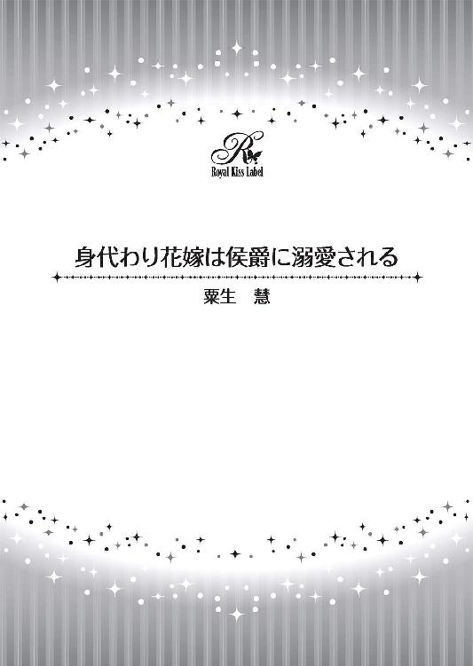

| 身代わり花嫁は侯爵に溺愛される【SS付】【イラスト付】 (ロイヤルキス文庫) | |
| 粟生慧 | |
| 株式会社ジュリアンパブリッシング (2016) | |

この物語はフィクションであり、実在の人物・団体・事件等とは、いっさい関係ありません。
イラスト・やすだしのぐ
涼やかな風が吹き渡る。その風に乗って、白薔薇のかぐわしい甘い香りがミレイユの鼻孔をくすぐる。
辺り一面に、白い薔薇が咲き誇っている。近くには蔓薔薇が巻き付くアーチがあり、その先に薔薇とアーモンドの木に囲まれた東屋がある。薔薇園の周囲には薄桃色の可憐な花弁を咲かせる、アーモンドの木々が並んでいる。
風がアーモンドの花びらを巻き上げて、視界が薄桃色に染まった。
風にゆるく結ってほつれた金色の長い髪がなびく。ミレイユの紫色の瞳に白い薔薇の花弁が映り込む。彼女は両手に革手袋をはめ、右手に剪定バサミ、白薔薇の束を左腕に抱えている。
紺色の簡素なメイド服すら高価な布地に見えるほど、美しく優雅な娘だ。薔薇の花を庭師に手向けるしぐさは、貴族の子女と見間違えそうになる。
朝露を乗せた白薔薇の花びらのように肌理の細かな乳白色の肌。薄紅色の頬に、紅色の唇は白薔薇に血を一滴垂らしたようだ。可愛らしい鼻筋はそのふっくらとした唇へと伸びている。
けぶるような睫毛の下に輝く、水晶のようなアメジストの瞳は白薔薇を見つめて輝いている。今は革手袋に隠されているけれど、その指先は白魚のように細く長く、爪は桜貝のようだろう。
「ニコラさん、薔薇はこれくらいでいいかしら？」
剪定バサミを持つ手を休めてミレイユが庭師に訊ねる。
「このくれぇでいい。さぁ、そろそろ行きな。使用人頭のヴェルレーさんに怒られちまうよ」
一陣の風が吹き、幾束かの白薔薇が地面に落ちた。
「あ......」
ミレイユは薔薇から視線を外して、朝もやの中に一人の男性を見留めた。ミレイユたちからいくらも離れていない。
蔓薔薇が巻きつくアーチの下に屋敷の主・シャルル＝ギョーム＝ド・ストレイフ侯爵と思しき人物が立っていた。
背が高く均整の取れた体つき、長い黒髪を後ろで一つに束ねている。ミレイユとは対照的に、艶やかな黒髪がしどけなくシャルルの顔にかかっている。その碧眼が驚いたようにミレイユを見つめていた。
ミレイユは自分が何か失礼なことをしたのではないかと、慌てて身の回りを確かめる。そしてもう一度シャルルを見つめた。
怜悧な瞳、すっと伸びた鼻梁。薄く引き締まった唇。精悍な面立ちだ。
臙脂色のジュストコールには同色の糸で紋様を刺繍し、カフスからはレースの袖口が見えている。その下の絹地のオー・ド・ショースはクリーム色で、滝の形をかたどったクラバットをガーネットのピンで留めている。
ミレイユはこんなに近くから侯爵を見たことがなかった。いつも裏方の仕事をしているからだ。
メイドになってから一ヶ月も経っていない。紹介状もなしに雇ってくれたのは、この侯爵家だけだった。紹介状もないので表立った仕事からは遠ざけられ、ミレイユの仕事は家畜や庭師の手伝いが主だった。
秀麗な面立ちのシャルルを前にしてミレイユは息を呑んだ。
（この方が、侯爵様なんだわ......。なんて美しい方なの？）
ミレイユは背が高いシャルルを見上げたまま、自分の心臓が早鐘を打っているのを感じた。薔薇の束を抱えたままのミレイユにシャルルが近づいてくる。
「あ、あの......。わたし、何か失礼でも......？」
するとシャルルは身をかがめて、まるで淑女に花を手渡すようにひざまずいた。
「薔薇が落ちたよ」
ミレイユは足元に散らばった白薔薇の束を見、頬を染めた。シャルルに淑女のように扱われて浮足立つような気分になる。恥ずかしさとくすぐったいような気分に知らず声が上ずってしまう。
「あ、あの......、ありがとうございます」
ミレイユは腰をかがめて礼を言い、白薔薇を受け取る。
──と......。
彼女はシャルルの指にかすり傷を見つけた。長く細い指に、一筋の血の痕。
思わずミレイユは薔薇の束を地面に置き、シャルルの手を取った。白薔薇の棘で傷ついたシャルルの指先を可愛らしい紅色の唇に含み、ちゅうと血を吸う。そして、ポケットから洗いざらしのハンカチを取り出して、血を吸いとったシャルルの指に巻きつけた。

シャルルがまたも驚いたふうな顔をする。それに気づき、ミレイユはとんでもない失敗をしてしまったのかと思い、慌てて言い繕った。
「あ、あの......。血を吸ったのは傷が酷くなってはいけないと思ったからです。そのハンカチは洗ったばかりだから綺麗です」
するとシャルルは優しげにふっと笑った。
「分かった。指は消毒しておくよ。薔薇は食堂に飾るのか？」
立ち上がったシャルルをミレイユは見上げた。
「はい......、それと侯爵夫人にお届けいたします」
「ふむ......。母上は薔薇が好きだからな。君......、名はなんというのだ？」
「ミ......」
ミレイユは答えようとしたが、遠くから呼ぶ声を聞き、シャルルに再度お辞儀をする。
「失礼いたします」
白薔薇を抱え込み、ミレイユはメイド仲間が呼ぶ方向へ駆けていった。
白薔薇の香りとともに金色の髪の妖精は去っていった。シャルルにはそう思えた。
薔薇園を一通り散歩して戻る途中だった。アーチをくぐると、遠目からは貴婦人のように見えるメイドが白薔薇を抱えていた。ミレイユの優雅な立ち居振る舞いに一瞬目を奪われた。名前を聞きそびれてしまったけれど、その美しさは白薔薇のようだった。心を奪われてしまったかのように、彼女が去ってしまった途端、胸が疼いた。
彼女が口に含んだ指が熱い。
ハンカチは清潔な香りがし、薄く白薔薇の残り香もした。体の芯から彼女の唇を奪いたい欲求が湧き立ってくるが、メイドにむやみに手を出せば彼女はやめさせられてしまうだろう。
どれほど心に留まろうともシャルルのものにしてはいけない。それが、この侯爵邸の主たるシャルルの矜持だ。
彼女を見たことがないということは、これからも彼女がシャルルの前に姿を現す可能性は低いということだ。
毎朝、彼女が庭に現れるのを待ってもいい......。それほどに彼女の存在は心の中に刻み込まれた。
微かに血の滲んだ生成りのハンカチをシャルルは唇に当てて、音を立ててキスをした。まるで彼女の体にキスをするように、何度も丹念に唇を当てた。
いつまでも彼女の去っていった方向を眺めたまま、シャルルは佇んでいた。
翌朝、シャルルは白薔薇の少女が現れるだろうと考え、白薔薇園の東屋に座って待っていた。
まもなく庭師のニコラとともに、肥料と土を持ってミレイユが庭に出てきた。シャルルはその様子をしばらく微笑ましく眺めていた。
しかし麗しいメイドが今にも何処かへ消えてしまいそうな不安にかられて立ち上がった。シャルルからは距離があるため、ミレイユはシャルルに気づいていないようだった。どうにかして彼女と話がしたい......。その一心でシャルルは一歩を踏み出した。
一所懸命に苗を植え付けているミレイユは白い肌を土に汚しているが、それでもなお美しい。驚かせないようにそっと歩み寄り、いち早く気づいたニコラにシャルルは目配せした。
「わしはちょっと用事があるから」
シャルルの心情を察したニコラが席を外した。ミレイユはニコラの後ろ姿を目で追った後、苗木をまた植えつけ始めた。
「それは......」
話しかけた途端、ミレイユが驚いて声を上げた。
「旦那様！」
ミレイユが頬を紅潮させている。シャルルは申し訳なさそうに言った。
「少し話ができるだろうか？」
思い切った申し出だった。彼女の名前、素性、何をしていたのか、全て知りたかった。シャルルはミレイユを東屋に連れだした。東屋の軒に朝露が垂れている。湿ったベンチにハンカチを敷いて、そこにミレイユに座るように促した。
「いいえ、わたしは立ったままで大丈夫です。それよりどのようなご用件でしょうか？」
明らかにミレイユは落ち着かなさげに言った。
「ただ話がしたいだけだよ......。君は......なんという名前なんだ？」
「いえ......、しがないメイドでございます。名前など......」
強要することはできない。シャルルは名前を聞くことを諦めた。彼女に気があると下手に期待をさせてはいけないからだ。
「では、どこの出身なんだ？」
「生まれも育ちもミルド町です」
「わたしの領内の町だね。どうしてメイドになろうと思ったんだ？」
ミレイユにシャルルは優しく訊ねた。
「......それは......、病気の母に仕送りをするためです......」
シャルルはミレイユが少し口ごもったのが気になった。それにしても病気の母親のために親元を離れ働きに来るとは健気な娘だ。
「病気の母親が心配ではないのか？」
「もちろん心配です！ 離れて暮らしていらっしゃる侯爵夫人様も、旦那様のことをご心配されているのではありませんか？」
「わたしを？」
意外な質問にシャルルはあっけにとられた。
「母は私のことなどこれっぽっちも心配などしてないだろう。それより、わたしの事を考えることもしないだろう」
すると、ミレイユは悲しそうな顔をした。
「そんなことはありませんわ。侯爵夫人様も母親ですもの。違う形で旦那様を愛していらっしゃいます。ただ、少しばかり旦那様の望んでいる形と違うだけなのですわ......」
ミレイユの優しさが身にしみる。押し付けがましいわけでもなく、取ってつけたような言葉でもない。きっと心からの言葉なのだろう。シャルルはますますミレイユのことが気になって仕方なくなった。もっと話を聞こうとした時、白薔薇園の向こうから、「何やってるんだい！ 早く来な！ ヴェルレーさんのお呼びだよ」とミレイユを呼ぶ声が聞こえた。
「あの......。行かなくちゃ......。失礼いたします」
ミレイユは優雅におじぎをすると、走り去っていった。
結局、シャルルは白薔薇の少女の名を聞くことはできなかった。けれど、少しでも長く彼女の麗しい声を聞くことができたことが嬉しかった。
思いがけないメイドの優しさに触れてしまい、打ち解けない母親のことを思った。あの母親にも優しさがあるのだ......、愛と呼べるものがあるのだと信じたくなる......。
多分、面と向かえば、そんなことも忘れてしまうのかもしれないけれど。それでも彼女の言葉には心に響くものがあった......。
使用人頭のヴェルレーに今日いっぱいでやめてほしいと言われた時は、どうしようかと泣きたい気持ちに駆られた。けれど部屋の戸口の陰から野卑な笑みを浮かべたラウル叔父が顔を出したのを見ると全て合点がいった。せっかく母が逃がしてくれたのに、叔父が自分を連れ戻しに来たと思ったのだ。
「い、嫌です。お願いです。ヴェルレーさん。ここでお勤めさせてください」
懇願するとヴェルレーが困ったように顔を顰めた。
「それが、あなたの叔父様が言うには、すでに雇い口を見つけてしまったというの。先方が急かすので仕方なく迎えに来たというのよ」
「で、でも......」
ミレイユはそれでも食い下がって頼んだ。ヴェルレーは諭すように言った。
「次の雇い口はバルト伯爵のお屋敷です。あなたの働き方はとても良かったわ。叔父様の持ってきた伯爵からの口添えがなかったら、わたしもやめさせるのは嫌だったんだけど......」
そう言ってヴェルレーは封筒を出した。ミレイユはそれを受け取り、中から上質な紙を取り出して広げて読んだ。
そこには流麗な文字で、「申し訳ないが、ある事情からバルト伯爵家でミレイユ＝ル＝コント嬢を雇うことになった。もし仕事に穴が空くようであれば、こちらから信頼できるメイドを一人寄越すが、どうだろうか」という内容が書かれてあった。
ミレイユは紙を封筒に入れて、ヴェルレーに返す。
「あちらの執事からの申し出で、すでに代わりのメイドが来ているの。急なことであなたには悪いのだけど......」
ミレイユは叔父を見た。どうせろくな事で訪れたわけではないと思った。
今からバルト伯爵邸へ行き再度雇われることになるが、どんな仕事に就くのか不安になってくる。
ミレイユは黙りこんだ。胸裏にシャルルの面影が蘇る。美しくてたくましい彼の姿が忘れられない。身分違いだからこれ以上のことなど何もない。けれど彼の姿を思い起こすだけで湧き起こるときめきと胸の鼓動は止めることが出来ない。
瞼の裏に焼き付けておこう......とミレイユはそう決めた。バルト伯爵家に行けば、もう二度と彼に会うことはないだろう。
「さぁ、これが最後のお給金よ」
ヴェルレーが封筒に入った給金をミレイユに渡そうとした途端、ラウル叔父がそれを奪った。ミレイユは手を引っ込めて何も言わなかった。それを見ていたヴェルレーもため息を吐いている。
これが初めてではない。今まで一ヶ月働いてきた給金は全て叔父に奪われてしまっていた。ミレイユにはそれを止める手立てがない。給金を渡さなければ宿屋に残してきた病気の母を路地裏に捨てると脅されているからだ。
ヴェルレーに促されてミレイユは自室に戻って荷物をまとめた。階下に下り叔父に連れられて近隣にあるというバルト伯爵家に向かうことになる。
そこで待ち受ける運命も知らず、ミレイユは叔父と荷馬車に乗った。
道すがら叔父から貴族というのがいかに体面を重んじていて、駆け落ちなどという醜聞が広まればどれだけ酷い損害を得るのかをとうとうと聞かされ、さっき給金を奪いとったばかりなのに金の無心をされたうえ、金を渡さなければ伯爵をゆするからなと脅された。
＊ ＊ ＊
昼食中、シャルルは食堂に飾り付けられた白薔薇に見入っていた。すでにメイドの手によって、鋭い棘は切り取られている。
自分の人差し指の先に残った傷の痕を見ては、柔らかな唇の感触を思い起こし、なんとかして彼女にもう一度会えないものかと思ってしまう。ポケットに入れた生成りのハンカチを取り出して眺める。
シャルルにとって彼女は白薔薇の精だった。頬は薄紅色の薔薇の花。唇は血を垂らした真っ赤な花のようで、肌は透き通るように白く、柔らかな頬の線は繊細な陶磁器のようだった。
昨日のことなのに何もかもが夢のように、もはや遠いことのように思えた。
彼女が誰なのか執事のクーレに聞いてもいい。なんなら使用人頭のヴェルレーを呼んでもいい。そして庭師と一緒に薔薇を剪定していた娘の名前を聞けばいいことだ。けれどそうすれば彼女は特別扱いを受けるメイドになってしまい、屋敷にいることができなくなるだろう。呼び出すということは主人に特別に気に入られたか、不興を買ったか、どちらかだ。それは彼女にとって嬉しいことではないだろう。だから、あえてシャルルは三度目は我慢した。
クーレが銀トレイを持ってきて、その上に重ねておいてある手紙の封書を見せてくれた。一枚ずつめくると、少し離れたカントリーハウスに住む母親からの手紙があった。内容を読まなくてもなんとなく察しがつく。
侯爵夫人は侯爵家を継いだシャルルに結婚して世継ぎを儲けるように日頃から口やかましく言ってきた。今回の手紙も似たような内容だろう。
それでも母親の手紙を無視することはできず、シャルルは手紙の封をナイフで開けて読んでみた。手紙には社交辞令と驚くべきことが書いてあった。
隣の領地のバルト伯爵夫妻の娘、マリエッタを嫁にもらうことにした。近々顔合わせの舞踏会を開きたいというのだ。確かに一年前から侯爵夫人は息子のシャルルにバルト伯爵夫妻の娘を嫁にもらうように言ってきていたが、それは口先だけのことだと思っていた。それなのに侯爵夫人は息子に黙って半年前から約束を取り付けて準備を進めていたのだという。
親同士が結婚相手を決めるのは珍しいことではない。子供の意志など無視して結婚を進めるのもよくあることだ。
マリエッタなど顔も定かに覚えていないくらい興味がない。シャルルは母親の強引さにため息を吐いた。秀麗な顔に翳りが差す。今はその気などないとはっきり話をしなければいけないのだろう。結婚はもっと後でいいと。シャルルは母親からの手紙をテーブルに置き、立ち上がった。
＊ ＊ ＊
バルト伯爵のお屋敷に荷馬車で乗り付けたミレイユは、着くなり伯爵夫妻に呼ばれた。普通ならばこんなことはない。雇うのはバルト伯爵だが、メイドを決めるのは使用人頭だし伯爵が直接会うことなどないはずだ。しかもラウル叔父まで一緒についてくる。質素な服がみすぼらしく感じられるほど立派な屋敷の中を通り居間に連れてこられた。
そこに椅子に腰掛けた伯爵夫妻がいた。
バルト伯爵は白髪交じりの金髪で口ひげを蓄えている。伯爵夫人はおっとりとした美人で、ミレイユによく似た薄い色の金髪をゆるく結い上げていた。
「腰掛けて」
バルト伯爵に言われ、ミレイユはおずおずと一人がけの椅子に座った。
「うむ......、確かに教えられたとおり瞳の色以外マリエッタにそっくりだ......。髪の色もだ」
事情が飲み込めずミレイユは質問しようとした。それを叔父が割って入り邪魔をする。
「それじゃあ、約束の金をもらいやしょうか」
「うむ......」
バルト伯爵が傍らにあった革袋を叔父に手渡すのを、ミレイユははっきりと見た。なんのためかわからないが、ミレイユは伯爵に買われたのだ。
「確かにいただきやした。それじゃあ、この娘は好きなようにしてくださってかまやしませんよ」
「好きなようにってどういうこと」
ミレイユが立ち上がろうとした時、伯爵夫人が押しとどめた。
「お待ちなさい......。何も酷いことをしようと言うわけではないの......。あの方がわたしたちの娘によく似た娘を知っているというので話を聞いたのよ。あれは謝礼金なの」
伯爵夫人が心配そうにミレイユを覗き込んだ。
「どういうことですか？」
バルト伯爵がため息を吐いた。
「まさかこれほど似ているとは思わなかった。実は恥ずかしながら侯爵との結婚が決まった途端に、娘のマリエッタが恋人であるアルヌー伯爵の三男坊のリュカと駆け落ちしてしまってね......。おそらく以前政治がらみで敵対していたアルヌー伯爵の息子だから反対されると思ったのだろう......。彼女を連れ戻すまで君にマリエッタの代わりを頼みたいのだ。あの金はその謝礼なのだ」
ミレイユは驚愕した。
叔父は高額な金額でマリエッタの身代わりとして彼女を売ったのだ。しかもそれにはだれとも分からない侯爵と結婚するということも含まれている。
ラウル叔父はへこへことお辞儀をしながら執事に連れられてその場を立ち去った。それを見届けてからバルト伯爵が口を開いた。
「わたしの名はサリム＝ド・バルト伯爵。妻はセゴレーヌだ。君は今からわたしたちの娘になる。実の親子のように接してほしい。侯爵に偽りの親子だと悟られないように」
「侯爵......」
ミレイユはつぶやいた。
どこの侯爵かは知らないが、ふと脳裏にシャルルの顔が浮かぶ。けれどそんな都合のいいことが起こるわけがない。しかもあの金にはミレイユの純潔も含まれているかもしれないのだ。
「あの......、マリエッタお嬢様はすぐに見つかるのでしょうか？」
伯爵夫妻が交互にため息を吐いた。
「そのつもりだ......。あの男が君の心配はいらないと言っていた。君はこの役目を果たしてくれるだろうか？」
ミレイユはおずおずと訊ねた。
「嫁ぎ先の侯爵家はどなたなのでしょうか？」
「良かった......。受けてくれるのだね。君が嫁ぐ先はストレイフ侯爵家だ。この隣の領地に住んでいらっしゃる。彼はちょうど二十歳だ。君はいくつだね？」
「十六です」
ミレイユは、まさかと思っていた結婚相手がシャルルだとわかって、驚きながらもひそかに喜びを感じた。
セゴレーヌ夫人がしんみりとした顔つきをした。
「まぁ、十六歳なの......。お母様は？」
「母は病気で寝たきりです。叔父が世話をしてくれていて......」
半分は本当だが、世話をしてくれているかは分からない。叔父の言うことを信じるしかない。おそらくこの取り引きを嫌がれば脅しの材料にされてしまうのだろう。
ミレイユは観念して伯爵夫妻を見つめた。覚悟を決めるしかないのだ。
それに結婚相手は出会ったばかりだけれど、心に深く焼き付いたシャルル自身だ。たとえ身代わりの結婚でマリエッタが戻ってきたら別れることになるのだとしても、ミレイユは嬉しかった。
叔父夫婦の営む粗野な宿屋で最悪な仕事につくことになるよりはマシなのだ。目の前にいる伯爵夫妻はミレイユをあの劣悪な環境に戻すことはしないだろう。
ミレイユは母親の保護をバルト伯爵に頼んでみた。すると二つ返事で承諾してくれた。決心がついたミレイユは背筋をぴんと伸ばし足を揃えて、毅然とした面差しで伯爵夫妻を見つめた。
「それでわたしは何をすればいいのでしょう？」
セゴレーヌ夫人がうなずいた。
「半月後にはストレイフ侯爵と顔合わせの舞踏会を開きますから、あなたもそのつもりでいてちょうだい」
「はい」
ミレイユは覚悟を決めて答えた。
てっきりミレイユは使用人部屋に案内されるものだと思い込んでいた。身代わりといえど自分は庶民だ。けれどミレイユの侍女になると紹介されたソランジュは、まるでミレイユを伯爵令嬢のように扱った。
ミレイユはどぎまぎしながら、声をかけた。
「ミレイユ＝ル・コントよ。よろしくね」
ソランジュに軽く頭を下げると執事のフォーレが、
「ソランジュは侍女でございます。あなた様はこのバルト伯爵家のご令嬢でございます。挨拶など無用でございます」
「は、はい......」
突き放されたように感じたけれど、すでに貴族のマナーの訓練は始まっているのだ、とミレイユは感じた。
白い壁には刺繍を施した壁紙があしらわれている。白とモスグリーンに統一された廊下を抜けていく。オークで出来た重厚な階段を登ると、その階の一室に案内された。中に入ると高価な調度品が揃えられており、どれも真新しいようだ。
「ここは......？」
案内してきたソランジュに訊ねると、
「ここはご長女、アルグレッタ様のお部屋でございます。客室ではどうにも手狭になりますので、奥様からここを使用されるようにと仰せつかっております」
「その方はどこにおられるのですか？」
「侍女に敬語はお使いになられませんように。お嬢様は幼い頃に行方不明になられたのでございます。それからこの部屋はそのままに......」
ミレイユは驚いた。駆け落ちしたマリエッタの他に、バルト伯爵夫妻には幼い頃にいなくなってしまった娘がいるのだ。
ミレイユはセゴレーヌ夫人の不遇を悲しく思った。自分は父を幼い頃に亡くしたけれど、母子仲良く暮らしてこられただけ幸せだ。母親が病気で働けないため、叔父夫婦が経営している宿屋の手伝いをしていたが、そこを出入りするならず者たちに乱暴されそうになって、母親に相談して侯爵家に逃げ込んだのだった。
侯爵家の使用人頭ヴェルレーはミレイユの境遇に同情してくれて、裏方の仕事に雇ってくれた。もし侯爵家に嫁いだならば、自分は恩を感じたその人たちを使用人として扱わねばならない。
ミレイユは心が痛んだ。
叔父によればマリエッタが駆け落ちしたのは貴族にとって大変な醜聞なのだそうだ。その醜聞が明るみに出ないように、バルト伯爵夫妻は苦心しているのだろう。母親の面倒を見てくれると約束してくれた夫妻には恩がある。
どれだけ侯爵家の方々に対して心が痛もうと、黙っていなければならない。騙すことになるけれど、我慢しなければならない。嘘を吐くことは神様の教えにも反する。正直であれという教えに背くことになるが、今はその教えを破らねばならない。その代わりできるかぎり人に親切にしようとミレイユは心に決めた。
「ミレイユ様」
ぼんやりと考え込んでいる間に、ベッドの臙脂とピンク色の刺繍がしてあるデュヴェットカバーに幾着かのドレスが並べられていた。どれもビロードか絹のドレスで、ドレープやレース、リボンやタフタがふんだんに使われている。
色は様々で、白地のサテンに黒のレース生地を合わせたものや、クリーム色に空色を合わせたもの、薄い紅色にヴァイオレットを合わせたものがあった。
「これは？」
「顔合わせの時のドレスでございます。奥様がいなくなったお嬢様のために毎年お作りになられているのですが、サイズが合わなくては仕方ございませんから......。顔合わせの時までにお直ししたいのでございます」
「まぁ、そうなの......」
どれも高価な布地を使っている。ミレイユが一生かかっても着られそうにないドレスばかりだ。ミレイユは促されるまま質素な生成りのドレスを脱いだ。恥ずかしいことにどの生地にも繕いがあって、ソランジュのメイド服よりもみすぼらしいものだった。
ソランジュはそんなことをおくびにも出さず無表情に、シュミーズとドロワーズ姿になったミレイユのボディスを外し、新たに細かな刺繍で飾られたボディスを締めた。元々細い腰がますます細くなる。胸が持ち上げられてボディスから零れ落ちそうだ。かろうじて桃色の乳首が隠れている程度。
盛り上げられた胸を覆うようにドレスの上衣が着せられ、アンダースカートを幾重にも合わせると、上衣の内側についたホックでドレスを取り付けた。ふんわりと腰回りが膨らみ、細い腰が強調される。
姿見が持ってこられて、ドレスを着たミレイユは初めて自分の姿を見た。ほつれて乱れている髪とは対象的に美しく飾り立てられた、白と黒レースのドレス姿。よく見てみると白地に黒糸で複雑な模様が刺繍されている。素晴らしい手の込んだ高価なドレスだ。
「驚きました。ぴったりです」
無愛想にしていたソランジュがにっこりと笑った。
「他のドレスも合わせてみましょう」
そう言って、ソランジュが今着せたばかりのドレスを脱がせてくれる。
「貴族の方々は大変なのね。こんなに布地のあるドレスを着せられるんだもの」
一気に緊張が緩んだのか、ミレイユにドレスを着せながらソランジュが笑った。
「貴族の特権とはおっしゃいますが、こんなに着込んでいては走ることもままなりません」
「そうね。だからあんなにお行儀よく静々と歩くことになるのね」
ミレイユの言葉にソランジュがたしなめるように付け加えた。
「出来ましたらミレイユ様は走らないようになさってください。転んでしまってドレスが汚れてしまったら、大変でございますから」
ミレイユもその言葉に微笑んだ。
「そうね、そうするわ」
他愛ない話ができるようになった頃には、すべてのドレスの試着が済んだ。
「どのドレスがよろしゅうございますか？」
ソランジュがデイドレスを準備しながら訊ねた。
「そうね......。少し派手かもしれないけど最後の薄紅とヴァイオレットのリボンのドレスにするわ」
「瞳の色とお似合いでございますね」
「ありがとう」
ドレスを脱いだ頃、扉がノックされてセゴレーヌ夫人が入ってきた。
「どうだった？」
叔父と話をしていた時よりも随分緊張がほぐれた顔つきだった。多分ミレイユが思っていた以上に伯爵令嬢に似ていたことがバルト伯爵夫妻を安堵させたのだろう。
下着姿のミレイユを目にしてセゴレーヌ夫人が、
「早すぎたかしら？」
と微笑んだ。
「いいえ、ドレスはみんな試着しました。ちょうど良かったですわ」
「まぁ、安心した......」
「でも......、このドレスはみんな、いなくなってしまったお嬢様のものでは？ わたしが着てよかったんでしょうか？」
セゴレーヌ夫人はハンカチで目頭を押さえると、ミレイユをベッドに腰掛けるように促した。夫人もミレイユの隣に座る。
「いいのよ。あなたが着てくれればアルグレッタも喜ぶわ」
ミレイユは身をかがめて、セゴレーヌ夫人を覗き込んだ。
「伯爵夫人......」
「まぁ、駄目よ。わたしのことはお母様と呼んでちょうだい」
「わたしなんかがお嬢様の身代わりになれるでしょうか？」
セゴレーヌ夫人の悲しみを慰めようと、ミレイユは懸命に話しかけた。
「今日からあなたはわたしたちの娘よ」
貴族だからといって裕福で絶望や失望も知らずに生きているわけではないのだ。幼い自分の娘を失うという不幸をセゴレーヌ夫人は背負っているのだと思うと、ミレイユも悲しい気分になってきた。
けれど一緒になって落ち込んでいてはいけない。明るく振る舞わなければ。
「お母様、着替えたら早速マナーについて教えて下さい。わたし、一所懸命覚えます」
セゴレーヌ夫人がハンカチで涙を拭いた。
「侯爵夫人に手紙を書かなければ......。その間にソランジュとドレスの直しを相談しておいてね」
と言ってセゴレーヌ夫人は部屋を出て行った。
ミレイユは自分の生成りのハンカチを思い出した。そのハンカチをシャルルの指に巻きつけてきたことを。粗末なハンカチだからシャルルはきっと捨ててしまうだろう。
しかも自分は身代わりとして売られてしまった。バルト伯爵夫妻に母親を保護してもらう恩に報いらねばならない。シャルルに自分があのメイドだと知られてはいけないのだ。そうしなければ伯爵夫妻だけでなく、駆け落ちしたマリエッタの醜聞が明らかになってしまう。
このことは何もかも秘密にしなければならない。
シャルルへの胸のときめきも今は胸に仕舞っておこう......。顔合わせの時、初めて彼と会ったかのように振る舞うために。
「ソランジュ、ドレスはどうしたらいいかしら？」
「そうでございますね......。お嬢様は腰が細くいらっしゃるから、腰を強調いたしましょう」
一通りの相談を終えると、ホールに降りることにした。
ミレイユは黄色地に黒刺繍を施しレースのエプロンをあしらった可愛らしいリボンのデイドレスを着て、セゴレーヌ夫人からマナーを学ぶために階下へ降りていった。
セゴレーヌ夫人に家令と執事、使用人頭を紹介してもらい、執事からテーブルマナーを学ぶことになった。
「晩餐の後にダンスの作法を教えてあげるわ。ダンスは踊れるかしら？」
セゴレーヌ夫人に訊ねられてミレイユは自信なさげに答えた。
「酒場で踊るような騒がしいダンスなら知っていますが、舞踏会で踊るようなものは......」
「ではダンスは主人に教わるといいわ」
「はい、そうしますわ。お母様」
ミレイユがそう言うと、セゴレーヌ夫人の頬が少し上気したように見えた。
「顔合わせの場所は侯爵のお屋敷と決まっているの。あなたがわたしたちのところに来てくれたおかげで本当に助かったわ......。最初はマリエッタとして顔合わせするつもりだったけれど、主人と相談してアルグレッタとしてあなたを紹介するわ」
ミレイユは訊ねた。
「顔合わせの舞踏会はいつなんですか？」
「実は間もないの。侯爵夫人が侯爵の返事など待たないとおっしゃっていて。半月後には取り付けてしまうおつもりらしいわ。侯爵が二十歳のうちに結婚させるって言いはるのよ。侯爵夫人も侯爵も少し頑固なの」
またシャルルに会えることがとても嬉しかった。
でもシャルルが頑固だとは到底思えない。紳士的で優しく思いやりがある......。裏方でもシャルルは尊敬されている。公平で誠実で下のものにも思いやりがある方だ。
ミレイユはそれまで勝手にシャルルがもう少し年上の男性だと思い込んでいた。
それだけに今朝シャルルを目にした時は衝撃を受けた。彼の美しい碧眼、優しく微笑む口元。その姿を目にした途端、電撃のような痺れが体中に走った。
生まれて初めての感覚で、胸と頬が熱くなった。胸は早鐘のように鳴り、相手にも聞こえてしまうのではないかと思えた。その瞬間、恋してはならない相手に恋してしまったのだと気づいたのだ。
その自分がアルグレッタ伯爵令嬢の身代わりとして侯爵家に嫁ぐ。騙すことになるけれど、ミレイユは心がわななくほど幸せを感じた。
「本当にストレイフ侯爵様には分からないと思いますか？」
ミレイユは心配になって訊ねた。
「わたしたちには外国に娘がもう一人いたと手紙に書いておいたわ......。マリエッタの身代わりとしてあなたを嫁がせても、瞳の色で娘ではないと分かってしまうでしょう。だからそのまま侯爵の花嫁になってほしいと考えているの」
一時的な花嫁ではないのだ。ミレイユは嬉しさと恐怖に震え上がった。
「わたしは一生アルグレッタ様として過ごすのですか？」
「お願いよ。決してあなたが困るようなことにはしません。あなたのお母様もちゃんとお世話しますから」
ミレイユは胸をなでおろした。
「でもストレイフ侯爵様にばれてしまったら、どうしたらいいんでしょうか？」
セゴレーヌ夫人が微笑んだ。
「そうならないように努力するわ。あなたの相談役としてずっと一緒にいるから安心してちょうだい？」
セゴレーヌ夫人がいつもそばにいると聞いてミレイユは安心した。
「分かりました。できる限りストレイフ侯爵様の良い妻として努めます。決して身代わりだということは明かしません」
「ええ......。これはわたしたちとの秘密にしておいてちょうだいね......？」
ミレイユは深くうなずいた。
＊ ＊ ＊
母親からの手紙を読んだシャルルは外出用のコートに着替えて馬車に乗った。
母親である侯爵夫人は屋敷から少し離れた丘陵地に建てられたカントリーハウスに住んでいる。カントリーハウスといえど狭苦しいものではない。ガラス張りのりっぱなアトリウムがあり、本邸も二階建ての広々した屋敷だ。個人的な小規模の舞踏会を開けるホールもある。
アトリウムにはいろいろな種類の薔薇が育成され、夫人自ら改良品種を生み出している。園芸が何よりも好きなのだ。かくいう侯爵邸の薔薇園に咲く白薔薇も侯爵夫人が手を加えたものだった。白薔薇の芳香を甘く匂い立つものにしたのだ。
白い花弁を肉厚にして何層も重ね合わせたので、まるで幾重もベルベットをあしらったペチコートに見える。貴婦人のドレスというのが、あの白薔薇の名前だった。
シャルルはその薔薇を手にしてアトリウムに赴いた。昼食までにはまだしばらくある。アトリウムに設けたテーブルの椅子に侯爵夫人が座ってお茶を飲んでいた。
「やっときたの？ こんなに遅かったら薔薇が枯れてしまうわ」
侯爵夫人がシャルルを見つめてたしなめるように言った。
「それほど遅くはないですよ。それにここに来るまで生けてあったんですから」
「薔薇は枝から摘みとった時点から枯れ始めているの。今が一番咲き誇っている時分だから枯れるのは早いのよ」
「そうなんですか」
勧められるままにシャルルは椅子に座って、お茶の入ったカップを手に取った。
メイドに手渡した白薔薇は花瓶に生けられてテーブルを飾った。
「それで？」
とシャルルは母親にぞんざいな口調で訊ねた。
「冷たい子ね。そんな口の利き方を親にするものじゃないわ。話は手紙に書いてあったとおりよ」
「顔合わせの舞踏会......」
シャルルは顔を顰めた。
「そう。半月後には準備を始めるの。もう手紙は送っておいたわ。そうでないと皆さんにも都合があるものね」
侯爵夫人は軽い口調でそう言うと笑った。
「母上。わたしに相談することもなく話を進めてしまうのは納得がいきません。わたしはまだ結婚......」
そこまで言ってシャルルの胸中に今朝の娘の姿が浮かんだ。
「結婚がどうかしたの？」
シャルルは我に返り、
「わたしはまだ結婚をするつもりはありません」
「今朝、バルト伯爵から手紙が来たの。話を進めていたマリエッタは病気にかかってしまって遠い地に療養に行ってしまったのだけど、外国から長女のアルグレッタが戻ってきたんですって。長いこと異国の修道院にいたそうなの。十四年前に行方不明になった娘が見つかったみたいね。その子と話を進めたいということになったわ」
シャルルは眉をひそめた。確かにバルと伯爵夫妻は十四年前に双子の長女を攫われたと聞いている。その娘が都合よく外国の修道院で見つかったというのか？
「要するに何があろうとわたしを結婚させる気は揺るがないのですね。でもわたしはその花嫁を愛せないかもしれないのですよ。その娘をあたら不幸にしてしまうかもしれない」
「そんなことはないわよ。幸せかどうかはその娘が決めることですもの」
カップを口に運んで侯爵夫人が言った。
「お父様は若くして亡くなられた。あなたは無事に二十歳まで生きられたけれど、いつ神様があなたまで連れて行ってしまうか分からない。だから今すぐにでも世継ぎがほしいのよ。あなたの血を引く世継ぎ。その世継ぎを産んでくれるのなら、それがどんな娘であろうと関係ないの。庶民は駄目だけど......」
「なんてことですか......」
シャルルは呆れたように額に手を当てた。
「それでは女性を粗末に扱いすぎです。結婚は神聖なものです。子供を生ませるためだけに結婚するなんて......！」
侯爵夫人が笑った。
「あなたは女性と結婚するのではないの。家と結婚するのです。これは家の問題。あなたの問題でも花嫁の問題でもないのです」
シャルルは苦々しげにつぶやいた。
「母上、それであなたはご満足ですか？ 女性をそんなふうに扱うということは、ご自分の存在までそのように扱うということですよ？」
「あら、わたしはあなたを産んだおかげでこうして好きなことをして暮らせるの。バルト伯爵の娘に言うのね。世継ぎを産んだら好きなようにお金を使って暮らしたらいいって」
シャルルはミレイユの言葉を思い出した。到底、自分と母親は分かり合えそうになかった。
「それでは金で花嫁を買うようなものです。結婚には愛情が必要ですよ」
「そうね......。愛情は必要だわ。でも神様は無慈悲に愛するものを奪ってしまうの。それならば、最初から愛情なんていらないと思わないこと？」
シャルルは母親のひねくれた物言いに呆れた。
「わたしにはもうほかの道はないと？」
侯爵夫人が澄まして言った。
「今断ればお相手の令嬢が恥をかくだけ。顔を合わせてからでもいいじゃないの。わたしのつてを使えばあなたに釣り合う女性をいくらでも見つけてあげられるから」
シャルルは渋い顔をした。
「どうであろうとわたしに逃げ道はないというわけですね」
侯爵夫人が軽やかに笑った。
「そういうことになるわ、シャルル。諦めなさい」
シャルルは昼食を侯爵夫人と一緒に摂ることにして、アトリウム内に咲き誇る香り高い薔薇たちを見て回った。どんな薔薇を見ても、シャルルの頭にはあの白薔薇を抱えた妖精だけが浮かび上がる。彼女の名前を聞けばよかった。けれど聞いたからといってどうなるわけでもない。明日の朝、彼女と庭で出会えることを願うしかなかった。
あの澄み切った紫の瞳。金糸のように細く長い髪。朝露を含んだような赤い唇。ふっくらとして肌理の細かな頬。たおやかで掴めば折れそうな細い腰。
簡素なメイド服が、どんな豪華なドレスよりも素晴らしく見えた。どんな高貴な令嬢でもかなわないほどの美貌と優雅な振る舞い。
あの娘がどんな素性であろうと、何か事情があってメイドに身をやつしているのだろう。庭いじりといえば表に出ることのない仕事だ。家内の仕事は任されない。
心の片隅ではそんな娘に心を奪われるなんて......とも思っている。けれど頭のなかを覆い尽くす彼女にもう一度会いたいという想いは消すことが出来ない。
薔薇の現身だと口の中でつぶやいた。どんな薔薇を見ても彼女を思い起こしてしまう。特に貴婦人のドレスという白い薔薇を見ると彼女がそこに佇んでいるように感じた。
隣をそぞろ歩く侯爵夫人がちらりとシャルルを見上げて言った。
「それとも、もう心に決めている娘がいるの？」
シャルルには答えられない。
庶民の、しかもメイドだとは言えない。
「いいえ、いませんよ」
いるのだと言えたらどんなにいいか。悔しくてシャルルは唇を噛んだ。
「まぁ......、表情は口程に物を言うというけれど、言えないということは許されない恋ということかしら」
母親が含み笑う。シャルルは憮然としたまま答えなかった。
「いいわ。これで決まりね」
「ええ、母上のお好きなように」
花嫁となる娘には申しわけないけれど、母親の言うように、「世継ぎを産んだら、後は好きに暮らしていい」と言うしかないのだろう。これに、「はい」と答える花嫁だとしたら、シャルルは彼女を一生愛せないと思った。
金目当ての伯爵令嬢はあまりに醜い。たとえそれが幼い頃から知っているバルト伯爵夫妻の娘でもだ。
そういうふうに考え込んでいると頭が痛くなる。全ては侯爵夫人のせいだが、たった一人の母親を落胆させたくはない。全ては家のため......。そう諦めて受け入れることにした。
＊ ＊ ＊
半月間、マナーや楽器、詩の朗読など様々な勉強をさせられて、ミレイユは頭からいろいろなものが零れ落ちそうな思いだった。今までの生活で楽器といえばリュートかヴィオラしか知らなかったのに、チェンバロという楽器の弾き方まで習った。
なんとか一曲覚えたら今度はいくつかの詩を覚えさせられた。これは頭の中に作った曲回しに合わせて覚えたのでうまく短時間でやりおおせた。ダンスなどは一番面倒で、しかもバルト伯爵がいない時はできないので時間がかかった。
こうしてミレイユはバルト伯爵夫妻の娘......アルグレッタになった。明日になったら侯爵家に招待された顔合わせの舞踏会に出席する。
疲れた体を癒やすためにミレイユは散歩に出た。
バルト伯爵邸の前庭は広い芝生の丘陵になっており、そこここに低木が茂り、春の花が植えられている。土に芝生が生えていないのを見ると、枯れたらすぐに次の花を植えているのだろう。
日傘を差してうねる小道を歩いて行くと、しだれた枝の木が佇む小池にたどり着いた。可愛らしいアーチ型の橋がかけられている。そこを渡ると、小池の真ん中にせり出た部分があり、腰がかけられる小さな東屋のようになっている。
ミレイユはそこまで行き、椅子に座って芝の丘をはるばる見渡した。ゆったりとした気分でいると、めまぐるしかった毎日が嘘のようだ。
ひたすら勉強に打ち込めたのは心に焼き付いているシャルルの面影のおかげかもしれない。身代わりといえど身分が違う自分は決してシャルルに釣り合う相手とは言いがたい。
しかも事情があると言ってもシャルルを騙して結婚することになる。バルト伯爵夫妻に秘密にしてほしいと言われてそれを破ることはできない。きっとシャルルと一緒にいる限り忘れることのできない楔になるだろう。
空を見上げてから小池に目を移すと、青々とした蓮の葉が水面に浮かんでいた。その青い色を見ていると、シャルルの透き通った深い青い瞳を思い出す。知的でいて精悍な頬の稜線。くっきりとした唇。引き締められた口元。
ひざまずいて薔薇を渡してくれた姿を思い出す。たかがメイドに淑女のような態度を示してくれた彼を騙すことは心が引き裂かれるように痛んだ。
叔父の問題もある。ミレイユは手袋をはめた手を揉みしだいた。バルト伯爵自身が秘密を明かすのならまだしも、叔父が関わってきたならばシャルルがどれほどに怒りに駆られるか、量り知れなかった。
しかもバルト伯爵たちにまで迷惑がかかる。叔父はきっとミレイユがお金を渡さなければシャルルにばらすだけでなく、バルト伯爵夫妻まで脅すだろう。そうなってしまったらなんと言ってバルト伯爵夫妻にお詫びをすればいいのか分からない。
とんでもないことになってしまったんだわ......。二重の秘密を抱えてミレイユは打ちひしがれた。けれどこのことをバルト伯爵夫妻に悟られてはいけない。
彼らは母親を叔父から守ってくれているのだ。医者にも診せてくれ、滋養のある美味しいものを食べさせてくれている。母親が日毎に元気な顔を見せるようになっているのは十分に分かっている。
それも全てバルト伯爵夫妻のおかげだ。恩を仇で返してはいけない......。ミレイユは決心した。秘密は必ず黙っていよう......。誰にも悟られてはいけない。
自分はアルグレッタとして生きていくのだ......。そのことでシャルルを騙すことになっても......。
心臓がきりりと痛み、激しく動悸がした。胸を黒い靄が塞ぐ。辛いけれど耐えないといけない。この苦しさを悟らせてはいけない。
少しでも暗い顔をすれば、思いやりのあるシャルルはすぐに見破ってしまうだろう。明るく努めなければ。ミレイユは涙の浮かぶ瞳を空に向けた。
冴え渡る青い空に薄絹のような雲が流れている。刷毛で刷いたような雲が少しずつオレンジ色に染まり始めた。風も冷たさを含み始める。
涙を呑み込み、ミレイユは来た道を引き返していった。
＊ ＊ ＊
舞踏会当日、侯爵家は朝から大忙しだった。
侯爵夫人はメイドたちに薔薇の飾り方を指示して、料理のメニューを執事と練りあげ、シャルルは身の置き所がなかった。
こういった舞踏会の主人公は女主人だ。どのような舞踏会になるかは女主人の腕の見せ所といったところだろう。
大広間の敷物も赤地に金模様のペルシャ織のじゅうたんに変えられた。居間にあったピアノを大広間に移し、ヴィオラなどの弦楽器も用意した。もちろん音楽家たちを雇ってはいたが、貴族の子女にも演奏をしてもらう余興は考えてあった。
修道院で育ったというアルグレッタも詩の朗読ぐらいはしてくれるだろう。その程度の教養は身に着けているはずだ。けれどもしかすると突然このような華やかな場に放り込まれて気後れするかもしれない。そうしたら息子のシャルルに任せきりにして二人をいい雰囲気にするのも手だと侯爵夫人は企んでいた。
一方、シャルルは準備の喧騒から逃げるようにして書斎にこもっていた。いつもどおり家令のバルトリと一緒に荘園の経営の費用、収支を計算して、うまく資産を運用できるように書類を作成する。
「何をやっているの？ あなたもこちらに来て様子を見てちょうだい」
と時折侯爵夫人が書斎に顔を出すけれど、シャルルは肩をすくめるだけで母親に口を出すつもりはないと意思表示した。
「自分の花嫁を見る折角の舞踏会だというのに」
侯爵夫人はそう言いながら忙しなく大広間に戻っていった。
シャルルは軽い昼食の後、気晴らしに散歩に出た。
匂い立つ薔薇の甘い香りに包まれるとあの娘の姿が蘇ってくる。娘が口に含んだ指の傷はもう治ってしまったけれど、今でも生々しくその唇の感触を思い出すことが出来る。
メイド服越しからも分かる細い体の線。胸の布地が突っ張って見えるほど豊かな乳房。片腕で抱き上げられそうな柳腰。
本当に白薔薇の精のようだった。それを証拠付けるように、あの日以来白薔薇園に毎朝出向いているけれど彼女の姿はなかった。
庭師のまとめ役でもあるニコラに彼女のことを訊ねるとやめてしまったと言われた。ヴェルレーを問い詰めてようやく彼女がバルト伯爵に雇われたということだけは分かった。
シャルルの目に晒されたことが原因で、消えていなくなってしまったかのようだった。
名前を訊ねると、彼女の名はミレイユ＝ル・コント。珍しくもないありふれた名前だったが、シャルルは何度もミレイユの名を口ずさんだ。
愛の歌をうたうように何度も唱えながら、彼女の姿が白薔薇の間から現れないか待ち望んでもみた。けれど現実は残酷で、メイドをやめてしまった彼女にもう二度と会うことはかなわないことを思い知らされるだけだった。
執事のクーレがやってきた。
「ここでございましたか、旦那様」
「なんだ、もう正餐の準備をせねばならない時間か？」
「侯爵夫人が夜会の服を何着か試着してほしいとの仰せです」
シャルルは大仰にため息を吐いた。
「わたしを着飾ってどうするというのだろう、母上は......。わたしは人形でもなんでもないのに」
「どうぞ、お早めにお部屋へ」
クーレは一礼して戻っていった。
シャルルは白薔薇園を見渡した。この庭をあの娘と眺めたかった。その想いを胸に秘めて、シャルルも屋敷に向かった。
夕刻になり、侯爵邸にぞくぞくと招待客が集まってきた。馬車寄せに大きな箱馬車が何台も止まり、近習たちが客の案内に勤しんでいる。バルト伯爵夫妻もミレイユを伴って、やってきた。
ミレイユは半月前に決めたとおりに、薄紅色のオーガンジーとリボンがふんだんにあしらわれたヴァイオレット色のドレスを着ている。生地には濃い目の紫の糸で刺繍がなされており、光沢のあるサテン生地が照り返るたびに刺繍が映えた。肩口をオーガンジーで膨らませた、フリルで縁取った襟ぐりは深く、盛り上がった乳房が柔らかなマシュマロのようだ。女性らしい膨らみと色合いを持たせつつ、腰の細さを強調するデザインになっている。
ソランジュが気を利かせて縫い直してくれたのだ。
淡い金髪をゆるく結い上げて肩にかかった長い髪を後ろに流している。ミレイユの乳白色の肌は興奮に上気して紅色に染まり、唇はつややかに赤い。紫色の瞳もきらびやかな世界を見て輝きを放っていた。
その反面、ミレイユは気後れもしている。
（こんな場所......、わたしには不釣り合いだわ......。本当に誰にもばれずに溶け込めるかしら？ 分からなくなったら、すぐにセゴレーヌ夫人のところに行くようにと言われたけれど......）
マナーだけではない。今まで外国にいたことになっている。その話を聞かれた時は、修道院の陰気な話をして人々の興味をなくすようにとアドバイスされている。
ミルド町の陰気な教会の雰囲気は分かっている。宿屋での暮らしがどれほど貧しかったかも知っている。粗末な食べ物の話をすれば、みんな興ざめするだろう。
ミレイユは作り話が苦手だ。みんなが期待するような冒険譚など持ち合わせていない。バルト伯爵夫妻はそれでいいと慰めてくれた。ミレイユのありのままでいいと言ってくれる。
どうして夫妻が自分にこれほど優しいのか、ミレイユには分からなかった。
（それとも貴族という方々はみんな優しいのかしら？ 侯爵様もとても優しいお方だった......。みんなが彼らのように優しかったらいいのだけど......）
ミレイユは近習の手を取り、馬車から降りた。続いてバルト伯爵夫妻も馬車から降りる。馬車から出ると、あの懐かしい白薔薇の芳香がミレイユの鼻をくすぐった。
「白薔薇の香りだわ......」
「とても良い香りね」
バルト伯爵夫妻に伴われて、ミレイユは近習に案内されるままに大広間に入っていった。
大広間は白薔薇を基調にして白い垂れ幕が壁を覆い、白薔薇を生けた背の高い花瓶があちらこちらの壁を飾っている。白と薄黄緑色の葉が優雅でしとやかな雰囲気を作り上げている。
バルト伯爵夫妻は、まずホステス役の侯爵夫人のもとにミレイユを連れて行った。侯爵夫人の後ろには凛々しい男性......シャルルが立っている。
彼はシルバーグレーのジュストコールに黒のモールをあしらい、肩には勲章をつけたサッシュをかけていた。濃い紺のオー・ド・ショースに膝丈の革ブーツを履いている。その姿が目に入っただけでミレイユの胸は高鳴り、火が点いたように顔が熱くなった。
「アルグレッタでございます。本日は素晴らしい会にお招きくださりありがとうございます」
ミレイユはバルト伯爵夫妻にならって、膝を折り、スカートの裾を持ち上げて会釈をした。生まれて初めてのようなしぐさには見えない。こういった場所に慣れているような雰囲気をミレイユは醸し出していた。
「その子が行方不明になっていた方なの？」
侯爵夫人がバルト伯爵夫妻に訊ねた。
「外国の修道院に入れられているところを突き止めて連れ戻したのです」
「長い間、そんなところにいたとは思えない物腰ねぇ。やはり血筋なのかしら」
うまく騙しおおせていることにミレイユはほっとした。騙すことは悪いことだけれど、嘘だとばれてしまうとバルト伯爵夫妻に迷惑がかかる。このまま何事もなく時が過ぎてくれることを祈るばかりだ。
「シャルル、こちらがアルグレッタ＝ド・バルト伯爵令嬢よ」
ミレイユは侯爵夫人の後ろに座っていた人物に目をやった。背の高いシャルルが立ち上がると、とても目立つ。
それだけではない。全身から溢れる品性と優雅さが周りを圧倒するのだ。精悍で、野性の馬のようにしなやかな体つき。漆黒の闇のような長い黒髪を後ろで一つに結び、ほつれた一束が色気を醸しながら、秀でた額にかかっている。
切れ長で鋭い目に深く青い瞳、すっと伸びた鼻筋にかすかに笑みを含んだ口元が、何故か驚愕に歪んだ。
「君は......！」
ミレイユは心臓が止まりそうになった。そうなるまいと言い聞かせてきたにも関わらず、彼女は胸の高鳴りと火照る頬を抑えきれなかった。
「初めまして、ストレイフ侯爵。アルグレッタでございます」
平素を装いつつ、ミレイユは会釈した。
「アルグレッタ......」
（侯爵様は何かに気づいているのかしら......？ まさか、わたしがメイドのミレイユだと......？ もし詰問されてしまったら、どうしたらいいのかしら!?）
ミレイユは慌てた顔つきを隠すために、扇を広げて顔を隠した。
「まぁ、あなた。アルグレッタ嬢ともう会っていたの？」
侯爵夫人が不思議そうにシャルルに訊ねた。シャルルは明らかに狼狽していたが、落ち着きを取り戻したのか、
「いえ......、わたしの見間違いだったようです」
と、訂正した。ミレイユが安堵したように、バルト伯爵夫妻も安堵したようだ。
「踊ってくれるかな？」
楽曲の流れる大広間で、ミレイユはシャルルの手を取った。ぴりりと電流がお互いの体を突き抜けたように感じた。ミレイユの火照りがシャルルに伝わってしまったかのように、シャルルの頬も上気している。ダンスの楽曲が流れ始めて、シャルルがもう片手をミレイユの腰に当てた。
曲は静かな曲で、ステップを男性に合わせればいいだけのものだった。動きの早いダンスになるとミレイユも自信がない。踊るうちに周囲に人が増え、二人は自然と体を触れ合わせていた。
首筋や肌に斑紋のように現れる朱に気づかれはしまいかと、ミレイユははらはらした。自分の手を強く握るシャルルの手が熱くなっている。二人は興奮に浮かれ、くるくると円舞しながら人混みから遠ざかった。
人混みを抜けるとそこは、薔薇園に通じるテラスだった。ひんやりとした夜気が二人の肌を舐める。涼やかな風に吹かれて、二人は火照った肌を冷やした。
「疲れたかな？」
シャルルが優しげに訊ねた。
「少しだけ......」
ミレイユは控えめに答えた。胸の動悸が止まらない。あのまま踊っていたら、多分シャルルにも鼓動が伝わってしまったのではないかと思えた。
白薔薇園がすぐそばに見える。
「見事な白薔薇だろう？」
シャルルが指差した。
「ええ......。なんだか見たことがあるように思えます......。小さな頃に白い薔薇に包まれて、小さな女の子と男の子と遊んだ思い出......」
ミレイユは脳裏に浮かぶかすかな記憶を呼び起こした。それは今までなかった感覚だった。
「当然だろう。君は幼い頃に何度もここを訪れているはずだから」
ミレイユは慌てて言った。
「そうでしたわね......。わたしったら、すっかり忘れてしまって......」
シャルルはミレイユの言葉を吟味するように聞いていた。
「君はわたしの母上と君のご両親が画策していることを知っているか？」
シャルルの言葉にミレイユは彼を見上げた。
彼は冷たい声音で続ける。
「君とわたしが結婚してほしいという、話だよ」
ミレイユは少しがっかりした。シャルルはこの結婚を面白いと思っていないようだ。真実を黙っているにしろ、ミレイユにとってこの結婚は天上の高みへと登っていくような幸せを伴うものだった。見ず知らずの男のもとにいくよりも運命を感じる男性のもとに嫁げる喜び......。
シャルルにはなんでもないことなのだろう。悲しく感じながらミレイユは答えた。
「ええ......。こちらに戻った時に話を聞きました」
「それについて君はどう感じている？」
ミレイユは正直に応えるべきか......、それとも用意した答えをそのまま復唱するか迷った。迷った挙句、用意されたものを口にした。
「わたしを見つけてくださった両親をがっかりさせたくありません」
「アルグレッタ......、最近この薔薇園に来た覚えはないか？」
唐突な質問にミレイユは言葉を失った。
シャルルはミレイユがここに来たことがあると思っているのだろうか......。それともかまをかけているのだろうか。ミレイユは慎重に答えた。
「先ほどもお話したけれど、わたしたち家族はよく侯爵の屋敷に招かれたそうですね」
小さな頃にも薔薇園はあっただろうが、同じ場所とは限らない。ミレイユなりの慎重な答えだった。
「わたしが幼い頃、この薔薇園に来た覚えがあります。一緒にいたあの小さな男の子はあなたでしたか？」
「そのとおり。あの頃、わたしは六歳だった」
ミレイユは、はらはらとしながらシャルルの言葉を待った。
「本当に最近ここに来た覚えは？」
それでもシャルルはしつこく訊ねてくる。
ミレイユは微笑み、
「いいえ。こんな素晴らしい薔薇園を目にするのは子供の頃以来ですわ」
と言い逃れた。
シャルルがミレイユの手を取る。
「もう少し薔薇園を散歩しよう」
「ええ」
このまま時が止まってしまえばいいのに......。ミレイユは心の中で願いながら、シャルルの後ろをついていった。
白薔薇の小径に入ると、濃厚な甘い香りが辺りを包んでいる。
「薔薇の棘が引っかかるわ......。この感覚......、なんだか初めてじゃないみたいですわ。やっぱり、小さな頃に似たような覚えがあります」
突然、ミレイユは不思議な気分にかられて、思わず口走っていた。
「どんな？」
「真っ暗闇に、茂みの中へ誘いこまれたんですの......。とても怖かった覚えが。大きな声が後ろから迫ってきて、わたしを抱え込んでどこかへ連れ去ったんです......」
「それは怖い思いをしたね？ いつ頃のことかな？」
ミレイユは困った。嘘を吐くことができず、かと言って本当のことも言えず、
「多分、連れさられて外国の修道院に連れて行かれた記憶じゃないでしょうか？」
「それはとても怖い記憶だ......」
シャルルがミレイユを慰めた。
薔薇の茂みが繊細なドレスの生地に引っかかって、そのたびにミレイユは歩を止めた。
「ドレスのままでこの小径を歩くのは賢明ではなかったな」
シャルルの謝罪にミレイユは笑顔で答える。
「いいえ......、素敵な薔薇園ですもの。薔薇がわたしたちをここに引き止めたがっているのかもしれないですわ」
「薔薇が？」
「こんなに素晴らしい白薔薇ですもの。妖精がいても不思議ではないように感じます」
空には雲一つない星空だ。月明かりだけで薔薇園を見渡せる。シャルルが指差す先に小さな東屋があった。そこには大きめのベンチが二脚据え付けられており、お茶をするためのテーブルもあった。
「あそこで休もう」
二人は小径を抜けて東屋の下に来た。シャルルがハンカチを出し椅子の上に広げた。
「さぁ、かけて」
ミレイユは作法通り微笑みで答えて、その上に座った。
「妖精がいると言われたけれど、わたしには君が妖精に見えるよ」
「妖精に......？ 嬉しいですわ」
シャルルは自分のことを気に入ってくれたのだろうか？ ミレイユは、少しこそばゆい思いをしながら薔薇園を見渡した。
そんなミレイユをシャルルはうっとりと眺めた。
「家族の前ではとても言えなかった......。君に恥をかかせてしまうかもしれないから。けれど君にも権利があると思って......」
シャルルがミレイユに向き直って真摯な面差しで彼女を見入る。
「なんですの？」
何か重大なことだろうかとミレイユは身構えた。シャルルが不意にミレイユを抱きすくめた。
「結婚には条件がある......。世継ぎを生むこと。その後は好きに暮らしていい。君に求めるものはそれだけだ」
ミレイユは目を丸くした。シャルルの顔を窺おうとしても顔を見ることができなかった。シャルルの抱きすくめる腕の力が籠もる。
「あ......、あの。それはどういう意味ですの？」
世継ぎを生むことまでは分かる。貴族にとって血筋は大事なことだ。しかしその後は好きにしていいとはどういうことだろう。
「好きなだけ金を使っていいということだ。君に不自由はさせない。生涯大事にしよう」
ミレイユは耳を疑った。シャルルは金と引き換えにミレイユと結婚し、子供を生んだ後の保証をすると言っているのだろうか？
確かに金は必要だった。ラウル叔父の催促は矢のように来るだろう。一度の金額は小さくても、叔父が生きている間中続くのだ。
それにシャルルは子供が欲しいのだ。一族の安泰のために世継ぎを望んでいるのだ。それに嫌だと答えることが出来るだろうか......？ ミレイユはしばし考えた。
庶民の自分の血が貴族の血と混ざることは果たして子供にとって......、いやシャルルにとって幸せなことだろうか？ けれどミレイユは嫌だとどうしても言えなかった。もう引き返せない所まで来てしまったのだから......。
（これがメイドとしてシャルルに会った時なら......、わたしは嫌だと言えたかもしれない......。シャルルのことを考えて身を引いたかもしれない......。でもわたしは偽りだとしても伯爵家の娘になってしまった......。今、それは嘘なのだと言ってしまったら、すべてを明かさなくてはいけないわ。わたしにはそんなことできない......。シャルルを裏切ることになるけれど、どうしてもできない......。ごめんなさい......）
「ええ......。いいですわ」
逡巡は短く、答えはすぐに出された。
「そうか......。金のためにわたしとの結婚を決めるのだな......。だが、それでもいい」
シャルルの声音が怒気を孕んでいるように聞こえる。シャルルがおもむろにミレイユの左手を取った。そして思いがけず手袋を脱がせた。
「あの......、いけませんわ」
手袋を脱がされるということはある意味、裸にされるのと同じだと聞いた。シャルルのなめらかな指がミレイユの細い肩から指先までなぞって降りる。その触れるか触れないかのささやかな指先に、ミレイユはぞくぞくとしたものを感じた。背筋が粟立ち、それがとても心地いい。
シャルルがミレイユの二の腕の内側を手のひらで包み込んだ。シャルルの体温を直に感じる。腕から甘い痺れが生じて体の中心にまで響いた。
ミレイユは恥ずかしくなってうつむいた。
「なんて華奢なんだ......」
ミレイユの肘を指先でなぞる。歓喜のわななきが身のうちに沸き起こり、ミレイユは両太ももに力を入れた。シャルルの両手が掴むわけでもなく、手のひらで撫でさすりながらミレイユの腕を行き来する。
たまらない気持ちがこみ上げてきては吐息になってミレイユの口から漏れ出る。尾てい骨にびりびりと稲妻が突き抜ける。
「君はとても感じやすいひとのようだ」
シャルルがどこか面白そうに囁いた。
今まで感じたこともないような愉悦が熱を帯びた下半身からうなじまで走り抜けて行き、ミレイユはぶるぶると震えた。頭がくらくらとする。氷で背中をなぞられたような感覚が全身を襲う。
「も......、おやめに、なって......」
「いいや。君の美しい手を堪能させていただくよ」
ミレイユのか細い言葉をシャルルが優しい声音で打ち消す。シャルルの手がミレイユの腕を撫で付けて指先を摘んだ。指の一本一本を丁寧になぞりながら、彼女が震える場所を見つけ出す。まるで四肢を舐め尽くされているような錯覚を覚える。
ミレイユは微かな吐息を漏らす。漏れる声をシャルルに聞かれたくなくてミレイユは唇を噛みしめる。
けれどシャルルの執拗な愛撫は止まることがない。ミレイユの手のひらと自分の手のひらを合わせて、両の手でミレイユの手を包み込む。
「綺麗な手だ」
シャルルは囁いた。シャルルは心の中では別のことを考えていた。
（この美しい手は、とてもメイドをしていた手には思えない。それならば、やはり彼女は行方不明のアルグレッタ嬢なのだろうか？）
その低く心地いい声にミレイユの背筋が震える。シャルルの顔が、そっと彼女の耳元に寄せられる。
「駄目だ......、君に触れたい......」
ミレイユは肩をすくませてか細い声を出した。
「いけませんわ......」
「ああ......、分かっている」
シャルルの左腕がミレイユの細い腰を取った。右手をミレイユの背中に回す。身動き取れない形で拘束されてミレイユは息を吐いた。
「あ......」
抵抗できず、甘い感覚に全身が痺れきっていた。乳白色の肌が朱に染まり、胸の鼓動が昂ぶりを増す。息が止まってしまいそうなときめきが胸を占める。
シャルルの広い胸の中に抱きしめられて、自分の鼓動がシャルルの耳に届きそうで怖くて仕方がない。耳朶に当たるシャルルの息に体が敏感に反応する。吹きかけられる息にミレイユはぴくんと震える。
「気持ちが良いのかい？」
シャルルが意地悪く言う。
投げ出された両腕でシャルルの背中を掻きむしりたい衝動にかられながら、ミレイユはじっとしていた。
そんなミレイユの心とは裏腹に、シャルルはぎゅっと力強くミレイユを抱きしめたままじっとしている。時が止まってしまったかのようだった。
不意にシャルルが囁いた。
「君を離したくない......。君はわたしと婚約するんだ......」
シャルルが腕を離し、ドレス越しに胸の頂点をさすり始める。敏感な部分が布越しに挑発されてミレイユは堪えきれずため息を吐いた。
シャルルはそれを感じ取って更に強く擦りつける。
途端にミレイユの体を、えも言われぬ電流が突き抜けて行く。電流が断続的にミレイユの下半身を襲い、ミレイユは気が遠くなるような快感に意識を持って行かれそうな気がした。
「はぁ、ああ......」
何度も荒い波のような快感が背筋を突き抜けて脳みそを揺さぶる。震えが這い上がってくるたびにミレイユは喘ぎ、目の前が真っ白になるのを感じた。
「あっ......」
これがなんなのか、ミレイユには分からなかった。
「息が荒い」
シャルルがつぶやいた。ミレイユはとろんとした視線をシャルルに向ける。
「頬が赤い......」
シャルルが拘束を解きミレイユの両頬を包み込んだ。
「火照っているね？」
両頬に当てられたシャルルの手のひらが心地いい。じんわりと体を満たし始めた熱が頬に集中する。
深い色合いの碧眼に覗き込まれて、瞳が逸らせない。
「綺麗な瞳だ......」
ミレイユはまるで陸地に揚がった魚のように息も満足にできずあえいだ。
「シャルル様もですわ......」
侯爵が引き締まった口元を緩め、薄い唇の形を魅惑的に釣り上げる。
「君のほうが魅力的だ......。それに侯爵様とは言わないでくれ。お互い望んでいようと望んでいなくとも婚約者だ。シャルルと呼んでくれ」
ミレイユの心臓が止まりそうになる。望んでいなくても自分はシャルルの婚約者なのだ。それが少し悲しい。当たり前の言葉なのに傷ついている自分がいる。
「シャルル様は、結婚を望んでいないのですか？」
「親が決めたことだと君が言ったじゃないか？」
確かにそうだ......。これはお金で決められたこと。これからもお金のために、母のために、叔父夫婦の脅しのために続けられることなのだ。それがとてつもなく悲しくてミレイユの瞳に涙が滲んだ。
「泣くほどに嫌なのか？」
シャルルが怪訝な顔をする。
「いいえ......、親の決めたことですがシャルル様とこうしていると幸せで......」
これだけは正直に言える言葉だ。愛している。そばにいたい。嘘偽りのない言葉だ。
「不思議だ......。わたしも君とこうしていると心が高鳴る」
シャルルの手がミレイユの頬を持ち上げて上向かせる。シャルルの唇がミレイユの唇に重ねられる。
湿ったミレイユの唇をシャルルは唇で丹念になぞる。上唇を下唇を、その口角を......。
ミレイユはうっとりとして目をつぶった。
唇がわななくほどの興奮がミレイユの体を支配し始める。シャルルのコートの裾をミレイユは両手でギュッと握りしめて、流されていきそうな体と意識をつなぎ留めた。彼の柔らかな唇が彼女の唇を隅々まで蹂躙し、ミレイユの全体を愛撫しているかのようにあますところなく触れる。
「ん、ん......」
自分の甘い吐息をミレイユは驚きつつも受け入れた。はじめは軽く触れ合っていたが、次第にシャルルの興奮が高まってきたのか激しさを増す。シャルルがミレイユの口中の粘膜を唇に挟み舌先で舐める。最初の触れ合いをまるで復習するように今度は舌と唇でなぞっていく。
「ん、んむぅう......」
ミレイユは陶然とした心持ちのまま彼の愛撫に身を任せる。シャルルの舌先は容赦せず歯列を分け入りこじ開けて、戸惑うミレイユの舌を絡めとり甘い唾液をすすった。
ぬめった塊に口中を犯され、ミレイユは息ができない。それなのに背筋に走る快感の波を押さえられそうになく、四肢をぴくぴくと震えさせてシャルルの上着にしがみついた。シャルルの手が顎とうなじに回されて、更に深く貪られる。
「ん......んん」
ミレイユは熱いものがこみ上げてくるのに戸惑い、ひたすらシャルルの服を握りしめた。
体が熱くてたまらない。じゅくじゅくと湿り気が溢れてくる。とろとろと熱い雫が内ももを伝わり布地に広がっていく。粗相をしそうなほどのじれったさが下腹部を支配する。体がどうにかなってしまいそうだ。
今まで意識したことのない中心が、きゅうとときめく。シャルルの愛撫が激しくなるにつれて、その胸の高鳴りと興奮が大きくなっていく。
「んっ！ んん!!」
また脳天へと電流が突き抜けていった。
声を止めることができない。息すらままならないのに快感を覚えるたびに声が漏れてしまう。
「口づけだけで達ってしまったんだね？」
口を離しシャルルがつぶやいた。唾液が二人をつなぐ糸のように引く。呑み込みきれなかった唾液がミレイユの口の端から、たらりと伝い落ちる。
「あ......はぁあああ......」
体が火照り、汗が滲んだ。口づけが恋しくてシャルルの唇を我知らず求める。
シャルルは蕩けるような表情を浮かべるミレイユを愛おしそうに眺めた。
「君がほしいのなら、いくらでも口づけを交わそう」
そう言ってさっきよりも激しく深く唇を重ね合わせた。
ミレイユも今度は懸命にシャルルの求愛に答えようと舌先を伸ばした。シャルルの舌先とミレイユの舌先が触れ合い、弄り合って唇の奥へと侵入していく。口中を掻き乱し、唾液をすすり、舌を強く吸う。シャルルの舌がミレイユの体中を蹂躙するように、口蓋をなぞっていく。
「ん......」
抱き寄せるシャルルの体に、ミレイユは自分の体を押し付けた。
あえぐ息の下で我を忘れて、ミレイユは上ずった声で繰り返した。
「お慕いしております！ ......シャルル様っ」
シャルルの瞳が妖しく光る。何かを思うように彼女の唇を優しくついばんだ。
（理性が飛んだ彼女は本当のことを言うかもしれない......）
シャルルは口づけの裏に隠された思惑を言葉にした。
「君とは初めて会ったはずだ......。それともどこかですでに出会っていたのだろうか？」
ミレイユは肩を震わせた。
はっと我に返り、陶然とした意識の下で秘密にしなければならないことを思い出す。
「い......いぃえ......。今日が初めてです......。でも、わたしは一目見た時からシャルル様のことを......」
なんとか言い逃れて、ミレイユは、はぁと息をついてシャルルの胸にすがりついた。シャルルはそんな彼女の顎を取り、からかうように唇をついばみ続ける。その合間に詰問する。
「本当に？ 初めてだろうか......？ わたしは君にそっくりな娘を知っている。その娘は、ミレイユという名前だった。君は本当にバルト伯爵の娘なのか？」
「いいえ......、わたし......、アルグレッタです......。お願い......。信じて、ください」
キスで口をふさがれながら、ミレイユはとぎれとぎれに訴えた。唇が重ねられて舌がミレイユを犯す合間に何度も息を継ぎ、喘ぎながらミレイユは必死で答える。
「本当、です......。一目見た、時から......、お慕いしております......。んん......」
「嘘ではないのか？」
シャルルの腕が更にきつくミレイユを拘束し、片手で襟ぐりを掴んで引き下ろした。胸元で結んでいたリボンがほどけていく。
豊かに盛り上がった胸が零れて白い乳房が剥き出しになった。月夜の明かりに乳白色の乳房が柔らかな影を作る。その突先に淡いピンク色の翳りがあり、ミレイユの興奮に応じて、やや固く尖っている。
「わたしは君に会った。今はアルグレッタ嬢と名乗っているけれど、わたしには白薔薇園にいた彼女に思えるぞ」
「違い、ま......あっ」
ミレイユが否定するのを待たずにシャルルが淡い桃色を口に含んだ。舌先でふるふると乳首を転がして震わせる。
「はっ、あぁあん......ふっ......ぅぁ......」
びりびりとした痺れが体中心を駆け巡り、収まりかけていた熾火を直撃する。その熱がもどかしくて、ミレイユは内ももをすりあわせた。
「強情だ」
「いぃえ......、ぃぃぇ......はぅ......」
ミレイユは必死で抵抗するけれど、体が弛緩して力が入らない。シャルルは舌先で乳輪を舐り、乳首と乳輪の付け根をくすぐる。
そのたびに、ぞくぞくとした疼きが、稲妻のように体を駆け抜けては下半身を火照らせる。甘い果実のように突き出された乳房を両手に取り、シャルルは両乳首を寄せて交互に舌先で嬲った。つきんと子宮が疼き、しこりの奥がかっと熱くなって脳天に突き抜けていった。
「んくぅ......はぅぅぅっ!!」
じゅわっと秘めた場所がまた湿り気を帯びる。ミレイユは恥ずかしさにシャルルから顔を背けて、力なく両腕で彼を押した。
「だ、駄目です。駄目ですわ......。わたしたち、まだ顔を見知ったばかりです......」
乳房からシャルルが顔を離して笑った。
「それならば逃げればいいじゃないか。わたしは君を縛りつけてない。むしろ君はこの状況を喜んでいるようだが？」
「うぅ......」
ミレイユは困り果てて、眦に涙を浮かべた。
「それとも、さっき、慕っていると言ったのは嘘だったのか？」
その言葉にミレイユはうろたえてシャルルを見つめた。
「あれは......、嘘ではありません。本当に一目見た時からお慕いしているのです......。でもわたしたちはまだ結婚をしたわけではありませんわ......」
シャルルが目を細めた。
「わたしは結婚を決めない女性にこのようなことはしない。君が薔薇園であった娘だと認めるまでは、こうして苛めてやるつもりだ」
「そ、そんな......。無体です」
シャルルがくすっと笑った。
「それなのに、君はキスだけでひどく感じてしまっているようじゃないか」
ミレイユの頬に朱が散った。恥ずかしさで死んでしまいそうだった。あれが女性の悦びというものなのだろうか......？
困り果てたミレイユの顔を見ながら、両手で寄せた乳房の先をシャルルが親指で捏ねる。
「はっ、ぅっ......あぁん......」
びくびくと肩が揺れる。
シャルルに触れられて弄ばれるたびに、敏感に反応してしまう体が淫蕩に感じられて、ミレイユは消え入りそうになる。思わず否定してしまった。
「感じてなどいません。驚いただけですわ......」
「そうかな......？」
シャルルがミレイユの股間に手を寄せた。
「ひどく湿っているじゃないか」
頬に血が上って火が点いたように感じ、ミレイユは目をぎゅっとつぶる。布地越しに膨らんだ胸のしこりを押し潰されて、ミレイユは体の中心から炎のような熱いものがこみ上げてくるのを感じながら、あられもなく嬌声を上げた。
「あっ......あ、ぅん......」
するとシャルルが乳房を弄ぶのをやめて、ミレイユの胸元を綺麗に整えた。
もっと触って欲しいという淫らな気持ちを置き去りにされて、ミレイユは恨めしげにシャルルを見上げる。ときめきと乱れた心が交錯し、ミレイユの体を蕩かせていく。
シャルルはそんなミレイユを尻目に、リボンを結び終えると優しいしぐさでミレイユの耳元にキスをして囁いた。
「君のお尻の下にあるハンカチには、君の蜜がたっぷりと染み渡っているだろうね......」
「そ、そんな......」
ミレイユは白い肌を赤く染める。心臓が高鳴って抑えられそうにない。頭から火を噴きそうな思いがした。
「い、意地悪です......！」
シャルルは膝に落ちた手袋をミレイユの腕にはめる。ミレイユの腰を支えてシャルルがミレイユを立ち上がらせた。
「わたしだけの白薔薇の精霊......、本当の姿を見るまでは、わたしはあきらめないからね」
そう言ってミレイユの腕にキスをした。
「さぁ、大広間に戻ろうか。わたしたちが婚約を認め合ったことをご両親に話そう」
シャルルが座っていたベンチから、ミレイユの下にあったハンカチを取った。そして、それを鼻に当てて大きく息を吸った。
「甘酸っぱい良い香りだ......。いつか君をわたしのものにできたなら、この布切れなどではなく直に君の花園を堪能させてもらうよ」
ミレイユはどうしていいか分からなくなって俯いた。
「恥ずかしがらなくてもいい。これはわたしの宝物にしよう。それに君がわたしの指に巻いてくれたハンカチも大事にとってあるよ」
ミレイユは、はっとした。
（あのハンカチ......、シャルルはあのままお持ちになっていたんだわ......。捨てたと思っていた......。わたしを忘れないでいてくれただけでなくハンカチまで......。それなのに、わたしはこの人を騙し続けなくてはいけないのね......。何も話してはいけないのね......。そうしなければこの人は庶民と結婚をしたことになって、バルト伯爵夫妻とマリエッタ様はスキャンダルの只中に放り込まれてしまう。わたしとお母さんもただでは済まないかもしれない......。辛いけれどわたしが黙っていることで何もかもが丸く収まるのなら、この胸のうちに秘めておかないと......）
「わたしは、あなたの指にハンカチを巻いた覚えなどありませんわ......」
ミレイユは胸の前で小さな拳を握った。ときめきと悲しみが交互に彼女の心の中を襲う。まだ自分の胸が早鐘を打っているのを感じた。
シャルルは涼しげな顔をしている。
あんなに意地悪な笑みを浮かべてミレイユの心を掻き乱したくせに......。ミレイユは憎らしく感じて、それと同時にあれほど激しく求められたことを思い出して、またも頬を上気させた。
大広間に入ると舞踏会の熱気はまだ冷めやらず、みんな大いに楽しんでいるようだった。
シャルルはミレイユとともに侯爵夫人の元へ連れ立った。
侯爵夫人はバルト伯爵夫妻と仲良く歓談している。ワインも進んでいるようで頬が赤い。侯爵夫人は息子の姿を認めて、にこやかに迎えた。
「お話できたかしら？」
上機嫌で訊ねてくる。
「はい、つつがなく。わたしたちは婚約することにしました」
侯爵夫人は嬉しそうにうなずいてみせ、バルト伯爵夫妻を見やった。
「これで、あなた方と親戚関係になれましたわね」
バルト伯爵夫妻が立ち上がる。バルト伯爵がシャルルに手を差し伸べて握手をした。
「あなたの義理の父になれることを光栄に思うよ」
「わたしもです」
バルト伯爵が椅子を持ってきてシャルルとミレイユに腰掛けるように進めた。侯爵夫人が嬉しそうに扇で顔を仰ぎながら言った。
「次は結婚式ですわね」
「今日は成功のようね」
「そのようですな」
侯爵夫人の言葉にバルト伯爵が答えた。
侯爵夫人とセゴレーヌ夫人に囲まれてミレイユはいろいろと訊ねられた。
「外で散歩をしていたようだけど、あの子は上手に婚約を告げられたかしら」
ミレイユは東屋でのことを思い出して頬を染めた。あの時の胸の高鳴りが蘇る。
「え、ええ......。侯爵はとても紳士的に......、結婚を前提にお話しされました......」
半分は本当のことだ。たとえ望んでいようがいるまいが、ミレイユとシャルルは婚約したのだ......。
シャルルはミレイユがあのメイドだと悟っているようだったが、ミレイユはそれを否定するしかなかった。いくらシャルルが証明しようにも、この容姿しかミレイユがあのメイドだという証拠はない。
それなのに心の中に燃える炎はいやまして情熱的に勢いを増す。シャルルを愛している。より深くそれを悟った。
あのまま何をされても良かった。押し流されるままに受け入れても良かった。けれどそれができなかったのは勇気がなかったせいなのか......？
（いいえ。多分シャルルがやめなかったなら、わたしはそのまま彼に抱かれていた。それくらい彼のことが好き......）
次にシャルルがやめなければ、最後まで自分たちは愛しあうだろうとミレイユは確信した。
それはシャルルも同じだろうか？ 彼もミレイユと同じ思いだろうか？
ミレイユにはそれを知るすべはなかったけれど、シャルルが自分に好意を寄せてくれていることは分かる。たとえそれがメイドであった時の自分に向けられたものだとしても......。
結婚式当日、白薔薇園は白一色の飾り付けをされた。アーチの前に祭壇が設けられ、赤い緋毛氈の左右に椅子が並べられる。
ミレイユは朝から念入りに準備され、まるで人形のように椅子に座って、時を待っていた。
白いレースの生地に、深い襟ぐりの白いウェディングドレス。シンプルだが、よく見ると高価な真珠が布地一面に縫い付けてある。裾にはドレープをきかせ、腰回りには透明感のある絹の薄物があしらわれていた。
鏡に映る自分の姿を見て、ミレイユはほうとため息を吐いた。自分が自分ではないかのようだった。
ほんのひと月前まで、彼女は侯爵家の土いじりをする下働きの娘だった。手先も荒れて、肌も白いとはいえ手入れされていなかった。
このひと月、湯浴みからボディオイル、クリーム、ありとあらゆる肌の手入れをなされた。鏡に映る彼女は生まれ変わったようだった。
もはや下働きするメイドではない。伯爵令嬢、もうすぐ侯爵夫人と呼ばれる身の上になるのだ。
しかし、そのことを素直に喜べない。それなのにシャルルの花嫁になれることは嬉しい。相反する感情に、ミレイユは胸を引き裂かれそうだった。
けれど嘘を突き通さなければ、シャルルの傍にはいられない。一生、アルグレッタと呼ばれて彼の傍で生きるのだ。
それがミレイユにはできるのか......。彼女はじっと鏡の中の自分に自問自答した。ずるいと思う。ひどい女かもしれない。
嘘を塗り固め、シャルルを騙しているにもかかわらず、ミレイユはアルグレッタになる覚悟を決めた。
お金のためではない。たとえ叔父の問題があるとしても、お金でシャルルの愛に応えることなどない。
嘘以外は全身全霊でシャルルを愛し抜こう。嘘を突き止められて責めぬかれても、彼の責めを甘んじて受けよう。それがミレイユに出来る精一杯の誠意だった。
伯爵夫人に呼ばれて、裾が床につくほど長いベールをつけたミレイユは立ち上がり、ドレスの裾を持って部屋から出た。部屋の外にはバルト伯爵が待っていた。二人で屋敷の中庭に出て白薔薇園へ向かう。
赤い道の向こうに、金モールをあしらった白いジュストコールとオー・ド・ショースを着たシャルルが待ち受けていた。同じく白く染め上げられたスエードの膝丈までのブーツ。クラバットには、ミレイユのドレスに縫い付けられたのと同じ大粒の真珠が光っている。勲章をつけたサッシュをかけ、肩帯からは金色の飾帯が下がっていた。
ミレイユはシャルルをまぶしげに見つめた。
シャルルは誇らしげに、凛々しい顔をミレイユに向けて待っている。
ミレイユはふと新婦側の席を見た。新婦側の椅子にはすっかり元気を取り戻したミレイユの母親も座っている。
みんな一様に嬉しそうな笑顔を向けてミレイユを祝福している。もう一度、行先で待っているシャルルに目を向けた。太陽の日差しを受けて、シャルルの笑みが蜜のように甘やかに輝いている。
ゆっくりと歩む赤い道がミレイユにはもどかしく感じられた。これからのことを思い描き、ミレイユの胸は幸せにはちきれんばかりだ。
祝福に値しない身の上なのに神の慈愛を感じる。言葉に出来ないほどの幸せがミレイユとシャルルの上からさんさんと陽の光となって降り注いでくる。
ようやくシャルルの手が差し伸べられる。ミレイユははにかみながらもその手を取った。
司祭が厳かに告げる。
「汝、シャルル＝ギョーム＝ド・ストレイフはアルグレッタ＝ド・バルトを妻とし、病める時も健やかなる時もともにいることを誓うか」
シャルルが手に取った結婚指輪をミレイユの左手の薬指にはめ、誓いの言葉を述べた。
「汝アルグレッタを妻とし、幸せな時も、困難な時も、病める時も、健やかなる時も、死が二人を分かつまで愛し、慈しみ、貞節を守ることをここに誓います」
ミレイユはシャルルの碧眼を見つめると、シャルルの指に指輪をはめて、うっとりとした口調で言った。
「わたしもシャルルの言葉に従い、幸せな時も、困難な時も、病める時も、健やかなる時も、死が二人を分かつまで慈しみ、貞節を守り、生涯愛し続けることを誓います」
ミレイユが言い終わらないうちに、シャルルの唇がミレイユの唇を塞ぎ、口づけを交わす。初めての口づけでもないのに何もかもが新鮮に感じられて、ミレイユは打ち震えた。
深く口付けを交わす二人に、司祭が咳をして二人に離れるように促す。二人ははっとして体を離した。
シャルルがまだ彼女の体に腕を回していたが、ミレイユは恥ずかしさに俯いた。そのミレイユの耳元でシャルルが囁く。
「ほら、顔を上げて......。わたしたちはもう夫婦なんだ。恥ずかしがることはない」
ミレイユははにかみながら顔を上げた。
白薔薇が太陽に輝き、眩しく照り返す。二人が祭壇から離れると舞踏会が始まった。
結婚祝いは夜半まで続けられて、さすがのミレイユも体力の限界を感じた。疲れきって密かにため息を吐くと、シャルルがそれを聞き逃さなかった。
「疲れたようだね？」
「ええ、少しだけ......」
シャルルが自分たちの出番は終わりだ、もういなくなっても捜されはしないだろうと言った。ミレイユは彼の言葉に従って、手を引かれるままに白薔薇の庭園へ降りていった。
蔓薔薇が巻きつくアーチを抜けて東屋にたどり着くと、そこは大広間の喧騒も届かない静けさに包まれていた。
「さぁ、やっと二人きりだ......」
ミレイユは振り向いたシャルルを見つめた。
銀色の光が淡いカーテンのように空から降りてきているようだ。その光を浴びてミレイユは銀色に輝き、月の精のように見える。
シャルルは自分の花嫁を改めて眺め、あまりの美しさにため息を吐いた。
ミレイユも、銀色の光を浴びてシャルルの黒色の髪が日光に輝くのを見た。シャルルの凛とした面立ちが満月の硬質の輝きに照り、まるで古きローマの彫刻のように思える。完璧な顔立ちは、はっとするほど美しく秀麗で息が止まりそうだった。
それなのにシャルルは苦しげに眉を寄せた。
「どうなさったの？」
ミレイユの言葉をはねのけて、シャルルが強引にミレイユの腕を掴み、唇を奪った。
「なぜなんだ」
どういう意味なのか分からない。ミレイユは貪るような口づけを受け入れながら思った。
「君のことを見ていると、どうしてもあのメイドのことが思い出される......。君はアルグレッタだというのに......。けれどわたしには君がミレイユに思えて仕方ないんだ。わたしの前から煙のように消えてしまった白薔薇の精霊のように思えて仕方ない」
ミレイユはどきりとして、心臓が止まりそうになった。
「わ、わたしはアルグレッタですわ」
やっとの思いで口にした。
「仮にアルグレッタだとしても、君はこの結婚を望んだ......！」
ええ、そうよ！ あなたを愛してしまったんだもの！ ミレイユは叫びたかった。
「君は本当はミレイユなんだろう？ 本当のことを教えてくれ。マリエッタが病気になり、行方不明だった君が都合よく外国から帰ってくるなんて、どうにも合点がいかないんだ。君はミレイユで何かの事情でアルグレッタとしてわたしの前に現れたのではないのか？」
ミレイユはぎゅっと目をつぶり、シャルルから目を背けた。
シャルルは愚かではない。そこまで分かっていて、ただ確証が無いだけなのだ。少し調べれば直ぐにばれてしまうかもしれない。それでもミレイユは黙っていなければならなかった。
「いいえ、本当にわたしは外国の修道院にいたのです......。お父様が見つけてくれなかったら、そのまま尼僧になっていたかもしれなかったのです。だから疑わないで......」
言葉と言葉の間を探るようにシャルルのキスの雨が降る。髪を、額を、まぶた、頬、鼻、顎まで、唇でついばみ、慈しむ。
ミレイユはシャルルの愛を目の当たりにして胸が苦しくなってくる。本当のことを言えたら、どんなにかいいだろうか。
（わたしの心はあなたのものよ......！ シャルル、あなたを愛してるの！）
ミレイユはシャルルを失うのが怖くなり、彼にしがみついた。
「愛してます......！」
気休めのように聞こえる言葉をミレイユは口にした。
シャルルはミレイユの背を弄った。
「今すぐに、君をわたしのものにしてしまいたい......！」
シャルルがミレイユのうなじを支えて上向かせた。
柔らかな唇の粘膜がミレイユの唇に覆いかぶさり、荒々しく重ねられる。舌がミレイユの唇を舐り、歯列を分け、口蓋をくすぐり、ミレイユの舌に絡んでくる。
唾液がちゅっちゅと音を立てて吸い取られてお互いの舌を味わう。強くシャルルに舌を吸われて、ミレイユもそれに拙く応える。
舌先が触れ合い、くすぐる。焦れったい動きに、ミレイユはあえぐように息をした。
「は......んん」
シャルルがおもむろに唇を離した。
シャルルの甘い唾液は媚薬のようにミレイユの脳を痺れさせていた。熱い吐息を漏らすと、シャルルがまた覆いかぶさってきて彼女を椅子に座らせた。
彼女のスカートがめくれるほど股を足で割り、両手で彼女の唇を捕らえる。舌先でなぞるようにミレイユの唇の輪郭に触れる。
薄く開いた唇に押し入るように、ぬめった舌が入り込み、彼女の舌と絡まり合い、再び熱烈に吸われる。ミレイユは、なぜ彼がこうも激しく彼女を求めてくるのか、分からなかった。
まるで激昂したかのように、彼は荒々しくミレイユの胸元を掴んで下げた。まろびでる白い乳房があたかも豊かな果物のように見える。
柔らかな稜線と影を描き、丸みを帯びた乳房がたゆたゆと揺れる。その乳房をシャルルは両手で掴んで揉みしだいた。
「あ......痛ぃ......」
ミレイユは乱暴に乳房を掴まれて、かすかに悲鳴を上げる。しかし白い二つの果実の先にシャルルの舌先が当たると、途端に彼女の声があられもない嬌声に変わった。
「はっ、ぁぅん......ぁあん」
ミレイユの乳房にむしゃぶりつくシャルルを見つめて、ミレイユは恍惚となった。求められているという喜びを感じ、シャルルの頭を掻き抱く。
シャルルの舌先は執拗に乳輪をなぞり、先が尖り固くなった乳首を唇に挟んで、くすぐり転がした。両の乳房を持ち上げる指が両乳首を捏ね回す。
「あっ、あぁっ。ぁぅうん......」
次第に体の中心に熱がこもりだし、ミレイユはのけぞりながらあえいだ。
ミレイユの乳房にシャルルは音を立てて吸い付き、強く舌先で捏ね回しながら歯を当てた。かりりと歯が乳首のしこりを噛む。
「ひぃ、っあぁ！」
強い刺激にミレイユは悲鳴を上げるけれど、次第にそれも蕩けるようなよがり声に変わる。シャルルの舌先に翻弄されて、ミレイユはますます下半身が火照ってくるのが分かった。
熱を持ち、どうしようもなく焦れったい感覚が下腹部に溢れてくる。股を閉じたくてもどうしても力が入らない。
シャルルが片手をミレイユの太ももに添える。すうっと撫で上げる感覚にミレイユはがくがくと震えて啼いた。
「駄目ぇ、はぁ......ぁああん」
強烈な刺激に身体が潤って濡れていく。言葉に出来ない電流が子宮を貫いて、ミレイユは頭がくらくらした。
「ドロワーズが濡れてる......」
シャルルが意地悪く言った。ミレイユの甘酸っぱい香りは刺激的に辺りに満ちる。
「い、やぁ......」
「君の花園が見たい」
「駄目......」
ミレイユは力なく答えた。抵抗する力などとうに失せている。
「嫌だとは言わせない」
強引にシャルルはミレイユの股を開き、ドロワーズを脱がせた。冷ややかな空気が股間の茂みを撫で上げる。
「君は金のためにわたしと結婚したんだろう」
ミレイユはやっとシャルルの心を知った。金のため......。いいえ、違うの......、と言えたらどんなにいいだろうか......。
「そうよ......、お金のために......、わたしは結婚するの......」
辛くて辛くて胸が引き裂かれそうだった。これから先、こんな嘘をシャルルに吐き続けなければならないなんて、なんという悲劇だろうか！ ミレイユは瞳に大粒の涙を浮かべた。
「それなのに、わたしは君を愛してやまない!!」
シャルルの言葉が胸に突き刺さる。ミレイユは心の中でひたすら謝った。
露わになったミレイユの恥部を、月明かり越しにシャルルは眺めた。ピンク色に染まった慎ましやかな女陰の膨らみ。快楽に膨らみきって尖った雌芯。淡い金色の茂み。
「金のために結婚する君をわたしは罰したい......」
露に濡れる秘所に、シャルルは乱暴に指を挿入した。
「い、痛い！」
ミレイユが悲鳴を上げる。身をよじって逃げようとするが、シャルルの腕がミレイユの腰を強く掴んで離さない。
身じろぎもできず、ミレイユはこれは愛ではなく罰なのだと諦めた。ぽろぽろと涙がミレイユの頬を零れていく。
シャルルの指が乱暴にミレイユの中を掻き回すが、鈍い痛みが走るだけで快感は消え失せていた。
「きついな......。キスだけで濡れそぼるのだから、こうすればもっと力も緩むだろう」
シャルルの指が蜜孔から抜き取られた。シャルルが身をかがめる。代わりに膨らみを失った花芯に刺激が走った。
「駄目ぇ！ そこは......、汚い......。いやぁ......！」
シャルルが舌先でミレイユの雌しべを捏ねていたぶり始める。ころころと転がされて唇で吸われ、きつく唇に挟まれる。
そのたびにミレイユの腰は弾けてのけぞった。甘い蜜がシャルルの顔にかかる。濃厚な甘酸っぱい女の香りに辺りが包まれた。
「あぁ......！」
恥ずかしさと快感に、ミレイユは腰をよじった。緩みきっただらしない蜜壺から、だらだらとよだれのように蜜液が垂れ落ちる。
シャルルの舌先は執拗にミレイユのしこりを吸い上げては舐り捏ねた。
「はぁ......あぁあん。んくぅう......」
快感を我慢しようとすればするほど、激烈な衝動がミレイユの背骨を襲い、彼女はえびぞりになっては甘い蜜を吹きこぼした。
「君の蜜は杏のように甘酸っぱい......」
低い美声がミレイユをさらに高みに登らせて、何度も達した。
「あぁあ、あんっ、あはぁああ」
熱く火照った花房がひくひくと震えて露に濡れる。舌先は女陰に伝い降り、花の咲く際をなぞった。
ぞくぞくとした震えがミレイユを襲う。
「やっ......やぁあん」
舌先が蜜壷へと押し入り、中まで舐り尽くす。
「やぁあ......、そこは......」
秘めた部分を晒してシャルルにいたぶられるのが、ミレイユにはたまらなく恥ずかしかった。
「駄目ぇ......」
涙声で訴えるけれど、とろとろに蕩けたそこにはもう力が入らない。
「やめない。わたしは君を激しく愛しているのだから」
くちゅくちゅと音を立ててシャルルは舌先で秘所を弄んだ。そして舌だけでなく指を使って赤く充血した花芯を捏ねだした。
「あぅん......！ あはぁ......」
両方からの刺激にミレイユはたまらず大声を上げてよがった。
感じやすいミレイユには両方の責め苦は耐え切れないほどの快感だった。意識が断続的に途絶える。強い刺激に呼び覚まされてあえぐ。
シャルルの指は、ミレイユがどれほどに嬌声をあげようとも容赦なく責め続ける。強く捏ね回してはつねり、捻り上げる。指の腹で粘着く蜜をなすりつけ、熱く火照って火が点いたようになったミレイユの股間を苛め抜く。
とろとろに蕩けた蜜が、何度も何度もシャルルの顔に降り注ぐ。シャルルは熱っぽく興奮した口調で囁いた。
「そろそろ君を味わいたい......」
不意にミレイユの体がうつ伏せにされて、腰を高く持ち上げられた。ミレイユは椅子から柱に押し当てられて腰を上げられたまま固定された。
「な......に？」
驚きを隠せないまま、何をされるのかも分からず、ミレイユは恐怖した。何か熱いものが蜜口に当てられた。恐ろしさで下腹部にきゅっと力がこもる。
「駄目だよ......。怖がっては」
シャルルがまた指で雌しべをつねった。
「いゃあぁん！」
腰が砕けて膝が折れそうになる。腰に当てられたシャルルの腕が、ミレイユの落ちそうになる腰を引き上げる。
「力を抜いて......」
ぐっと蜜口に当てられた熱く固いものが、ぎりぎりと押し入ってきた。
「やぁ、あ、あ、あ......いぃやぁあ......」
引き裂かれるような痛みがミレイユを襲う。長く太いものが無理矢理に花穴を犯して、奥まで達した。
ミレイユは柱にしがみついて泣き声を上げた。
「いやぁ......、いた......」
「急には動かないよ......。君を良くしてあげるから」
そう言って太いもので繋がりあったミレイユの腰を持ち上げて、シャルルはミレイユの太ももに垂れる蜜を掬い上げた。
濡れた指ですりすりと膨れ上がり甘い疼きを放つ花芯を擦りあげる。
「あっ......ああぁ」
花芯を愛でられると途端に引いていた痺れが蘇り、びりびりとミレイユの背筋を走り抜けていく。
「こうしてあげると君は喜ぶんだろう？」
花芯に、シャルルが指を擦りつける。
「あっ」
軽い痛みに体がすくむが、くにくにと肉芽を捏ね回す指の動きにミレイユはあっという間に虜になった。
片足を持ち上げられて雄棒で花襞を指で花芯を責められる。柱に乳房の先が当たり、えも言われぬ快感にミレイユは我を失いそうになる。
「はぁあ......あぁあ」
と、いきなり、鳴りを潜めていた太いものが深奥にずんと押し込められた。
彼の指が花芯を擦り、言葉に出来ない悦楽が湧き上がってくる。ぬっと雄肉を花壺から抜かれるたびに、ぞくりと甘い快感が溢れてきて花房を痺れさせる。
ゆっくりと抜き差しされながら雌芯を弄られて、ミレイユは片足に力が入らなくなってくる。快楽が全身を支配して花房からはしとどに蜜が吹き零れる。
「あっ、あ、ああぁぁ、な、なにか......来る......」
せり上がってくる快感にミレイユは恐怖して上ずった声を出した。
「達きそうなんだな......。初めてで快感を得るなんて、君はなんて淫らなんだ」
そう言ってシャルルはミレイユの片足と腰を支えたまま、激しく淫猥な音を立てて膣壁を掻き回した。
赤い粘膜がシャルルの太く熱い肉棒に絡みつき、引き出されては押し込められる。頭の芯が跳んでいきそうな快感に、ミレイユは何度も蜜を吹き、がくがくと震えながら達った。
「あぁ......、なんて力で締め付けてくるんだ」
くぅとシャルルは呻くと、体を痙攣させて頂点に達しているミレイユの花の中へ白い樹液を放った。どくどくと白い液体を放つそれをずるりと引き抜く。
ミレイユの緩んだ蜜房から白い液体が零れ落ちて、東屋の床に蜜潮と樹液の染みを作った。
「こんな場所では、君を思う存分責めることができない」
シャルルはくったりと力の抜けたミレイユの体を抱きかかえて、二人の寝室へと向かった。
とさっと軽い音を立てて、ミレイユはベッドの上に横になった。
ぼんやりとしている間にシャルルは大広間を避けて階段を登り、夫婦の寝室へミレイユを連れてきたのだ。白とコバルトブルーを基調にした上品な部屋だ。調度類も白に塗られて統一されている。
天蓋を覆う厚い織物も深い紺色をしている。その布地には細かな金色の模様が刺繍してあった。コバルトブルーのビロードが張られたカウチにスツール、肘掛け椅子に、青い薔薇の花が描かれたチェスト類。
ミレイユが横たわるシーツもコバルトブルーだ。それには小さな白い小花模様が施されている。
ミレイユは横たわったまま、それらに見とれて身じろぎひとつしなかった。
「アルグレッタ......」
ミレイユの隣に横たわるシャルルが囁いた。ミレイユが振り向くと、彼はもうシャツだけになってミレイユを待っている。
「ド、ドレスを脱がないと......」
白いウェディングドレスを脱ごうとやっきになると、シャルルが笑って背中のホックを外してくれた。腰を締め付けるボディスから解放される。シュミーズとドロワーズだけの姿になってミレイユはシャルルと向き合った。
何度シャルルを見つめても恥ずかしさに頬が紅潮してくる。顔を赤く染め、唇まで真っ赤になったミレイユの頬をシャルルの手の甲がなでつける。
男らしい骨ばった手の甲がするすると頬をなで上げると、えも言われぬ気持ちが湧き上がってくる。
「は、ぁん」
せり上がってくる感覚に、ミレイユは白い花模様のシーツにしがみついた。
「君には白薔薇の香りが似合う」
ベッドサイドの花瓶に生けられた白薔薇の束から花をもいで、シャルルは花びらをぱらぱらとベッドに撒いた。甘い芳香がミレイユを包む。
ぎしりと音を立ててシャルルがベッドに登り、シャツを脱いだ。たくましい胸板と割れた腹筋。匂い立つような色香がシャルルをまとっている。
ミレイユはミルド町にいた頃にさんざん男性の上半身など見慣れていた。それなのにシャルルだというだけで胸が高鳴った。シャルルにシュミーズもドロワーズも剥ぎ取られて、ミレイユは白薔薇の花びらに囲まれて恥ずかしそうに豊かな胸を隠す。
「君のミルク色の乳房を見せてくれ」
シャルルの手が乳房を覆うミレイユの手を掴み、上へ持ち上げた。ふるふるとゼリーのように白い果実が震えた。
期待に体をわななかせ、ミレイユはシャルルの愛撫を待った。
シャルルはミレイユの桃色に色づいた乳輪に沿って人差し指をすべらせる。
「あっ」
敏感な体が僅かな刺激に打ち震え、ミレイユは体を縮こませた。
「わたしは何度でも聞くよ。君は本当にミレイユじゃないのか？」
人差し指がくにくにと乳首を押し潰し、爪先で軽く掻く。乳首を弄ばれるたびに、つきんと子宮に刺激が走る。
「は、あぁあ」
切ない喘ぎ声がミレイユの口から漏れる。焦れったいくらいの指先の動きに、どんどん快感がせり上がってくる。
「いい、ぇ......いいえ......。ちが、います......。わた、し......アルグ......レッタで、す......」
弱々しくなんとか否定する。快楽に負けて正直に言ってしまえば、シャルルは怒るだろうか？
「な、ぜ......あっ......、そんなに......ミレイユ、という女性を気にかけるのです、か......？」
かりかりと乳首を爪が嬲る。
「ん、んふぅう」
「ミレイユに嫉妬しているのか？ それとも、わたしをからかっているのか？」
指先で嬲られていた乳首はつんと尖り、赤く染まっている。
「ち、が......あ、はぁあ」
いきなり尖った乳首をシャルルが摘みあげてつねった。
「んくう......！ ふあぁ」
白い電流が体中を走り抜けて、ミレイユの目の前を白い火花が散った。股間が熱くなり、じゅんと湿り気を帯びる。ミレイユの視界がうるみ、快感の涙がにじむ。
豊かな乳房を、シャルルが両手で寄せて尖った先に唇を付ける。舌先をちろちろと振動させて乳首の先を嬲る。そのたびに突き上げてくる悦楽に、ミレイユは腰をよじらせた。
たまらない法悦に何度も啼き声を上げる。シャルルの舌先がミレイユの乳首を捏ね回し、唇で挟んで軽く食み、口に含んで強く吸い上げる。
「ふぁぁあああ、あ、あ......」
言葉にならない喘ぎが喉を突いて出る。シャルルの口が乳房を舐り回すたびに、乳房に唾液が垂れ、じゅっじゅっという音が聞こえる。
ミレイユは何度も軽く達しながら、懸命にシャルルの腕にしがみついた。
「あ、あ！ ふあぁ、んふう......あふ」
口に含んだかと思えば、次に口内で吸いながら、舌先で乳輪をなぞり、尖りの粒を軽く噛む。
「やぁ、駄目ぇ......」
じゅわっとシーツにミレイユの愛液が垂れて染みを作る。絶え間なく達くたびに、蜜花は蜜をしぶかせて液を滴らせた。
「さぁ、白状するんだ。君はミレイユなのか？ それとも金目当てで結婚を承諾した淫蕩な女なのか？」
そんな言葉をシャルルの口から聞くと、ミレイユは泣いてしまう。ほろほろと涙を零しながら心にもないことを答えなくてはならない。
「お金、です......あっん......おか、ねの......あふぅうッ、ため......」
途切れ途切れの声の中に、真実の気持ちが分かってもらえたならば、どれほど嬉しいだろう。けれどそんな都合のいいことなどないのだ......。
シャルルにとって、自分はミレイユだと疑われている金目当ての女。シャルルの指先だけで身を委ねる淫らな女なのだ。それさえも今は受け入れざるをえない。
シャルルの愛撫はミレイユの身も心も蕩かせる。
「ああ、君はなんて淫乱なんだ。花園が蜜で溢れかえっている。君の蜜液でわたしの下半身までびしょぬれになった」
「いや......駄目ぇ......」
耳元で囁く意地悪くシャルルの息が耳朶にかかる。それだけでミレイユの体はわななく。
ミレイユの耳孔をシャルルが舌先で嬲った。くぼみの一つ一つに舌先を入れてなぞる。そのぞくぞくとする感覚に、ミレイユは小鳥のように啼いた。
じんわりと汗のにじむミレイユの肌を、シャルルの舌がぞろりと舐め上げながら首筋を下っていく。
「やああぁぁぁ......」
か細い悲鳴がミレイユの口から漏れる。これ以上刺激されたらどうなるのか、ミレイユ自身にも分からない。
白薔薇園で貫かれた花房の奥が、じんじんと疼き始める。何度も達して、しっとりと潤ったそこにシャルルが指をあてがった。
ミレイユは快感に体をとろとろにされていながら、恥ずかしさに両ももを締めた。
「そんなふうに抵抗しても無駄だ」
締め付けた両ももの間の茂みを掻き分けて襞を開き、ぷっくりと膨れ上がり赤く染まった真珠を剥き出しにした。真珠は大きく尖り、まるで指先のように膨れ上がっている。
「こんなにして、まるで食べてほしいように見える」
肉芽は冷たい空気にあてられひくひくと震える。
「ほら、嬲ってほしがっている」
シャルルが唾液をじゅるりと言わせて花芽を舌で舐め上げた。生ぬるい唾液と舌のざらつきに激しい痙攣が走りぬけミレイユは全身がわなないた。
「ああぁぁぁん！」
途端に、ぷしっと花びらから粗相したように蜜がほとばしる。
「あ、あ、あ......」
意識が飛びそうなほどの快感に晒されてミレイユは半ば意識を失った。
「まだ何もしていないのに、君は降参してしまうのか？」
シャルルの言葉に、ミレイユは断続的に意識を取り戻す。
「気絶などさせてやるものか」
意識を取り戻せば再び執拗な彼の舌先の責めに背をえびぞりにして、ミレイユは絶え間なく叫ぶ。赤く充血した花芯にシャルルが歯を立てる。
「やぁあ......ああぁ、はぅんっ、は......あ、ああ！」
熱がどんどん花房に籠もっていく。じくじくとした疼きに体中を支配されて、ミレイユは恥じらいもなく嬌声を上げ続けた。
蜜穴からは何度も何度も愛液が吹き零れて、緩んだ両ももをびしょびしょに濡らす。シャルルが緩みきった両ももに頭を埋め、腰を持ち上げた。
「あ......いやぁあん」
腰を持ち上げられて陰部が露わになり、ミレイユは恥ずかしくなって嫌がった。
「嫌がっていられるのか？ こうされたくて仕方ないくせに」
シャルルがおもむろに指を二本、花穴に突き入れた。鈍い痛みがミレイユの下半身を襲う。
「はぁう」
いきむと肉壁が二本の指にまとわりつき、つぶつぶとした襞を蠕動させて指を押し出そうとする。
「指が潰れそうだ......」
そう言ってシャルルは指を押し出そうとする花壺の抵抗に逆らう。花穴の深奥へと指を潜らせて襞の深いくぼみに指の腹を当てた。
その途端、ミレイユの感覚に変化が起きた。鈍い痛みがじんわりとした快楽へとすり替わる。シャルルの指の腹がぐにぐにと肉壁を擦り上げ、突き入れて浅く抜かれるたびに、ぞわりとした愉悦が全身を走り抜けていく。
「あ、あぁあ、んふうう......くうぅ......！ シャルル様ッ！」
指で嬲られて舌先で肉芽を弄られ、ミレイユは何度も叫んだ。
どろどろとした蜜がさらりとした液体に変わり、何度も粗相したように感じられて、恥ずかしさにミレイユは死にそうだった。
「本当に君は感じやすい体なんだな......。わたしの指先、舌先一つで、天国へ舞い上がっている」
おもむろにシャルルが指を抜き、ミレイユの腰を下ろした。
「......？」
ミレイユが切なげにシャルルを見つめる。
シャルルの怒張したグロテスクな淫棒がその目に映った。青黒い血管が浮き出し、蛇のようなくびれを持つ頭から雫を垂らしている。赤黒く太い男根を初めて見たミレイユは恥ずかしさのあまり目を逸らした。
「何をしている。これが君のほしいものだ。花園が、この欲望ほしさにひくついている」
「そ、そんな......」
確かにミレイユの花壺は快感を求めて、先ほどから痙攣し続けている。
美しいシャルルの面影とは似ても似つかない恐ろしく大きな肉棒が、ミレイユの両太ももを押し開いてピンク色に染まった花房に当てられる。ミレイユはこんなにも大きなものが先程も自分の中に入ったのかと思うと信じられない気持ちになった。
肉棒は花園を荒らすように、ぎちぎちと押し入ってきた。鋭い痛みにミレイユは体を固くする。すると同時に蜜壺も収斂して、みっちりと固い肉棒を包み込む。
「ふぅ......」
シャルルが息をつく。あまりの締め付けのきつさに身動きがとれない。彼はミレイユの体の緊張を解きほぐすように体を重ねて口づけした。
「ん......」
ミレイユは甘美なキスに体の緊張をほぐした。
シャルルの舌が異物のようにミレイユの口中に侵入し、蹂躙していく。甘い唾液が混ざり合い、お互いの舌を吸うたびに美酒のように飲み下す。
ミレイユは頭がぼうっとなってきて、とろんとした目でシャルルを見つめた。ちゅっちゅと可憐な唇を、シャルルが小鳥のようについばむ。
「緩んできた。君の中に入っているだけで果ててしまいそうだ」
ミレイユも鋭い痛みが引いて、徐々に快楽の波が押し寄せてくるのを感じた。
ずちゅっとシャルルが太い棍棒で蜜穴を捻り開いていく。捻られて、蜜襞がこすれるたびに快感がじんわりとミレイユの下半身を包み込む。
荒く息をつきながら、ミレイユはシャルルの体にしがみついた。
「なぜ、君はわたしを意地悪く焦らすんだ？」
シャルルの低い色気のある声がミレイユの耳朶をくすぐる。それだけでミレイユは子宮が熱くなり、体が痺れた。
「い、じ......わるく......？」
「そう、君は意地悪だ。しかも嘘つきだ」
ミレイユの心臓がきつく締め付けられた。
シャルルの言葉は間違いではない。嘘を吐いているのは確かに自分だ。快感にめまいを感じながら、ミレイユはシャルルをじっと見つめて嘘に嘘を重ねた。
「い、ぃえ......。わた、し......、嘘なんて......、言ってないで、す」
それまでゆっくりと動いていたシャルルの腰が、いきなり激しくミレイユを貫いた。
「あぁああ......！」
「嘘つきめ。君がどれほど嘘つきか、確かめてやるよ」
ミレイユの視界が反転した。上を向いていた体がうつ伏せになり、腰を持ち上げられた。
頬がシーツに埋もれ、白薔薇の花びらの芳香が鼻孔をくすぐる。
「ふぁ......っ」
口もシーツに塞がれる。苦しくてもがいていると、容赦のないシャルルの突きが、ミレイユを襲った。
「あッ！ あぁあああはぁあ！」
怒張した雄竿が肉襞を削り取るかのように膣の中を捏ね回し、ミレイユの性感帯を刺激する。たまらない刺激に意識が飛び跳ね、勝手にのたうつ腰にミレイユは戸惑った。
ミレイユの意思とは反対に、淫らに揺さぶられてより一層の快楽を求めている。獣のような抽挿に合わせて、ミレイユは淫猥に腰を振り乱し嬌声を上げた。
「ミレイユ！ ミレイユ......！」
甘い叫びがシャルルの口からほとばしる。その言葉に答えたくてたまらない。ミレイユは泣きながら嘘で応える。
「アル、グレッタ......です......！」
いっそこのまま本当のことが言えればとミレイユの胸は激しく痛む。それなのに脳天を衝く愉悦に体中を翻弄される。
「本当のことを言うんだ！」
高く持ち上げられた腰の前に、シャルルの手が這いより、ミレイユの尖った肉芽を摘みあげて容赦なく捻り潰した。同時にミレイユの意識が弾け飛んだ。
「きゃああぁッ！ ひゃあ、あぁああ......ぁあんあ!!」
強烈な快感にぎゅぎゅうと肉襞が痙攣して、シャルルの肉棒を反対に捻り上げる。
激しく蠕動する蜜襞がシャルルを高みへと持ち上げて、精を吸い尽くそうとぐにぐにと蠢く。絞られるたびにシャルルの雄棒がより太くなる。
奥まで突き上げながらびゅくびゅくと青臭い精を放ち、何度もぬめる蜜奥を擦り上げた。ミレイユは啼きながら、その精を受け止めて蜜とともに内ももを濡らす。シャルルは彼女の中に白濁をどくどくと吐き出しながら、名残惜しげに抽挿を繰り返した。
ぬちゅぬちゅという卑猥な音が寝室に響く。
「あ......あぁあああ......」
ミレイユは何度も頂点を感じながら体が弛緩するのを感じた。
ミレイユの肌が度重なる悦楽に朱を刷いたように染まり汗をにじませる。蜜と樹液にまみれたつながった部分から、だらだらと白濁した液体が零れ落ちる。
シャルルがミレイユの背に覆いかぶさり背にキスをしながらつぶやく。
「君はミレイユだ......、なぜ嘘を吐く必要があるんだ。君の嘘などわたしにはお見通しなのに......」
ミレイユは涙に頬を濡らしながらシーツに顔を埋めた。
（本当に、シャルルにはわたしの嘘など見通す力があるのかしら？ わたしがどんなに否定しても体が嘘を吐いていないのかしら......。わたしの淫らな体がシャルルに真実を語っているのかしら......？）
シャルルがミレイユの体を名残惜しげに撫でつけながら身を離した。ずるりとミレイユの中からシャルルが引き出される。それと同時に大量の樹液がシーツに零れ落ちた。
「湯浴みが必要だな......」
シャルルがガウンを取りミレイユの体を包んだ。白いサテン生地のガウンがさらりとミレイユの体にかかる。
ミレイユが体を起こすと、すでにシャルルはガウンを羽織り侍女を呼んでいた。
伯爵家から一緒に来たソランジュがやってきて命令通りに湯浴みの準備をする。熱いお湯を張った陶器で作られた大きな深いたらいへと、シャルルはミレイユを導く。
「脱いでごらん」
シャルルにガウンを脱ぐように指示されて、ミレイユは素直に言うとおりにした。汗に濡れた体を温めるようにたらいの中へミレイユは身を沈める。
「あなたは？」
「わたしは君の残り湯を使おう......。さぁ、洗ってあげるよ」
湯船に浸かったミレイユの体を、シャルルは先ほどとは打って変わったやさしい手付きで撫でた。温かい湯にミレイユの体が温められほんのりと朱を帯びる。気持ちのいい湯で背中の汗や首筋を洗い流される。
髪を持ち上げられてうなじが露わになる。そこにシャルルがキスをした。
「君が好きだ。愛している......。だからこそ、その正体を知りたい。君は本当に伯爵の娘なのか？ 都合よくマリエッタが病気になり、そこに君が現れた。ミレイユは同時に消え去った。伯爵家へ雇われて......。これは偶然なのか？」
ミレイユは膝を抱えてシャルルの愛撫に耐えた。
「偶然ですわ......。シャルル、わたしは外国の修道院に幼い頃連れ去られてそこで育ちました。メイドに間違われても仕方ありませんわ。伯爵の娘として育てられたわけではないのですもの......」
何度も繰り返した言い訳をミレイユはシャルルにも話す。誰もが信じた言葉を果たしてシャルルは信じてくれるだろうか......。ミレイユを気にかけて行く先まで調べ尽くしたシャルルを騙しおおせるのか？ そこまで愛してくれるシャルルに嘘を吐き続けられるのか......。
ミレイユの胸が針を刺したように傷んだ。この痛みを一生背負っていかねばならないのだ......シャルルが疑う限り......。
しかしどれほど言い訳しようとシャルルはミレイユに問い続けるだろう。ミレイユはアルグレッタという仮初の名前で呼ばれるよりも、ミレイユと呼ばれる時のほうが胸がときめいた。その時の気持ちが顔に表れていなければいいと思う。つんと澄まして素知らぬ顔ができたら、どんなにいいか。
けれどミレイユとシャルルの唇が囁くたびに胸と体が疼く。否定しようのない甘い痺れが全身を覆うのだ。ほだされるように本当のことを口走ってしまいそうになる。逃げればいいのだけれど彼の愛撫に抵抗しきれない。
「愛してる......。わたしのミレイユならば......」
ミレイユは涙を流した。
（わたしはミレイユなの......！）
心の中で叫んだ。決して口にできない言葉だけれどシャルルには聞かせられない。こんな辛いものだとは思いもよらなかった。ただ嘘を吐き通せばいい、辛くてもやりおおせると思っていた。
それなのに、この痛みと辛さはなんだ。例えようもない心の締め付けを耐えねばならないとは。
「わたしは......、アルグレッタですわ......」
同じ言葉を繰り返すしかない。
「ミレイユだと言っておくれ」
嘘でもミレイユと言えたなら......。ミレイユはただ涙を流した。
「わたしを......、愛してください」
辛い気持ちを抑えて、ただその言葉だけをシャルルに捧げる。
シャルルの唇がミレイユの乳白色の肩に触れる。絹のような肌を伝い、ミレイユの二の腕を舐める。ぞくりとする震えが走る。じわりと体の中心が火照り始める。
背後からシャルルの両腕が伸びてきて、ミレイユの豊かな乳房をすくい取った。
「濡れてしまうわ......」
「それならばこのまま汗を流そう」
肌を密着させて後ろから伸びた両手がミレイユの乳房を包み込み、人差し指と親指ですでに尖り始めた赤い実を摘み取る。くにりと捏ね上げると、それだけでミレイユの唇から啼き声が漏れた。
「は、ぁあうん、んん......」
くにくにと乳首を弄ばれ、摘まれて捻られ、指先で掻かれる。じんわりと湿っていただけの秘所からぷしりと飛沫が上がり、湯が濁る。
「君はすぐに感じてしまうんだね」
ミレイユの首筋にシャルルが唇を寄せて吸う。軽く吸っただけで、白い肌がうっ血して赤く染まる。
下半身の疼きに思わずミレイユは股間を隠した。隠せば燃え上がるような快感を鎮められるような気がした。
それをシャルルは意地悪く言う。
「自分で触れるのか？ ならば自分で慰めてやるといい。あくまでアルグレッタであると証明したいならそうしてみるんだ」
胸から響く快楽と下半身を襲う悦楽にミレイユは身を捩った。
「いやぁあ......意地悪を、言わないで......」
「意地悪なのは君の方だ。真実を言わないのだから。さぁ、身の潔白を証明したいならば自分で触ってみせるんだ」
ミレイユは紫色の瞳に大粒の涙を浮かべ、恥ずかしさに悶えながら淡い茂みを開いた。
すでにうっ血して赤い花芽がぷっくりと尖って顔を出している。人差し指で、その肉芽を擦りつけた。
「あ、あぁ......」
少し触れただけで腰がびくびくと震える。
「もっと股を開いて、わたしに見せるんだ」
ミレイユはおずおずと股を開いてみせた。
「君は嘘をごまかすためなら、なんでもするのだな」
その言葉にミレイユは涙を零すしかなかった。
けれど乳房から伝わる愛撫と刺激に思わず喘ぎ声が漏れる。悲しみと悦楽という相反する思いが体を支配する。
「さぁ、もっと自分を慰めて」
言葉のとおりに淫芽を弄る。そのたびに乳首を嬲られ、耳孔まで舌先で弄られる。
「はぁ......あぁああ、あ、あ、あ、んぁあ」
何度も軽く達し、お湯から甘い香りが匂い立つ。
蜜道がじくじくと疼き、あの太くてたくましい棍棒がほしくてたまらなくなってくる。なんて淫乱になってしまったのだろうとミレイユは悲しくなってくる。
「こんなに辱められても感じるなんて、君はとても淫らだな」
言葉に煽られて、子宮がつきんと痺れる。
「あ、熱い......」
足の裏からどんどん熱がこもり、今では弄っている蜜孔まで燃え盛るように熱い。燃えるように熱い中で、ミレイユは喘ぎながら半開きになった口からたらたらと唾液を垂らした。
「あっ、あ、あ、あぁあ......んっ......」
また蜜が吹き、ミレイユは達った。
すると今まで激しく刺激していた乳房からシャルルが手を引いて意地悪く囁いた。
「後はお預けだ......。きちんと真実を話すまでは」
ミレイユはもやもやとした体を持て余し、切なげな瞳でシャルルを見上げた。
「そんな目で見てくれるな......。君が可愛くて仕方ないんだ......。たとえ、アルグレッタであってもわたしにはミレイユにしか見えないのだから」
手を差しのべられてミレイユは立ち上がった。ガウンを肩にかけられてシャルルに体を拭かれる。
「お湯が汚れてしまいましたわ......」
ミレイユが困ったように言うと、シャルルはその香りを嗅いで言った。
「花の香りだ。気にしない。君の残り香だから」
それを聞き、ミレイユは顔を朱に染めた。
「でも......」
それなのにシャルルは気にせず、絹の布を湯につけて絞り体を拭き始めた。ミレイユは恥ずかしさのあまり目を逸らす。
「君の蜜液は汚くなんかないぞ？ とても良い香りだ。甘酸っぱくて白薔薇の香りとよく似合う」
「嫌......、それ以上言わないで......」
ミレイユは力なく抵抗した。
体を拭き終えたシャルルが、ガウンを羽織ってミレイユを抱きしめる。
「どうか、ミレイユだと言っておくれ。そうすればこの胸の内の辛さがなくなるのだから」
ミレイユは悲しくなった。シャルルも苦しんでいるのだ。だけど本当のことは言えない。
「どうか、意地悪は言わないで......」
それだけしか言うことができなかった。
その彼女をシャルルは軽々と持ち上げるとベッドへと連れて行った。横たわった彼女の横に滑りこみ、ミレイユの体を抱きしめる。
「ミレイユ......、この髪の色、その瞳、声、すべてが君なのに......、なぜ否定するんだ......」
切ない低い声がミレイユの耳をくすぐる。
「どうか、もう許して......」
ミレイユはそう言うしか手立てがなく、囁いた。
＊ ＊ ＊
朝から元気がないミレイユに、髪を梳いていたソランジュが気を利かせて言った。
「アルグレッタ様、今日から三日間、ミルド町でお祭りがあるんですよ。わたしも夜にお休みをもらって遊びに行ってまいります。奥様もいかがですか？」
ミレイユは驚いて言った。
「もうそんな季節なのかしら」
確かにアーモンドの花が満開になる季節には、毎年、ミルド町で祭りが行われる。それは賑やかな祭りでお忍びの貴族もたくさん参加しているという。
ミレイユは家が貧しくて、宿屋の二階の窓からそれらを眺めるしかなかった。
早速ソランジュに薄い桃色のドレスを着せてもらい、すでに仕事を始めたシャルルの元へ行った。仕事の邪魔をしてはいけないけれど、祭りに行ってみたいという気持ちから、ミレイユはもじもじと部屋の入口に立っていた。
「どうしたんだ？ そんなところに立っていないでこちらに来てごらん」
昨日とは打って変わって優しげな声でシャルルがミレイユに呼びかけた。ミレイユはおずおずとシャルルの前に立った。
「何かお願いごとかな？」
「ええ」
なかなか言い出しにくくて口ごもっていると、シャルルが微笑んだ。
「君の願い事なら何でも叶えてあげるよ」
「あの......、わたし......。ミルド町であるお祭りに行きたいの」
するとシャルルは目を丸くしてきょとんとした。
「そんなことでいいのか？」
「ええ！ わたし、お祭りなんて行ったことがないの」
ミレイユは目を輝かせて答えた。
「その顔つきからすると本当のことみたいだな......」
シャルルはにやりと笑みを浮かべて書類の束を置いた。立ち上がるとミレイユの頬に手を添えて軽く唇にキスをする。
「今から言うことをしてみせたら、そのお願いごとを聞いてやろう」
「え？ どんな......？」
ミレイユはシャルルの意地悪そうな笑みを見て少し身構えた。
「簡単なことだよ。ちょうど誰もいない。お願いのキスをしてごらん。できたらお願いを聞いてあげよう」
ミレイユはどきりとする。
「さぁ、やめにするか？ それともやってみるか？」
ミレイユは座っているシャルルの前に佇んだ。
「キスをしてごらん」
シャルルが意地悪く言う。ミレイユはシャルルの頬にキスをした。ちゅっと音が鳴る。
「もっとたくさんキスをしておくれ」
ミレイユはシャルルの頬だけでなく、額や瞼、鼻にもキスをした。
「可愛らしいキスだが、本当のキスをしてごらん」
ミレイユは周りをそっと見回した。執事はいない。それを確認してシャルルの唇に唇を当てた。
シャルルが不意にミレイユの頭の後ろに手を回す。可愛らしいキスが強引なキスに変わる。
「ん、んん......」
驚いてミレイユは唸った。
ミレイユはシャルルの激しさに胸をどきどきとさせながら、口の中でのたくるシャルルの舌をしゃぶった。口蓋をシャルルの舌がなぞり、蜜を吸う鳥のようにミレイユの唾液をすする。
「ん、んうう......！」
息が詰まり、ミレイユは思わず唸った。唇を交互に合わせて何度もシャルルはミレイユの舌を吸った。
「ん......」
そんなミレイユを見て、シャルルはミレイユの顎を持ち上げ、その口の端を舌先で舐めて軽いキスをした。
「本当ならこの場所で君を陵辱したい。けれどとても優しくしたくもなる......。大切にしたい気持ちと君を嬲りたい気持ちがわたしの中でせめぎ合っている......」
それはきっとミレイユがアルグレッタだと嘘を吐いていることと関係がある。シャルルはその嘘に苦しんでいるのだ。
ミレイユはシャルルの背に腕を回し、ぎゅっと抱きしめた。嘘を吐くことの苦しさとシャルルをどうしようもなく愛している気持ちが、ミレイユの心の中でもせめぎ合っている。いっそ本当のことが言えたなら、自分はともかくシャルルが楽になる気がしてならなかった。けれど必死でその葛藤を押さえる。
自分とシャルルだけのことならば、なんの問題もないように思える。しかしバルト伯爵夫妻のことを考えると、決してこのことを明かしてはならないと思うのだった。
薔薇色のタフタがふんだんにあしらわれたサテンのドレスと、ビーズのフリンジがたくさん施された傘を手にミレイユは馬車に乗った。もちろん真向かいに座るのは暗い緑色のビロードのジュストコールを着たシャルルだ。
ミルド町の入口に馬車を停め、近習に手を取ってもらってミレイユは地面に降り立った。
ミルド町全体が祭りの色に染まり、沢山の人でごった返していた。
赤やオレンジ、黄色、青色の派手派手しい色の旗や紙吹雪が、あちらこちらでばらまかれている。屋台もたくさんあり、子供連れや男女が屋台の前で品物を選んだり、ゲームに興じたりしている。楽隊のラッパや太鼓の音が辺りに響いている。
ミレイユは宿屋の二階に住んでいた頃の気持ちを思い出す。あの頃は楽しめなかった祭りに興奮してシャルルの腕にしがみついてねだった。
「シャルル、あそこにある人形を見に行きましょう」
指差す方向には台に乗った微動だにしない人物像がある。派手な格好をしているが生きている人間のようだ。シャルルにはひと目で生きている人間と見破れたけれど、ミレイユには分からないようだった。
人形に見惚れたと思ったら、次は楽隊を見たいと言って、ミレイユはあちこちに手を繋いでシャルルを連れて行った。
「君はこういう祭りは初めてなのか？」
「ええ。いつも遠くから眺めていただけだったから......。お金もなくて」
お金......と口にして、ミレイユは口ごもった。
「そういえば君は修道院にいたという嘘を吐いていたな。金がなかったのは本当のようだな」
ミレイユは無理に笑ってシャルルに屋台の飴をせがんだ。
「そうよ、嘘じゃないけどお金はなかったの......。だからあの飴細工を見てみたいわ」
ミレイユは動物の形をかたどった飴細工を見て、ほうとため息を吐いた。
「ほしいのか？」
シャルルの言葉にミレイユは驚いた。
「買ってくれるの？」
楽しさからすっかり素に戻っているミレイユを見て、シャルルは心から和んでいた。屋敷にいるミレイユよりも今ここにいる彼女のほうが好ましく感じられた。嘘を吐いている感じも薄れている。きっと今の彼女が本当の姿なのだろう。
「好きなものを取りなさい」
ミレイユは一つ一つじっくりと見て回り、馬の形をした飴を取った。
「これがいいわ。馬の形がとても素敵だもの」
シャルルは巾着を取り出して銅貨を屋台の主に渡した。
シャルルはミレイユに誘われるまま九柱戯で遊んだ。うまく倒せば賞品がもらえる。九つの円錐形を手のひらサイズのボールでうまく倒せるかが勝負だ。
「まずはわたしがやってみるわ」
ミレイユは狙い定めて玉を柱に向かって転がしたが、外してしまった。
「では、君の名誉にかけて、わたしが倒してみよう」
九柱戯なら小さい頃によく遊んだゲームだ。シャルルはよく九本全部を倒したものだ。ミレイユが目を輝かせ、期待に満ちた視線を送ってくる。シャルルは苦笑いをこらえて玉を転がした。
玉は柱の中央に当たり九本倒れるかどうかというところまでいったが、惜しいことに最後の一本が倒れなかった。
「あーあ......、すごく惜しかったですわ」
シャルルは肩を落とすミレイユを慰める。
「ああいうゲームは一本くらい鉛が入っているものだ。でないと全部倒れてばかりいて商売にならないからな」
「そうなの？ それはズルだわ！ じゃあ、シャルルは本当なら全部倒せたことになるわね、凄いわ！」
「子供の頃によく遊んだからな」
「まぁ、九柱戯をして遊んだことがあるの？」
「子供の遊びの定番だからな」
ミレイユは、今度は輪っかを品物に通す遊びをしたがった。
シャルルは彼女の後ろ姿をにこやかに見つめた。祭りではしゃぐミレイユの姿はシャルルにとって可愛らしいものだった。こんな時間が永遠に続けばいいのにと思う。
町娘かもしれないミレイユが祭りで遊んだことがないというのは疑わしいと思ったけれど、どうやら本当のことのようだ。金がないから遊べなかったというのも真実のように感じる。
結局、ミレイユは輪っかを品物に通せなかった。シャルルにやってくれるように頼むミレイユはまるで子供のようだ。シャルルもそんなミレイユにつられて、祭りを楽しんだ。
広場の中央ではジャグリングをする見世物がやっていた。
「あの人、火のついた棒を振り回しているわ！」
ミレイユが心配そうにシャルルに言った。
「芸達者な奴らだ。失敗はしない」
「でも、もしも火が顔にあたったら？ 服に火が点いたら？」
「まぁ、見てるんだ」
ミレイユははらはらしながら、火のついた二本の棒をくるくる回しながら両手で操るさまを眺めた。時には失敗するふりもする。そのたびにミレイユは他の観衆と同じように悲鳴を上げた。
次にナイフを的に当てる曲芸が始まった。最初は無難に的に当てていたが、そのうち、人がやってきて的の前に立った。
「どうするつもりかしら？」
ミレイユがどきどきしながら言った。
「人に当てずに的に当てるんだ」
「そんな......、もし失敗したら、あの人は大怪我をしてしまうわ！」
「そんなことにはならないよ」
シャルルは笑った。
シャルルの言ったとおり、曲芸師は一度も人にナイフを刺さずに的に当てた。そのたびにミレイユも他の観衆と一緒に拍手喝采した。曲芸師がやってのける危険な見世物に、いちいち反応するミレイユがシャルルは可愛くてたまらなかった。
随分楽しんだ後、ミレイユの嬉しそうな顔つきを眺めてシャルルは幸せな気持ちになった。嘘さえなければ、これほどに幸せを感じられる。
なぜ彼女が嘘を吐くのか分からないけれど、多分、バルト伯爵に関係しているのだろう。伯爵がわざと彼女をアルグレッタと名乗らせているのか、本当に彼女を見つけたのか......。
それを確かめなくてはいけないだろう。
それに彼女は幼い頃に白薔薇園の記憶があると言った。何者かに連れ去られた記憶も。これらを重ねあわせると、何もかも合点がいくように感じられる。何としても伯爵に話を聞くべきだろう。
すっかり日が暮れて、二人は町外れに待たせてある馬車に戻った。
ミレイユは両手いっぱいのおもちゃや、お菓子に満足しているようだった。無邪気にそれらをシャルルに見せてくれる。
生まれて初めて祭りを楽しんだミレイユの様子を見ると、シャルルの頬も緩んでくる。大人びた見た目とは裏腹なミレイユの純朴さを見たような気がした。
飴だけは近習の持ってきたかごに入れず、食べることにした。ミレイユは馬の形が消えてしまうのをもったいないと思いつつ舌先で飴を舐めた。ふと自分のことを優しげに眺めるシャルルに気づき、少し大人げないしぐさだったと恥ずかしくなった。
飴を舐めている姿を見られるのも気恥ずかしい。
「早く舐めてしまわないと溶けてしまうのではないか？」
シャルルに言われてミレイユは少し口を尖らせて答えた。
「そんなに見られていたら食べられません」
「構わないじゃないか。君のその舌の動きを見ているだけで、昼間の君を思い出せて楽しめる」
ミレイユは、かぁっと頬を朱に染めて俯いた。
シャルルがそんな彼女の様子を見て、くくくと笑った。それでやっとミレイユはシャルルが自分をからかっているのだと悟った。
「からかわないでください」
ミレイユが拗ねて言うと、シャルルが微笑んだ。
「そうやって拗ねる君も可愛いな。君の見せるすべてのしぐさが愛おしい」
恥ずかしくなって俯くとシャルルが言った。
「その飴を舐めるように、わたしに口づけてごらん」
強要されたわけではないが、ミレイユはシャルルの言葉に逆らえなかった。
言われるがままに彼の唇を舌先でぺろりと舐めた。その舌先にシャルルの舌が触れる。ミレイユの背筋にぞくぞくとした甘い痺れが走る。
「んっ」
唇を奪われて深く口中を蹂躙される。背筋にぞくぞくとした電流が流れ、快感が唇から生まれ出る。
「君はアルグレッタじゃない......。ミレイユだ......」
シャルルの言葉を聞き、ミレイユは胸が締め付けられて引き裂かれそうになるのに快感に押し流されてしまう。嘘を吐き続けることがこんなにも辛いとは......。しかもシャルルは自分をミレイユだと信じて疑わない。
本当ならば自分の真実の姿を知られて幸せを感じるはずなのに、今はアルグレッタとしてふるまわなければならない。キスによる快楽の激しさにミレイユは涙を零した。
口づけあったまま、二人は屋敷に着くまでお互いの唇を貪りあった。
＊ ＊ ＊
結婚してから一週間、一度も様子を見に行ってなかった母親の元へ、ミレイユはひとりで出掛けてみることにした。都市部のサンテティエンヌの街に買い物に行くとシャルルに告げたが、馭者にはバルト伯爵邸へ行くようにお願いした。
シャルルは彼女が馬車で出かける様子を見送りながら、近習を呼び、彼らの後をつけるように命じた。
「どこへ行くか分かり次第戻ってくるんだ。特にアルグレッタには、ばれないように」
近習は馬を使って彼らを追っていった。
バルト伯爵邸に着いたミレイユは馬車を伯爵邸の厩舎に停めさせた。ソランジュには自分の行先を教えると、待っている間好きにしていいと告げた。
そして自分は母親の住むコテージに向かった。コテージへは、ほんの十分で着く。コテージの庭には春の花が咲き誇り、小道を歩いて玄関の扉を叩くと、元気そうな母親が顔を出した。
「お母さん、元気そうね」
「まぁまぁ、ミレイユ。やっときてくれたのね。結婚式以来だわ」
そう言ってエリーゼがミレイユを家の中へ招き入れてくれた。
「お母さんはその後どう？」
椅子に座ったミレイユが訊ねた。
「元気になってからは伯爵の屋敷でパティシエをしているわ。お菓子作りがコックさんより上手なんですって」
「まぁ、すごいわ。お母さんのお菓子は最高に美味しいものね」
「最初は庶民の食べ物しか作れなかったけれど、コックさんからレシピを見せてもらって今は貴族様にも食べてもらえるようなお菓子が作れるようになったわよ」
「わたしも食べてみたいわ。作れるかしら？」
ミレイユはエリーゼにねだった。
「大丈夫よ、たいていの材料は揃っているから。今日はお菓子を作ってお茶にしましょうか」
ミレイユはエプロンをつけると母親と一緒に厨房に立ち、言われたとおりに卵を割る。メレンゲやマカロンの生地を作ると、暖められた竈に入れる。ゼリーやゼリーに入れるりんごを鍋で煮て型に流し込む。
出来上がったマカロンやメレンゲとりんごのゼリー寄せをうっとりと眺めてミレイユはつぶやく。
「食べてみてもいい？」
「もちろんよ」
二人でテーブルに皿を並べて可愛らしくマカロンやゼリーとメレンゲを盛り付けていく。お茶の用意をし、テーブルを囲んでお菓子を摘んだ。
「美味しい！」
ミレイユはマカロンを口に入れて思わず漏らした。
マカロンの生地がもっちりと口の中に残るけれど、香ばしく焼けた表面は雪のように蕩ける。メレンゲも同じように舌の上で溶けてなくなり甘い香りが鼻腔に広がる。ゼリーは十分に冷やせなかったけれど、プルプルと揺れて中に細かく刻んで入れたりんごが可愛らしい。
「わたしも食事の後にこんな綺麗なお菓子をいつも食べているけど、作るとなると大変ね」
「そうでしょう？ でも出来上がって食べていただいたら本当に誇らしいわ」
「そうね。もしわたしがシャルルにお菓子を焼いてあげたら喜ぶと思う？」
「喜ぶわよ。愛する人のお菓子ですもの」
「でも、お母さん......。わたしたち、本当に愛し合っていていいのかしら......？」
横に座るエリーゼに、ミレイユはつぶやいた。
「どういうこと？」
「だってお母さん、わたしたち、生まれからして違うのよ。しかもわたしは伯爵家の娘だと嘘を吐いてる......」
エリーゼが眉を寄せた。
「シャルルは世継ぎがほしいのよ......」
ミレイユの言葉にエリーゼは答えた。
「ミレイユ、良く聞いて。あなたにはずっと黙っていたけれど、あなたはわたしの娘ではないの。あなたはラウルが連れてきた子供なのよ。あの頃、わたしとお父さんは二歳の娘を亡くしたばかりで、なにも疑わずにあなたを自分たちの娘として育てたの」
「お母さん......」
ミレイユはショックを受けて黙った。
「驚いて当然ね。ラウル叔父さんに連れて来られたあなたはとても高価なレースの部屋着を着ていたわ。多分修道院に捨てられた子供を引き取ったのだと。どこかお金持ちの家の方があなたを捨てたのだろうと勝手に思い込んでいたの......。子供を亡くしたばかりのわたしたちは、あなたを本当の子供のように思うようになっていたのよ......」
「このことは......、誰かに話したの？」
「いいえ、あなたのことは誰にも話していないわ。話してしまえば、あなたを取り上げられてしまうような気がして怖かったのよ......」
ミレイユはエリーゼの両手を強く握った。
「わたしのお母さんはお母さんだけよ。だからどこにも行かないわ。安心してちょうだい」
「ミレイユ、あなたに話して良かったわ。あなたは庶民の子供じゃない。誰かお金持ちの子供よ。なにか事情があって捨てられたのかもしれない......。あんな豪華な衣装を着た庶民の子供なんて見たことがないもの。でもあなたが身に着けていた衣装も首飾りもラウルに取られてしまったの」
「そうなのね......。わたしには誰かにさらわれたような記憶があるの......。シャルルの屋敷の白薔薇園で思い出したのよ......。多分わたしを攫ったのも叔父さんかもしれないわ......。でも誰にそのことを相談すれば良いのかしら......」
「攫われた？」
エリーゼが不思議そうに訊ねた。
「ええ、お母さん。わたしが小さな女の子と男の子と白薔薇園で遊んでいたことと誰か分からない人に連れて行かれる記憶......」
「まぁ......、じゃあ、あなたはラウルが単に連れて来た子じゃなかったのね」
二人は困ったように顔を見合わせるしかなかった。
二、三時間が過ぎてようやくミレイユは重たい腰を上げた。
「帰るのは寂しいけど、また来るわ」
「侯爵様を困らせないようにね」
「分かってるわ、お母さん」
帰り際、ミレイユはエリーゼと作ったお菓子を持って伯爵邸に寄った。世話になった執事が出迎えてくれた。
すぐに伯爵に知らせようとしたのをミレイユは止めて、伯爵夫人に会いたいと伝えた。出迎えてくれたセゴレーヌ夫人は嬉しそうに歓待してくれた。
居間に通されてセゴレーヌ夫人と向き合わせに座る。モスグリーンのビロード張りのソファはふかふかとしていて座り心地が良かった。
メイドが二人に珈琲を持ってきた。珈琲のお供は持ってきたマカロンだ。
珈琲にたっぷり砂糖とミルクを入れて飲みながら、二人はしばらく歓談した。
「侯爵は優しくしてくれる？」
ミレイユは結婚してから続くシャルルとの問答や激しい交わりを思い出したが、それは口にしなかった。それに母親と交わした真実のことも頭をよぎったが、黙っていることにした。
「とても優しいですわ」
「今度、そちらに伺ってもいいかしら」
「もちろんです、お母様」
「では侯爵にそのように手紙を書いておくわ。近々舞踏会を開くの。そのお話をしようと思って」
「素敵ですわね」
ミレイユはずっと心に引っかかっていたマリエッタのことを訊ねた。
「マリエッタ様は見つかりそうですか？」
セゴレーヌ夫人が眉を曇らせた。
「それが......、どうもあの子と駆け落ちをしたアルヌー伯爵家のリュカは見つかったらしいの。けれど会わせてもらえなくて困っているのよ。あの子を置き去りにして戻ってくるなんて......！」
ミレイユは驚きを隠せなかった。
「マリエッタ様を置き去りに!?」
「あの子が無事でいれば良いのだけど......」
二人はしばらくマリエッタのことを話し合った。
「マリエッタ様はきっと見つかりますわ！」
ミレイユはセゴレーヌ夫人の背を優しく撫でた。
セゴレーヌ夫人は、涙ぐんだ。
「そうね......。あなたがわたしたちの本当の娘だったら良かったのに......！」
ミレイユは心が痛んだ。
「わたしは、もうお母様の娘同然ですわ。どうぞ何でもわたしに話してくださいませ」
セゴレーヌ夫人が涙で頬を濡らしたままつぶやいた。
「もう遅いわ......。侯爵がお待ちじゃないかしら？」
セゴレーヌ夫人の言葉にミレイユは窓の外を見た。
日が傾きかけている。長居しすぎたようだ。
「わたしはおいとまします。お母様、マリエッタ様が早く見つかると良いですわね」
「ええ......」
セゴレーヌ夫人は名残惜しそうにしていたが、あまり遅くなるとシャルルに怪しまれると思い、ミレイユは夫人に別れを告げた。
馬車で侯爵邸に戻った頃には、すっかり日が暮れ始めていた。すぐに書斎にいるシャルルに帰ってきたことを知らせにいった。
「おかえり。楽しんできたか？」
「ええ、お菓子をいただいたの」
「そうか。確かに甘い香りがするな」
ミレイユが嬉しそうに話しているのを見てシャルルは微笑んだ。
「こっちにおいで」
素直にミレイユがシャルルの元へ寄って行くと、ふいにその手を取られて引かれた。ぽすっとミレイユの体がシャルルの胸の中に倒れる。
「え......？ どうしたのですか？」
ミレイユが驚いていると、シャルルが低い声で囁いた。
「悪い子だ......。ミレイユ。君はサンテティエンヌの街に行くと言って、伯爵邸の近くにあるコテージに出掛けたね。何時間も出てこなかったと言うじゃないか」
「え!?」
ミレイユは驚いた。
シャルルがミレイユの行動を見張っていたとは知らなかった。ミレイユだとばれたのではないかと焦りを覚えた。
シャルルはミレイユを信用していないわけではないのだろう。なんとかしてミレイユだという証拠を掴みたいのだ。
「わたし以外の男と会っていたのか？ 渡している金は全部その男に貢いでいるのか？」
ミレイユの両腕を掴みシャルルが詰問する。ミレイユは否定することしかできず何度も首を振った。
「違います......。痛い......。男の人になんか会っていません」
シャルルが眉根を上げて笑った。
「では、なぜ嘘を吐く必要があるんだ？ はっきりと伯爵邸に行くと告げればいいではないか」
ミレイユは答えに窮した。母親のことを話せば自分が身代わりだということがばれてしまう。それを避けねばならなかった。
「伯爵に会いに行っていたんです......。男の人になんて会っていません」
それだけ言うと、ミレイユはシャルルから目を逸らした。
「なぜ嘘を吐くんだ。なぜわたしに真実を告げないんだ」
「本当のことを言ってます......、許してください」
もうこれ以上は嘘を吐き通せない。シャルルの詰りを全て受け入れて黙っているしかないのだろうか。
ミレイユは紫の瞳を涙でうるませた。
「狂おしいほどに君を愛しているのに！ それほどまでに嘘を貫くのには何かわけがあるのか！」
「うぅ......」
ミレイユは黙ったままうつむいた。
「君を責めたい。君を詰りたい。君を苛め抜きたい。けれど愛しているんだ」
シャルルはミレイユの胸ぐらを掴み、布が引きちぎれるのも構わず襟ぐりを引き下ろした。白い乳房がまろびでる。淡い桃色の蕾がつんと上を向いて可愛らしく乳房を飾っている。
その乳房を乱暴にシャルルは揉みしだいた。
「あ......」
何度も揉まれているうちに痛みすら快感に変わる。ミレイユは苦悶と快楽に眉を顰めて、かすかな悲鳴を上げた。
「酷くすればするほど、君は喜ぶんだな」
「そんな......」
ミレイユは乳首を指に挟まれて刺激を受けて身を捩った。指に挟まれた乳首が、次第に紅色に染まる。
ミレイユの赤い唇から間断なく喘ぎ声が漏れた。
「あぅ......あ、あぁん......」
シャルルの舌先がミレイユの赤い実の上を行き来し、焦らすようにくにくにと嬲る。そのくすぐったさとじんわりと湧き上がる愉悦に、ミレイユの声のトーンが上がる。音楽を奏でるような切なげな啼き声に、シャルルは彼女を引き上げて書斎のテーブルの上に押し倒す。
ミレイユの唇を食み、歯列をこじ開けて口蓋をなぞり、舌を強く吸い上げる。シャルルの執拗な口づけにミレイユは空気を求めてあえいだ。
「ふっ、あふぅう......んふっ......はぁぅ」
舌先を絡ませあい、お互いの唾液をすする。甘い蜜のような唾液が蜘蛛の糸のように二人の唇をつなげる。
ミレイユの頬を、首筋を、鎖骨をとシャルルの唇が下りて行き、痛いくらいに吸い付くと、赤い斑紋を残していく。嫉妬の証を残していくたびにシャルルはミレイユを軽く噛んだ。白い歯型がミレイユの肌に浮き上がる。
それなのに噛まれた痕がじんじんと疼き、ミレイユは歓喜の声を細く上げる。
「あぁあ、あ、あぁあ......」
痛みも悦びもミレイユには快感の呼び水にしかならない。何度も抱かれて痛みや快楽になれた体はシャルルの愛撫に敏感に応えた。熱い火照りが体の中心に湧き上がり、じゅんじゅんと下半身が濡れていく。
すぐに花房に触れてほしいのに、シャルルは焦らし続けてミレイユの乳首を弄び、軽く噛んでは強く吸った。二の腕に舌を這わせて脇の下を舐め取り、シャルルはミレイユのすべてを味わいつくすように愛撫する。
「すぐに快感を終わらせることはない。君が何度も達するところを見たい」
「あ、ふぅ......」
シャルルはそう言って、腰に巻いた剣帯を取りミレイユの両手首を縛った。ゴツゴツとした机から柔らかなカウチに移りミレイユをそこに横たわらせる。
「わたし以外の男に体を触れさせることなど許さない。これは君への罰だ。わたしの愛だ」
ミレイユはごくりとつばを飲む。シャルルの顔は真剣そのもので残忍な表情ですらある。
「許して......」
ミレイユの言葉はキスで打ち消された。乱暴に口を吸われて息ができない。
ミレイユは拘束から逃れようともがいた。けれど上からのしかかるシャルルをどけることができず、両腕を拘束されてどうすることもできない。
「ん、んあぁ......」
何度もキスの合間に息を継ぐ。甘いキスに段々と意識がもうろうとしてくる。
乱暴だったキスがいつの間にか優しい愛撫に変わり、何度も舌先で唇を舐られた。軽くついばむように下唇と上唇を吸われる。ミレイユの赤い唇がますます朱に染まり血を垂らしたようになる。
「白薔薇の中に赤い薔薇が咲いている」
シャルルがうっとりとつぶやいた。
ミレイユの体は炎に燃やされているように熱くなり、子宮に何度も法悦の疼きが響く。歓びが何度も湧き上がってはミレイユの脳天を衝いた。
そのたびに股間の赤い花芯がずきずきと痺れて膨れ上がっていくのを感じる。その上をシャルルの足が擦り、そのたびにミレイユは腰をよじらせて軽く達った。
達くたびに股間の布地が濡れそぼり粗相をしたように染みを作った。甘酸っぱい交歓の香りが辺りを包む。
「君の香りだ」
シャルルに乳首を弄ばれながらつぶやかれて、ミレイユは恥ずかしさに顔を逸らした。その顔を掴まれて再度キスを交わす。シャルルの指が執拗に乳首をいたぶり、蕾は血を垂らしたように赤く染まる。
白い肌には赤いうっ血が幾つも浮き上がり白い歯型も痛々しい。それでもミレイユはシャルルの愛を感じて、その悦びに体をわななかせた。
酷い誤解が二人の間に横たわっているはずなのに、シャルルとミレイユも愛に浮かされてお互いを求め合っている。シャルルの仕打ちを酷いと思うかはミレイユ次第だが、ミレイユはシャルルの奥底にある変わりない愛を感じている。
その愛に突き上げられて体が熱い血潮に沸き立つ。下半身が濡れていき、たらたらとドロワーズの中がぐっしょりと濡れるほどに潮を吹いていた。
彼の愛だけにすがりついてミレイユは嘘を吐くのをやめ、沈黙を守ることにした。これ以上シャルルに嘘を吐いて誤解されたくない。
けれど嘘がシャルルを傷つけている。それでも黙っているしかないのだ。ミレイユは喜びと切なさに涙を流した。
「こんなに蜜を溢れさせていながら、君は他の男のことを考えているのか？ 世継ぎを儲けたら、その男とよりを戻すのか？」
ミレイユは心の中で否定した。他に心に思う男などいない。シャルルただ一人を愛している。
世継ぎのことを耳にしてミレイユは怯えた。いくら母親の言うことが正しくても素性の知れないことには変わりない。
そんなミレイユの思いなど知らず、シャルルは赤い実をかりりと歯で嬲った。突き上げてくる悦楽に翻弄されてミレイユは体をよじる。逃げられない快感を覚えながら許してと懇願するしかなかった。
「君が否定しないのなら、その体にわたしの印を刻みつけてやろう」
乳房を強く吸い赤い斑紋を散らす。ボディスをずらした脇腹に朱の印をつけていく。
ドレスをたくし上げストッキングとドロワーズが露わになる。ストッキングを裂き、シャルルはミレイユの足から靴を脱がす。ミレイユの素足にシャルルは舌を這わせる。
びりびりと電流がミレイユの足先から付け根へと走り抜けていく。
「あ、あはぁああ......」
歌うような叫びがミレイユの喉から漏れる。
ももの付け根に熱がこもり、そこからだらだらとだらしなく蜜のよだれが垂れ落ちる。ドロワーズは水につけたようにびしょ濡れになっている。シャルルはミレイユのドロワーズを脱がし股間を嗅いだ。
「白薔薇をこの花園に差したい気分だ」
「いやあ......」
いつ執事が来るか分からない書斎で股間を晒した姿に、ミレイユは羞恥にあえぐ。シャルルの愛は昼も夜も関係なくミレイユに注がれる。ただ執拗にミレイユの素性を問いただす。
ミレイユの足をくの字に曲げてその足先を丹念にシャルルは舐った。舐られるたびにミレイユの尾てい骨が愉悦に響き花園から蜜が溢れる。
「あ、あ、んぁ......んはぅう......はあぁああん......」
ミレイユは何度も軽く達しそれでもシャルルの愛撫はやまない。親指から小指の間まで舌先でくすぐるように舐めあげては足裏をぞろりといたぶる。
「ふっ、はっ、んあぁあ......」
シャルルの唇はくるぶしに吸い付き赤く印をつけてふくらはぎへと這い上がっていく。時折軽く噛まれるがそれが法悦に強弱をつけて余計に蜜襞がきゅうと引き絞られ愛汁が吹き零れる。ミレイユの内ももをシャルルの唇が押し当てられて吸っては噛みを繰り返す。
「ぁあ、んふぅ、んくぅう、んあぁ、あ......」
切ないよがり声がミレイユの喉を突き上げては漏れる。哀切な快感の痺れに体中が飲み込まれてめちゃくちゃにされていく。悦楽の波がミレイユの体をさらいもみくちゃにしてばらばらにしていく。快感だけがミレイユを支配し悲しみも苦しみも全て忘れてしまいそうだった。
シャルルの舌先がミレイユの濡れそぼった股間に到達した途端ミレイユはがくがくと体を痙攣させた。言葉にならない悲鳴が上がる。びりびりと局所が痺れ淫靡な膣襞がひくひくとひくついた。
「やあぁあ......駄目ぇぇ......はぁはぁ」
ぷっくりと膨れ上がった赤い花芽を容赦なくシャルルの舌先が捏ね回す。
「やあぁ......あぁぅん......はあ、あ、やあ......」
激しい刺激にたまらなくなってミレイユは逃げようとした。けれど両手を拘束されシャルルに強く腰を掴まれていてはどうすることもできない。強い快楽は次第に苦痛になってくる。
ミレイユは早く愛撫を終わらせてほしいという気持ちを我慢できず、思わず口走った。
「い、挿れてくださ、い......あっ......ぅうん......い、挿れ......て......」
「まだ駄目だ」
そう言うとシャルルは赤く膨れ上がりめくれた花房に二本の指を差し入れた。その指をぐにぐにと肉襞が蠢いて引き絞る。たやすく二本の指を呑み込み赤口が快楽のよだれを垂らした。
「ほら、君の花園はまだ愛撫を求めている」
「ち......違......」
否定しようにも、もはや意識が遠のきそうなほどの愉悦がミレイユの体中を支配し脳内ではちかちかと光が爆ぜている。深く入りこんだシャルルの指がくにと曲がりミレイユの感じる部分をぐりぐりと擦り嬲った。
「あ、あぁあうぅうう......あっ、あっ、あはぁああ......」
とろとろとした愛液がシャルルの指を伝ってぽとぽととカウチに落ちていく。
「まるで、雨の中を歩きまわったようにびしょ濡れになっている」
「やぁあ......」
ミレイユは拘束された腕を下げて顔を隠した。羞恥と快感に心が乱されていく。
偽りの伯爵令嬢としてシャルルに嫁いできた。もし世継ぎが生まれても、その子は貴族と素性のしれない女の子供だ。祝福されない。もし真実が知られたら、その子は幸せになれないかもしれない。
自分は何があっても耐えられる。けれどシャルルとの子供は？
（シャルルはきっとその子を愛してくれる......。けれど世間は許さない......。どうすればいいの......？）
ミレイユは煩悶しながら快感に身をよじった。指が激しく抜き差しされてきゅうきゅうと花襞がシャルルを締め付けるのが分かる。
シャルルは庶民であってもミレイユを愛してくれるだろう。シャルルが愛しているのはミレイユなのだから。シャルルを謀っているアルグレッタという名のミレイユではない。シャルルを傷つけない答えが見つからない。真実を告げずに誰も傷つけない答えが分からない。
ミレイユの髪が首を振るほどに乱れて広がっていく。ずちゅっずちゅと指が出入りする音を聞くと恥ずかしさと甘美な痺れに脳が麻痺してくる。
足が何度も痙攣を繰り返し足の指先が丸まる。指だけで何度も達っているのにシャルルは執拗に愛撫をやめない。とうとうシャルルは舌先を肉芽に這わせて、ざらりとした舌の腹で弄んだ。
「あ、はあぁぁん、んん、っ！」
腰から頭の頂点まで電流が貫き意識が白くなっていく。ぷしっぷしと何度も蜜液を吹きながらミレイユは意識がもうろうとしてくるのを感じた。
急に唇を塞がれる。
「んむぅ......」
「気絶してはいけない。最後までわたしと快楽を貪るんだ」
シャルルはそう言うとミレイユを嬲り続けていた愛撫をやめて、昂ぶった雄根を花園にあてがった。じりじりと亀頭を食い込ませて雁の部分で止める。太く熱いものが中に入ってくる感触にミレイユは腰を浮かせて悦びに打ち震えた。
口中を犯され浅く深く抽挿を繰り返される。ミレイユの体の芯で熱いものが爆ぜては燃え盛る。過敏な神経が快楽に晒されて指先から足先まで痙攣してくる。
ぐっちゅぐっちゅと濡れそぼった蜜道を剛直が掻き回して突き上げる。
「あ、あっ、やぁううっ！ はあぁああ、やあ、あっ......！ シャルルッ......」
ミレイユの目の前で星がちかちかときらめいては消えていく。弾けては消え失せるたびに勢い良く愛液が吹き零れてミレイユは達った。
シャルルの昂ぶりも限界を迎えどくどくとミレイユの子宮めがけて精を放った。何度もびゅくびゅくと解き放った後ずるりとミレイユからシャルル自身を取り出す。
甘い菓子の香りのするミレイユの髪に鼻を埋めシャルルは囁いた。
「アルグレッタ......！ 君がミレイユでないなんて......！ それなのに、わたしは君を愛してやまない」
涙に濡れるミレイユの頬に口づける。
「なぜ黙っているんだ......？ なぜ本当のことを言ってくれないんだ......？」
ミレイユは乾かぬ涙に暮れながらつぶやいた。
「ごめんなさい......。許して......」
シャルルは自分のジュストコールを脱いでミレイユに羽織らせた。そのまま優しく肩を抱き部屋へ連れて行ってくれた。
シャルルはアルグレッタが本当のことを言わずただ泣きくれて許しを請うことに疑念を抱いていた。原因はすべてバルト伯爵にあるのではないかと考えている。
伯爵がミレイユをアルグレッタと偽って嫁がせたのではないかと......。彼はそれを確かめるために伯爵邸を訪れる手はずを整えた。
シャルルが朝から伯爵邸へ出かけたと知ってベッドで朝食を終えたミレイユはいいことを思いついた。シャルルに母親仕込みの庶民のお菓子を作ってあげるというものだ。
コックが作るようなレシピをミレイユは知らない。この間エリーゼから教わったレシピもまだ自信がなかった。
アップルタルトなら母親のために何度も作ったこともあるし、父親が元気な頃は宿屋のおすすめのデザートだった。
ミレイユはソランジュにお願いして厨房に通してもらった。できるだけ簡素なドレスを着てりんご剥きから始める。旬のりんごの甘酸っぱい香りがとても心地いい。口の中にまでその甘酸っぱさが広がるようだ。
少し工夫して白薔薇の花びらと一緒にりんごを煮ることにした。そしてシナモンを入れる。砂糖もたっぷりと。甘酸っぱい香りに白薔薇の甘い芳香、シナモンのスパイシーなかぐわしさが厨房に広がる。
コックたちは貴族であるミレイユが自らお菓子を作るのを見て驚いていたがソランジュだけは素知らぬ顔で見守ってくれている。
タルト生地を作り、竈で焼いたらカスタードを鍋で作り上げる。香ばしい香りが辺りに広がった。
手際の良いミレイユの様子を見てコックが感心している。いつそんなことを覚えたのかと聞いてくるので修道院で覚えたと答えておいた。
それを聞いたソランジュがくすりと笑っているのが見えたけれどミレイユは聞こえなかったふりをした。
ミレイユは出来上がったタルト生地にカスタードを塗りつけて煮詰めたりんごを一枚一枚タルトの上に重ねていった。綺麗に並べ終えると艶が出るようにゼリーの膜を張る。
そうやって小一時間も置いておけばつやつやとした照りのある美味しそうなアップルタルトの出来上がりだ。厨房に甘酸っぱい香りが充満している。
「シャルルが帰ってきたらお茶の用意をしてこのタルトを出してくれる？」
ミレイユはソランジュに頼んだ。
「はい、奥様」
ソランジュは澄まして答え、ミレイユにしか分からないような笑みを返した。ソランジュはミレイユがどこでタルトの焼き方を覚えたのか知っているだろう。侯爵家で唯一事情を知る人間だからだ。
しかし彼女に秘密を相談することなどできない。ミレイユが気づかなくても屋敷中に使用人がいる。どこで誰が聞いていてもおかしくない。だからシャルルがアルグレッタをミレイユだと思っていることも相談できなかった。
それでもミレイユは明るくしていようと努めた。暗い顔をシャルルに見せたくない。貴族でない彼女にできることはタルトを焼いてシャルルに食べてもらい庶民の楽しみを教えてあげることくらいだ。
まずはタルトを食べてもらう準備ができた。シャルルが帰ってくるまでミレイユは書斎で本を読んで待つことにした。
＊ ＊ ＊
伯爵邸に着いたシャルルは伯爵に開口一番に告げた。
「アルグレッタについて訊きたいことが二、三あるのですが......」
バルト伯爵は少し顔色を変えた。
「妻も一緒のほうが良いですかな？」
「ぜひ」
シャルルは執事に居間に通された。落ち着いた調度品にモスグリーンに統一されたビロード張りのソファ類。壁紙もベージュの刺繍入りのものだ。セゴレーヌ夫人のセンスの良さが伺える。
「侯爵、お久しぶりですわね」
セゴレーヌ夫人がやってくるとシャルルは立ち上がって挨拶した。
伯爵夫妻とお茶を楽しみながら最近の治安の悪さについて話しあった。
「窃盗団が出るそうですな」
伯爵が気難しい顔つきで言った。
「自警団の強化をしなければなりません」
「わたしのところも村に青年団をおいて見張らせていますよ」
窃盗団といえど強盗ではない。成金の家に夜中忍び込んで金目の物を盗んでいくのだ。被害は相当額出ている。どうもアジトがミルド町にあるらしくシャルルは自警団を使ってそれを探らせている。
しかし今日はそのことを話しに来たのではなかった。
「伯爵、正直に胸の内を聞かせてほしいのです」
「どういうことですかな？」
「アルグレッタのことです。本当にあの人はあなた方の娘なのですか？」
するとセゴレーヌ夫人の顔がこわばった。
「あなた......」
「わたしに秘密にしているようなことがあるのではないですか？」
シャルルはミレイユから聞き出したことを黙ったまま伯爵ににじり寄った。
伯爵は強情に言いのけた。
「アルグレッタはわたしの実の娘だ」
シャルルはしびれを切らした。
「では証拠はあるのですか！」
伯爵は口ごもった。
「アルグレッタには攫われた記憶があるようですよ」
「なんだって!? アルグレッタにそんな記憶が!?」
驚きに伯爵が目を見開いた。
「アルグレッタはあなた方の子ではないのでしょう？ 確かにマリエッタに瓜二つだが似た女性を連れてきただけかもしれないと思っているのですが──」
シャルルが伯爵を問い詰める。
「十字架さえあれば......あの首飾りがあればちゃんと証明できる」
そういうと伯爵は黙り込んだ。セゴレーヌ夫人がバルト伯爵の肩に手を添えて言った。
「侯爵が疑っても仕方ないですわ......。エリーゼを呼びましょう」
伯爵はうなだれた。
「エリーゼとは一体何者なのですか？」
「アルグレッタの母親ですわ」
エリーゼはちょうど厨房にいたためすぐに呼びだされた。エリーゼは粗末な服にエプロンをかけて腕のあちこちに小麦粉が付いたままだった。
かしこまるエリーゼにシャルルは訊ねた。
「アルグレッタはあなたの子供なのですか？」
「はい......、でも......実の子ではないのです」
「実の子ではない......。アルグレッタには誰かに攫われた記憶があるのです。あなたはそれに覚えはありますか？」
エリーゼが驚いた。
「あの子が言ったのですか？」
「薔薇園を散歩していた時にそのことを告白してくれました。それ以外にも白薔薇園で同い年くらいの少女と遊んだと。わたしについての記憶もあった。けれど不確かすぎてこうしてあなた方に直接確かめるしかなかったのです」
「そうです。あの子は二歳の頃に義弟のラウルに連れて来られた子です。持ち物をすべて取り上げられて誰の子かも分からなかったのです......」
シャルルはどうしても確かめておきたかったことを訊ねた。
「ここにアルグレッタとして連れて来られる前はあの人の名前はミレイユだったのですか？」
「ええ、そのとおりです。十四年間あの子をミレイユと呼んで育てました」
「エリーゼの言うとおり、アルグレッタはミレイユという娘です。そのことについては侯爵をだましていた......。申しわけないと思っています」
と、伯爵夫妻はシャルルに詫びた。
それを聞いてシャルルは今まで自分の胸のうちにわだかまっていたつかえが取れたような気分になった。やっと何もかもが晴れ渡るように理解できた気がした。ミレイユはこの全てを黙っていたのだ。
伯爵との秘密を守るために。
＊ ＊ ＊
昼過ぎにシャルルは戻ってきた。すでに昼食を伯爵邸で済ませてきたらしい。ミレイユも遅くなることは分かっていたからひとりで昼食を済ませた。シャルルといつも一緒に食べているので寂しかったけれど今日はタルトを食べさせるという目的がある。
シャルルが書斎で本を読んでいたミレイユに話しかける。
「一人で寂しくなかったか？」
ミレイユは笑顔で答えた。
「寂しかったですわ。でも、あなたを驚かそうと思ってあるものを用意しましたの」
シャルルが顎をなでて好奇心からか瞳を輝かせた。ミレイユには、なぜだかシャルルがいつも以上に機嫌がいいように感じた。きっとバルト伯爵ととても有意義な時間を過ごしたのだろう。
「お茶を用意させますわ」
ミレイユはそう言ってソランジュを呼びお茶をお願いした。
「お茶に何か工夫をしたのか？ アルグレッタ」
ミレイユはうふふと含み笑って、
「楽しみにしててくださいな」
と答えた。
場所を書斎から居間に移し二人は斜め向かいになるようにソファに座った。
昨日愛し合ったカウチのビロードはいつの間にか乾かされている。二人が愛し合わなかった場所などないように思えるほど二人はあらゆる場所で愛を交わした。それが少しだけミレイユには恥ずかしく感じられる。どきどきと胸を弾ませながらいつも新鮮な気持ちでシャルルを見上げた。
透き通るような碧眼がミレイユを覗き込んでくる。何度見てもシャルルの秀麗で凛々しい顔付きにはうっとりと見惚れてしまう。
ソランジュがお茶を運んできた。
「おや？ 白薔薇の香りがする」
シャルルがミレイユの工夫に気づいた。
「ええ。シャルルを驚かそうと思って、アップルタルトを作ってみたんです。お口に合うかしら？ 白薔薇の花びらも入れてみて香りづけもしてみたんですの」
「ほう」
シャルルは生クリームが添えてあるアップルタルトを手に取った。いっとき、それを見つめていたがおもむろに皿をテーブルに戻した。
ミレイユはそれを見て不安になった。やはり庶民の食べ物は彼の口に合わないのだろうか。おろおろしているミレイユをシャルルがにこりと笑って見やった。
「今日は疲れた。アルグレッタ、君がわたしに食べさせてくれ」
ミレイユは虚を突かれて驚いた。
「え!?」
「さぁ、言ったとおりだ。君がわたしに食べさせるんだ」
そう言ってシャルルが口を開いた。どうも彼は冗談で言っているわけではなさそうだ。
ミレイユはおずおずとタルトの皿を取り一口大に切り取るとフォークに載せたタルトをシャルルの口に運んだ。シャルルはゆっくりと咀嚼しながらタルトを堪能している。
「うむ......。これは初めて食べる味だ」
ミレイユは不安そうにシャルルを窺い見て訊ねた。
「美味しいですか？」
「ああ、うまいな」
それを聞いてミレイユは手を叩いて喜んだ。
「ああ、良かった！ これはわたしが作ったんです」
するとシャルルが驚いたように目を見開いた。
「君が？ どこで？」
「修道院です。そこでいろんなことを覚えました。これもその一つです」
「君はわたしの知らない一面をたくさん持っているんだな」
褒められてミレイユは頬を染めた。
するとシャルルがタルトの皿を手に取った。
「今度はわたしが君に食べさせてあげよう」
「え......」
フォークで切り分けたタルトをシャルルがミレイユに差し出してくる。ミレイユは素直にそれを食べた。
「これは、君と同じ味がするよ」
シャルルにそう言われてミレイユは思わずむせた。
「驚くようなことかな？ 君は甘酸っぱくて白薔薇の香りがする」
ミレイユの顔があっという間に朱を刷いたように赤くなった。
「さぁ、今度はわたしに食べさせてくれ」
「......は、はい」
お互いに食べさせ合いながら次第にタルトが少なくなっていく。
ミレイユが最後の一口をシャルルの口に含ませるとシャルルがそっとミレイユの顎を取り唇を寄せた。優しい口づけかと思ったらいきなり彼の舌が差し込まれてミレイユは驚いた。
シャルルの口づけとともに甘いタルトが流し込まれる。甘酸っぱいキスをミレイユは目をつぶって堪能した。
ミレイユを引き寄せ膝の上に乗せ、シャルルがいたずらっぽく言った。
「今日のわたしは疲れた。アルグレッタ、君がわたしの上に乗って、愛を交わすんだ」
ミレイユの尻に当たるシャルルのものはすでに硬くなっている。
「わ、わたしが、上......、ですか？」
ためらうミレイユにシャルルがにやりと笑う。
「そうだ。君が上になってわたしを楽しませてくれ」
「い、意地悪です......」
顔を赤く染めたミレイユが口を尖らせる。
「意地悪なものか。さぁ......」
促されてミレイユはシャルルの膝から降りてドロワーズをずらした。
「わたしのあれを出さないのか？」
「あ......」
間近からシャルルの硬くそそり立つ肉茎を見るのは久しぶりだった。
「アルグレッタ、飴のようにわたしのものをしゃぶっておくれ」
ミレイユは言われたとおりに、横たわるシャルルのオー・ド・ショースから太く硬い男根を取り出した。青黒い血管の浮き出た硬く太いそれを見つめて、ミレイユは改めて驚きつつも愛おしさにキスをした。
「今日はそれを愛玩するのではなくて、君がわたしを喜ばせるために上に乗るんだぞ？」
ミレイユのあそこはまだ準備が整っていない。
逡巡しているミレイユの唇を再びシャルルが奪った。舐るように彼に唇を愛撫される。そのくすぐったさと甘美な痺れにミレイユはうっとりとして体を任せる。歯列を分けシャルルの舌先とミレイユの舌が会合する。
「ん......」
二人の淫らな塊は絡まり合ってお互いを吸いあった。ちゅっちゅという音を立ててミレイユは無心にシャルルの唾液を飲み干す。
ミレイユの体の芯に火が点いて熱く火照りだした。
「んむぅ、んく、ふぅう......」
懸命に息を継ぎ、あえぐミレイユにシャルルがうっとりとした声音で囁いた。
手の中に収まらないほど大きい陰茎にミレイユは恐るおそる、ちゅっとキスをした。するとそれまでぴくりともしなかった肉棒がびくんと跳ねた。手の中でさらに太く血潮がみなぎってくる。
あっという間に血管の浮いた太いものが反り返り、ミレイユの手から弾けた。蛇の首のようにくびれた雁の部分が磨きぬかれた真鍮のように照っている。
そこにキスをすると蛇の頭の先から透明の雫が浮き出した。ミレイユは蛇の頭にもキスをして、雫を舐めとった。ほろ苦く青臭い味がする。
ミレイユは雄根に両手を添えて先から根本までキスの雨を降らせた。
「ああ、まるで拷問のようだ......我慢できない」
シャルルはそう言うとミレイユの唇に指を差し込んだ。ミレイユは素直にシャルルの指を呑み込む。少し開いた口にシャルルは怒張した雄竿を捻り込んだ。
「んむぅう......」
驚いてミレイユは唸った。
「噛んでくれるな。君の歯で真っ二つに切られてしまうなんて考えたくもないからな」
シャルルにそう言われてミレイユは歯を立てずに、口の中で雄を優しく舌と口蓋で包み込んだ。
「温かくて気持ちいいよ」
ミレイユは次第に口に含んだシャルル自身が愛おしくなり、飴玉を舐めるようにしゃぶりだした。それが快感となってシャルルに届いているのか、シャルルがミレイユの頭の上に手を置き低く呻いている。
ミレイユはシャルルの反応が嬉しくなって胸をときめかせながら、口の中で滾った昂ぶりを上下させた。雁の部分を舌でなぞり鈴口に舌先を当ててちろちろとくすぐった。
するとさらに昂りが増して苦味のある液体がミレイユの口中に広がった。
じゅぶじゅぶという水音が強まっていく。溢れかえった唾液が泡立ちとともにミレイユの口の端から漏れていく。口の中には収まりきれなくなって口から外そうとした時、シャルルがミレイユの頭を掴んで勢い良く雄竿を突き入れた。
「んん、んむぅう......！」
息が詰まりミレイユは思わず唸った。あまりの苦しさに目がちかちかする。涙が溢れて頬を濡らす。
けれど頭を掴まれて色香のある呻き声をシャルルが漏らしているのを聞いていると、胸が熱くなってされるがままになった。シャルルが自分の愛撫で高みへと導かれていくさまがあまりにも淫靡でミレイユの体が熱くなっていく。
何度もえずきながらミレイユは口の中の荒ぶる男根を舌で舐った。
「うぅ......」
シャルルが感極まったように呻いた。
と同時にミレイユの喉奥に勢い良く熱い飛沫が注ぎ込まれた。ミレイユは必死でそれを呑み干しびくびくと打ち震える陰茎を丹念に舐めまわした。
「愛してるよ。アルグレッタ......」
優しくシャルルが囁いて、再びミレイユを自分の膝に跨がらせて自分の腰をゆっくりと動かした。ミレイユの熱くなった茂みから真珠が顔を覗かせてシャルルの剛直に擦られる。その刺激にミレイユは激しく体をのけぞらせた。
「ん、んはぁああぁ」
ミレイユは自分の腰が勝手に動き始めるのを感じた。蜜がとろとろと流れ出てシャルルの雄棒を濡らしぬるつかせる。ぬるついた肉棒が陰核をずりずりと強く嬲り、さらに咲き誇る赤い花びらまでいたぶる。熱くて仕方なくなってミレイユはぎゅっとシャルルにしがみついた。
「さぁ、濡れてきた。自分で挿れられるな？」
ミレイユはシャルルの言われるままに、自分の花びらを押し開いて硬くなった陰茎を自分の花園へ突き刺した。
「んぁああ」
シャルルに挿れられるのとは違う快感にミレイユは背中を震わせる。ゆっくりと腰を落とし子宮深くまでシャルルの肉竿を受け入れた。
「はぁあああ......」
一息つくとシャルルがせっつくように声をかけてくる。
「どうした？ 休んでいないで動くんだ。君の乱れた姿を見せるんだ」
ミレイユは跨ったまま腰を上下に動かしたが、どうにもうまくいかない。シャルルの肉竿が外れそうになるしそれが気になって意識を集中できない。
「上下に動きにくいなら、前後に動いたらどうだ？」
言われたとおりに深く腰を落としたまま前後に体を揺らす。その刹那、びりっと電流が体を突き抜ける。
「あっ」
今まで感じたことのない感覚にミレイユは戸惑った。
「もっと、動くんだ」
ミレイユは電流の走った部分に雄棒を押し付けて前後に腰を揺らした。
「あっ、あぁっ......あふぅうん......」
甘やかな優しい快感にミレイユはうっとりと腰を振り続ける。ミレイユの花襞も肉竿にまとわりついては緩んだ。
「あぁ......焦れったい......」
シャルルが唸った。途端にミレイユの腰を掴んで下から突きあげる。
「やぁああん......！」
脳天まで響く快楽にミレイユはあっという間に達した。ミレイユの吹き零す露でシャルルのオー・ド・ショースはびしょぬれになった。
「あっ、あっ、あっ」
ミレイユは頭の中が真っ白になったまま機械的に愉悦を貪るように腰を動かし続ける。
シャルルは面白そうにミレイユを見つめると、快感に溺れているミレイユの膣奥まで深々と貫いては腰を落とした。何度もそうするうちにミレイユの顔はほうけて、口の端からよだれを垂らしシャルルとの交歓に溺れている。
「もう我慢できなくなってきた」
そう言ってシャルルは激しく腰をミレイユの尻に打ち付けて、ミレイユの膣壁を強くうがった。
「あはぁああん......シャルル、わたし、なんだかおかしくなりそうです......!!」
「もっとおかしくなっていい」
ずんと蜜道を抉り掻き回してシャルルが叫んだ。
「はぁああ......！」
ぎゅうと蜜壁がシャルル自身を締め付けて絞る。
「くっ、くうぅ」
シャルルの低い呻き声とともに甘酸っぱい香りの中に青臭い匂いが混じる。びゅくびゅくと何度も男根が痙攣しながらミレイユの花園を汚した。何度か跳ね続けて男根はようやく静かになった。
「アルグレッタ、愛している......」
ミレイユの体をシャルルが抱きとめる。ミレイユも歓喜にわななきながらシャルルの体にしがみついた。シャルルがミレイユの耳朶をくすぐり囁く。
「また菓子を作ってくれるか？」
「ええ......、喜んで」
二人は小鳥のような可愛いキスを交わした。
＊ ＊ ＊
伯爵邸での舞踏会が決まってから、ミレイユは毎日のように仕立屋に取り囲まれて寸法を測られドレスの準備に勤しんだ。
仕立屋がベッドに広げる布地はみんな美しくて、一緒に布地を選ぶために訪れたセゴレーヌ夫人は感嘆のため息ばかり吐いている。
ミレイユはうす織のモスリンを手に色合せに苦心する。セゴレーヌ夫人と生地を選び、髪の色に合わせた薄いオレンジ色のモスリンとアプリコット色のサテンでドレスを作ることにした。
「この生地を裾まで垂らしてドレープを寄せましょう。腰元と肩口にモスリンをあしらって......。リボンとタッセルは金色がいいかしら？」
セゴレーヌ夫人の言葉にミレイユは提案してみた。
「金色よりも黄緑色はどうかしら？ ビーズで連ねたらとても綺麗だわ」
「そうね」
衣装の話をするのは楽しいしうきうきとする。女同士でドレスの話で盛り上がっているとシャルルがやってきた。
「楽しそうだな」
シャルルの言葉にミレイユは笑顔を返した。
「素敵なドレスをありがとうございます」
「好きなものを作るんだ。君の喜ぶ顔が見たい」
セゴレーヌ夫人は二人の様子をにこやかに笑って見ている。
「本当に仲がよろしいのですね」
「ええ、あなたのお嬢さんは本当にわたしの白薔薇の花園のようですよ。どんなに見つめ続けても飽きない。わたしの癒やしです」
「まぁ......」
あからさまな愛情表現にセゴレーヌ夫人ですら顔を赤くした。
「舞踏会までには間に合いそうか？」
シャルルが心配そうに訊ねる。
「ええ、大丈夫です」
ミレイユは仕立屋に言われたことを繰り返した。
「四日もあれば仕上がるそうですわ」
「舞踏会用だけでなく他のドレスも作るんだ。君が着飾るのは見ていて嬉しい」
ミレイユはもじもじとして言った。
「でもお金が勿体ないわ」
「金のことは心配するな。ドレスの十着や二十着で我が侯爵家は傾かない」
シャルルが自信満々に言うのを見てミレイユは微笑んだ。
「シャルル、ありがとう。嬉しいですわ」
仕立屋は慌ててもっと生地を持ってくると言って部屋を出て行った。ドレスのデザインも都市で流行しているものにしてもらう。
「君が恥をかかないように宝石もたくさん用意しないとな」
お金が勿体無いと言いかけてミレイユは口をつぐんだ。また同じ言葉を返される気がしたからだ。
シャルルが嬉しげにミレイユが布地を体に当てている様子を見つめている。彼は本当に嬉しいのだとミレイユは心から感じた。
ドレスの布地選びは夕方までかかり、ミレイユは急いで着替えるとシャルルが待つ食堂へ向かった。
「お待たせして申しわけありません」
「いや、気にしていない。食事は冷めないから」
みんなが食卓につくまで食事は温め続けられる。同居している従兄弟も揃った晩餐に遅れてしまって、ミレイユはそそくさとシャルルの右隣に座った。ミレイユが思っているほどみんな気にしていないようだ。
温かくておいしい食事を済ませるとみんな思い思いのゲームやおしゃべりを楽しんだ。
シャルルは結婚してからずっとミレイユにチェスを教えてくれている。ミレイユは今まですごろくでしか遊んだことがなくチェスには手こずったが今ではなんとかルールも覚えて楽しめるようになった。
「ところで、アルグレッタ。今度開かれる舞踏会には何かしてみせるのか？」
シャルルが心配そうに訊ねてきた。
「ええ......、お母様に習った歌を歌おうかと思っています」
「あれか......。あれは流行りの歌だから他のものが歌ってしまうと君は歌えなくなるぞ？」
ミレイユは驚いた。
「そうですね。わたし、うっかりしていました」
「何か考えておくといい。困ったことになったら助けてあげるから」
ミレイユはこんなことならもっと念入りにピアノを習っておけばよかったと思った。楽器はすべて音を鳴らせる程度にしか弾けない。歌も上品なものはすべてセゴレーヌ夫人から習ったものばかりで自分が知っている酒場の歌とは違う。
ミレイユは思案しながらチェスの駒を動かした。
舞踏会に行く準備をミレイユはソランジュに手伝ってもらっていた。
ドレスは橙色のサテンにビーズと刺繍をあしらったアプリコット色が基調になっている。襟ぐりの空いた胸元には光沢のあるストライプの黄緑色のリボンがふんだんに使われていた。バッスルを膨らませて細い腰を際立たせる。ドレスにはモスリンを合わせたドレープがたっぷり使われて裾が優雅に広がって見える。
「上品でございますね。橙色もよく似あっておりますよ」
ソランジュにそう言われてミレイユははにかんだ。
「シャルルに素敵なドレスをありがとうと言わなくちゃ」
ミレイユもすっかり貴族の生活が板についてきた。
ソランジュが、ミレイユの髪に春の花を編みこんでアプリコット色のリボンで結んでいく。ゆるく結いあげた髪の一束がミレイユの肩にしどけなく垂れる。
「奥様、お時間です」
執事が扉を叩き時間を知らせた。
「今行くわ」
部屋を出て階下の玄関ホールに降りるとシャルルが待っていた。
シャルルは深い紺色のジュストコールにベージュのサテンのオー・ド・ショースを履いている。胸元には大きな翡翠のブローチが飾られていた。
「お待たせしました」
シャルルが褒め言葉をかけながらミレイユの頬にキスをした。
「とても綺麗だよ」
「シャルル、素敵なドレスをありがとうございます」
「君のためなら何着でもドレスを作るよ」
シャルルの言葉にミレイユは微笑んだ。
ミレイユたちが箱馬車で伯爵邸に到着した時にはすでに舞踏会は始まっていた。
みんな、ミレイユが修道院から帰ってきたことを知っているようで、殿方たちは興味津々だったが貴婦人たちは扇で顔を隠してこそこそ話し合って感じが悪かった。その様子を見たセゴレーヌ夫人もミレイユに気遣い、踊って楽しんでちょうだいと言うと飲み物を持ってきてくれた。何人かの殿方がダンスの申し込みに来たがすべてシャルルが断って男たちを威嚇した。
「社交場はコミュニケーションの場所なんでしょう？ みなさんのダンスを断ったりして大丈夫なのかしら」
ミレイユが心配して言うとシャルルが不機嫌そうに言い放った。
「君はわたしとだけ踊っていればいいんだ」
ミレイユは拗ねたように言うシャルルの様子が可愛くてくすっと笑った。
「じゃあ、シャルルの言うとおりにしますわ」
シャルルは椅子に座っているミレイユの肩をぐいと自分に寄せて抱きしめた。
そうこうするうちに貴婦人たちの中でも若い女性たちが歌や楽器の腕前を披露し始めた。けれどそれぞれが終わる頃にはミレイユの教わったものはすべて披露されてしまった。
「アルグレッタ様、次はあなたの番ですわよ？」
貴婦人の中でも中心人物らしき女性がやってきて話しかけてきた。ミレイユは進退窮まった。どうして切り抜けたらいいのか分からなかった。
シャルルが耳元で囁く。
「ここは辞退したらどうだ？」
ミレイユはセゴレーヌ夫人を見やった。セゴレーヌ夫人のことを考えたら、ここで辞退すればアルグレッタではなくて彼女のほうが肩身が狭いだろう。それはどうしても避けたい。ミレイユはセゴレーヌ夫人のために何かを披露しなければいけないと思った。
考えに考えて、ふと思いついたのは子供の頃に遊んだなぞなぞだった。
「なぞなぞを出しますわ」
すると貴婦人たちが顔色を変えた。
「なぞなぞ？」
先頭の貴婦人が口走った。
ミレイユは心配するシャルルの腕から離れてみんなが見える場所へ立った。すーっと深く息を吸ってから気持ちを落ち着けてミレイユは大きな声を出した。
「今からなぞなぞを出しますわ。みなさんで考えてください」
ホールに集った人々は顔を見合わせた。
「翼も梯子もないのに高いところにのぼるものはなんでしょう？」
それを聞いた一同は一斉に考え始めた。口々に思いついたことをミレイユに答える。
「煙だ」
「違います」
「じゃあ、なんだろう」
意地悪をした女性は悔しげに扇で顔を隠した。みんな分からないようだったがシャルルが手を上げた。
「泥棒だ」
母国の単語を区切り区切り答えた。これは単語の綴りで考えるなぞなぞなのだ。ミレイユが聞いた中で一番難しいなぞなぞだった。
「当たりです」
ミレイユが微笑んだ。
「なぞなぞとは面白い余興だ」
誰かが褒めそやした。また音楽が奏でられてみんなダンスを踊り始める。
ミレイユの前にシャルルが立ち、手を差し伸べてミレイユの手を取った。その手の甲にキスをしてミレイユを見つめた。
「アルグレッタ、一曲踊っていただけますか？」
ミレイユは胸がどきりとした。何度もシャルルを見つめてきたけれど、いつも初めて見たかのように感じる。胸がどきどきと高鳴り体を引き寄せたシャルルにまで聞こえそうな気がした。
耳元で鼓動が鳴り響き徐々に血が上ってくる。ときめきと恥ずかしさと嬉しさがない混ぜになってミレイユの心を覆う。
ステップも思い出せないくらい楽曲も聞こえないほどに緊張してくる。ミレイユがのぼせたように踊り終わるとシャルルがそっと耳元で囁きかけた。
「外に出よう。顔が赤い。暑いだろう」
「え、ええ......」
言われるがままにテラスから外に出る。懐かしい伯爵邸の中庭だ。
垣根が張り巡らされてその奥にハート型のピアトリーが並ぶ広場がある。なれた庭のようにシャルルにそこまで連れて行かれる。
月光が煌々と辺りを照らしだす。銀色の糸のように輝くミレイユの髪を一房、シャルルは手に取った。
「やっと、二人きりになれた」
ええ......、とミレイユは答える。
「アルグレッタ......」
シャルルが優しい手付きでミレイユの顎を取った。上向かせられた顔にシャルルの顔が寄せられる。
ふわりとシャルルの柔らかな唇と唇が重ねられる。ついばみ合いながら無心に口づける。
次第に口づけは激しくなり、シャルルはミレイユの唇に噛みつくようなキスを求め始めた。舌を絡ませミレイユの口中を蹂躙し強く吸われる。息も継げないほど求められてミレイユはあえいだ。
「ん......んん」
シャルルはピアトリーにミレイユを押し付けた。
ミレイユは口づけに恍惚としながら、体が火照ってくるのを感じた。それと同時に股間に熱がこもり愛液がじゅんと染み出てくる。じんじんと焼けつくような痺れが下半身を覆う。
触れられてもいない花芯は愛撫を期待して膨れ上がり茂みから顔を出している。ドロワーズも湿りだし花園を掻き乱す欲望を待ち望んでいた。
シャルルはボディスで盛り上がる柔らかな乳房を胸元から取り出し、上を向いた乳首を指で挟んでやわやわと揉んだ。
甘美で緩やかな疼きがミレイユの体中に広がっていく。
「気持ちいいか？ アルグレッタ」
ミレイユは目を薄っすらと閉じて恍惚とした表情で答える。
「えぇ......、気持ちいいわ......」
「ピアトリーに掴まって」
急にそんなことを言われて不思議に思いながらミレイユは体を斜めにして木に掴まった。自然と腰が上を向く。
シャルルはミレイユの片足を取り持ち上げて肩にかけた。体が不安定になってミレイユが必死でピアトリーにすがりついた。シャルルはそのままミレイユのドレスをたくし上げて下半身をはだけさせ恥部を露わにした。
「きゃ......」
猛る剛直を愛撫もそこそこに突き立てる。何度も受け入れてきた花園は荒ぶる雄棒もたやすく呑み込み反対に喜悦に蜜を吹き零した。
「あ、あはぁあ......」
男根の根元まで咥え込みぐにぐにと肉襞がうねるともっと奥まで誘い込む。ぶつぶつとした肉襞の天井がシャルルの雄竿を刺激して更に太く固くさせる。男根で貫かれただけでミレイユは痺れるような快感に腰を揺らし背筋を弓なりに反らした。
「感じているのか？ 君は本当に敏感なんだな」
「い、言わなぃで......」
快楽に震える声でミレイユは懇願する。これで動かれたらミレイユはなされるがままに乱れ狂うしかない。
「淫らな君も好きだ......」
シャルルが低い声で囁く。
まるでヴィオラを指で掻き鳴らすようにシャルルがミレイユを奏でる。彼の左手で乳房を弄り右手で膨れ上がった茂みの真珠を弾く。
「あ、あぁあああ......」
啼かずにはおられずミレイユはあえいだ。不意にシャルルの腰が動き強く突き上げてきた。突然の刺激にミレイユの視界が白く爆ぜる。
「あ、あ、ぁあ......んあああ......」
一度抜き差しされただけでミレイユは頂点に達して体を弛緩させた。股間からは何度も愛潮が吹き出して、ミレイユの内ももを伝い落ちていく。
しかしシャルルはそれだけでは許してくれず、何度も激しくミレイユの蜜壺を掻き回し抉り穿ちながら抽挿を繰り返す。
次第にミレイユはピアトリーにすがりつく力をなくし始めた。ずるずると落ちていくミレイユの体をシャルルが左手で支える。
「あっ、あ、あ......変になりそうよ......！」
「アルグレッタ、乱れていいんだ」
さらに激烈な突きを受けてミレイユは叫び声を上げた。
「はぁあん！ やあん！」
ぷしぷしと蜜が吹き粗相のように地面に零れていく。それがたまらなく恥ずかしく、また辺りに漂う甘酸っぱい香りもミレイユに羞恥の心を沸き立たせる。それでも狂ったようなよがり声は収まらず、何度も熱く火照った蜜襞がシャルルの精を搾り取ろうと力強く引き絞る。
「うぅっ......」
シャルルも我慢できなくなり、ミレイユの中に青臭い液をどくどくと吐き出した。何度も脈打つ男根をミレイユの熱い蜜壺に入れたまま治まるのを待った。
けれどミレイユの花園の締め付けは脈動とともに激しくなり、またむくむくと淫らに蘇ってくる。
「君の花園はまだ欲しいと言っているようだ」
「ぃやぁ......ん」
ミレイユはシャルルに背後から支えられて何度も貫かれて蜜を零した。地面には水たまりができるほどに法悦を繰り返し、ミレイユが片足で立っていられなくなるまで、その淫行は続けられた。
帰りの箱馬車の中でミレイユはシャルルに訊ねた。
「もうわたしをミレイユだとは疑っていませんの？」
少し前からミレイユのことを責めなくなったシャルルを不思議に思っていたのだ。するとシャルルが微笑んだ。
「もう安心していい......。君がアルグレッタだったことは確かめられた。君を疑っていて申し訳なかった。もう君を責めるようなことはしない......。他の男を寄せつけたら分からないがな」
ミレイユにはシャルルの言ったことの意味をすぐに理解できなかった。
「君は修道院で見つかったのではなかった。連れ去られたところをエリーゼさんに拾われて育てられたんだ。何より幼い頃の記憶が頼りになった。君は白薔薇園を知っていた。幼い妹と私のことも。そして誰が君を連れ去ったかも......。それからマリエッタのことを聞いたよ。大変なことになっているな」
ミレイユは驚いた。
「伯爵様が話したの!?」
「ああ」
シャルルが答える。
ミレイユは思い切って聞いてみた。
「シャルルはわたしをなじらないの？」
するとシャルルが声を上げて笑った。
「そんなことなどするものか！ 君がとうとうわたしが恋焦がれていた女性と同一人物だと証明されたというのに！ 神に感謝したいくらいだ。君が身代わりになったことがどれほどわたしに恩恵をもたらしたか計り知れない。君はあの白薔薇園でわたしが出会った白薔薇の精霊だ。わたしが恋をし愛する人だ。もう手放さない。君はわたしのものだ。ずっと傍においておきたい。片時も離すものか」
シャルルに宣言されて、ミレイユはずっと胸にしこりのようにわだかまっていた苦しさからようやく解放された。
「よかった......。シャルル......、わたし、本当に嬉しいです」
「君はもうわたしから離れる必要がない。伯爵に保護されている育ての母親のことを心配する必要もない。それ以上に君を責め続けたわたしを許してくれ」
シャルルは苦い胸の内を明かした。
「わたしは執拗に君を責め続けた。君が否定すればするほど君の意思を捻じ曲げようとしてきた。あまつさえ、君を疑ってかかった」
シャルルも伯爵夫妻から事情を聞き、それ以来良心の呵責に責められていたのだ。
「君の叔父のことも聞いた。金が欲しかったのはそのせいなんだな......。何も理解できず本当に済まなかった。謝っても謝りきれない。しかし君の許しが得られるまでわたしは何度でも君に許しを請うよ」
「許すわ！ 最初から許してるの!!」
ミレイユは嬉しさに涙が溢れてきてシャルルの胸に飛び込んだ。思っていた以上にシャルルも苦しんでいたのだ。
止めどなく流れる涙が枯れるまでミレイユはシャルルの胸で泣き続けた。
箱馬車が侯爵邸に着くなりシャルルはミレイユを抱きかかえた。自室に戻り二人きりになると、シャルルは優しいキスの雨をミレイユの体に降り注いだ。
二人とも生まれたままの姿でベッドに横たわった。シャルルが手のひらで、ミレイユの頬を撫でる。そのまま首筋へと移動する。
僅かな手の動きにミレイユは嘆息する。温かな気持ちが胸に広がり満たされていく。
「愛してるよ......、アルグレッタ......。いや、ミレイユと呼んだほうがしっくり来るんだろうか？」
ミレイユは微笑んで、ほうっとため息を吐いた。
「ミレイユと呼んでください。本当の名前がたとえアルグレッタだとしても、十何年もミレイユとして育ってきたのだもの......。あなたにその名で呼ばれると本当に体が痺れたようになるの」
シャルルがミレイユの手を取り、その手の甲と指先にキスをして囁いた。
「ミレイユ......、愛してる......」
シャルルはミレイユの指先を舌で舐めとる。人差し指をしゃぶり丹念に指の一本一本を愛でた。
そのたびに、えも言われぬ快感がミレイユの体の中から押し寄せてくる。下半身が熱くなり疼いてくる。
「あ、あふぅ......」
「君と初めて会った時、君に指を吸われた。あの時のように、わたしも君の指を愛でる」
初めて出会った時のことを思い出してミレイユは恥ずかしさに顔を赤らめた。
「あの時はとっさのことだったから思わず吸ってしまっただけなの......」
ふふっとシャルルが笑った。
「君は必死だったね......。ハンカチをわたしの指に巻いて。あのハンカチは一生の宝ものになった」
ミレイユは指を愛撫されながら顔が上気し朱が刷いたようになるのを感じた。
「あんな粗末なもの......」
「レースで飾られた華美なハンカチよりも、あの質素で慎ましやかなハンカチが好きだよ」
「......っ」
シャルルの言葉がつきんと子宮を刺激してぶるりと体が震える。じんわりと下半身が湿ってくる。
「恥ずかしがる君も好きだ」
ミレイユは困ったようにシャルルを見つめた。
「それ以上言わないで......」
「嫌だ。君を褒めそやして愛でて、愛撫するのはわたしだけだからな......」
「えぇ......、あなただけよ」
シャルルは微笑んでミレイユの手首にキスをして、敏感でくすぐったさを感じる部分に舌先を添える。
すーっと舐められるたびにミレイユは震えながら、身のうちで爆発しそうな悦楽を我慢した。
「我慢することはない」
「で、も......」
はぁ......とため息を吐きながらミレイユは困惑した。
「わたしに愛されることをためらってはいけない。君はわたしに愛されるための存在なんだ」
舌先が首筋に這いより顔の輪郭を滑り耳朶に届く。耳孔の隅々まで舐められてミレイユはびくびくと体を痙攣させてあえいだ。
「あっ。あぅん......あ、あ、ぁあん！」
軽く達して爪先を丸くする。
「感じやすい君も好きだ」
「やぁあん......」
ミレイユはまた感じそうになっていやいやをする。
「もっと乱れることをしてあげよう」
シャルルの舌先は耳朶を舐り、彼の手はミレイユの股間へ伸ばされた。
そしてミレイユは軽く達してぷっくりと赤くなった花実を摘む。
「やぁあっ！ ぁん......あっ」
摘み上げた果実を捻り濡れた花蜜を指ですくい取って指の腹で強く擦る。途端に花房の奥に火が点いたように熱くなる。炎が身のうちを焼きつくす。体の深奥にある子宮を強く掻き回してほしくて切なくなる。
「い、挿れて......お願い......」
「駄目だよ......、今日はもっと君の体にわたしを刻みつける」
「ぇ......？」
戸惑うミレイユの花房の奥にシャルルは指を伸ばした。
「っゃぁあ......そこ、いやぁ」
秘奥を指が弄り、噴水のように吹き零れた蜜でぬらぬらと濡れた秘孔に指がぷっつりと入り込んでいく。達したばかりで緩んだそこはシャルルの指をたやすく呑み込んだ。けれどそれ以上は無理だ。
「ぃや......あぁん」
ミレイユが抵抗すると、シャルルはミレイユの腰を持ち上げて秘孔のすぼまりがよく見えるようにした。
「嫌なものか......、ひくひくとしている」
「ち、ちがぅ......」
恥ずかしさに顔から火を吹きそうになりながらミレイユは否定した。それなのにもう片方の指がミレイユの燃える蜜壺に差し込まれてぐちゃぐちゃと掻き混ぜる。
「あっ、あ、あ、あ......ぁああっ、んくうう！」
「ほら、どんどん緩んでいく......。指がもう二本入ったよ」
「はぁあん、やぁあ......」
両方の穴を責め立てられてミレイユは感じたことのない愉悦に浸っていた。きゅうきゅうに狭められた穴の奥を上下に擦られて、膣口からずくずくと強い疼きと渇望が沸き起こる。秘孔の奥では抜かれるたびに魂まで引き抜かれるような感覚に襲われる。
「ああ、もう三本入る。君は蜜を吹き出し続けているから濡らさなくても勝手に濡れていく」
ずちゅずちゅと途切れなく愛撫されて、どちらの穴が気持ちいいのか分からなくなってきた。
「君のどちらの花園もわたしのものだ」
ミレイユの腰を持ち上げたまま、シャルルが怒張した屹立を緩みきって赤い襞を見せる秘孔へ突き入れた。優しく沈み込む肉棒が腸壁を挟んで子宮を突いては引っ込む。引き抜かれるたびにふわりと体が浮くような得も言われぬ快感を覚える。
「はぁぅ......んあぁッ、んはぁあッ」
ずんずんと貫いてくる感覚が容赦なく膣房も責め立てる。膣襞もこすれあい感じやすい部分を腸壁から穿たれる。
「......変......すごく変になりそうよ......」
鈍い快楽の波がやってきて、次第に高ぶってくる波がミレイユの体をさらっていく。
「あっ......やあぁああああん」
ミレイユは爪を立ててシャルルの背にしがみついた。脳天を快楽が突き上げて目の前が白くちらついたかと思うと、強い愉悦が体全体に広がってミレイユの意識が一瞬飛んだ。
意識が飛ぶと同時に膣口から、ぷしっぷしと愛潮が吹き飛んだ。シャルルも秘奥のすぼまりに精を吸われて何度も飛沫を上げた。肉塊はぶるぶると脈動しながら大量の精を放ち続けた。抜き取ると泉のように樹液がミレイユの緩みきった秘奥から溢れだした。
シャルルは弛緩しているミレイユを抱きしめてつぶやいた。
「君の体はどこもかしこも快楽の宝物のようだ。何もかもわたしのものだよ。君の願いはみんな叶えてあげたい」
ミレイユは気だるげに答えた。
「それなら......、マリエッタと会って話がしたいわ......」
「マリエッタはわたしが今手を尽くして探している。例の置き去りにした男とも話をしてね」
ミレイユを抱きしめたままシャルルは笑った。
「しばらくわたしは忙しいけれど待っていてくれるね？ それとも一緒に行動しようか」
ミレイユはシャルルにしがみついた。
「一緒がいいわ。あなたと片時も離れたくないもの」
二人は抱き合ったまま、どちらともなく愛撫をし始め口づけを交わした。
＊ ＊ ＊
翌朝すぐに伯爵に手紙を書きミレイユとシャルルは午後過ぎに伯爵家へ向かった。バルト伯爵夫妻は笑顔で迎え入れてくれた。
実の親子としてバルト伯爵夫妻と対面するのは初めてのことだ。ミレイユははにかみつつも夫妻と抱擁を交わした。
ミレイユとシャルルの二人は居間に通されるとお茶を勧められた。お茶とお菓子が持ってこられ、ミレイユは目を輝かせてお菓子を見つめた。
「これはお母さんが作ったお菓子ですね！」
セゴレーヌ夫人がニッコリと笑って答えたがすぐに思案顔になった。
「どうしたのですか？」
「あなたのお母様に下働きさせているのがとても気に病むのです」
伯爵もうなずいた。シャルルが提案した。
「では、わたしの屋敷に移っていただいては？ ミレイユもそのほうが安心するでしょう」
「シャルル！ 嬉しいわ！」
ミレイユは胸の前に手を合わせた。
シャルル自らミレイユの育ての親であるエリーゼと話した。娘と一緒に暮らしてほしいと頼むとエリーゼは一瞬ためらった。けれどシャルルの説得のおかげでエリーゼは最終的に申し出を受け入れてくれた。
エリーゼはシャルルの屋敷に行く準備をするために居間から退出した。
それを見届けると、
「わたしは最初からあなたがアルグレッタだとわかっていたわ」
とセゴレーヌ夫人が言った。
「十字架のネックレスが見つかれば完璧なんだが」
伯爵はまだこだわっているがその顔はとても嬉しそうだ。
「これでマリエッタが見つかりさえすれば、あなたを姉として紹介できるのに......。あの子は今どこに......」
セゴレーヌ夫人が涙を浮かべる。
「そのことですが......、伯爵。マリエッタの捜索をわたしに任せてくださいませんか」
シャルルは伯爵に提案してみた。
「良いのですか？」
「わたしとミレイユならば情報を集めやすいと思うのです。アルヌー伯爵と確執のないわたしならリュカと接触しやすい」
「そう言っていただけて......。本当にありがとうございます」
シャルルの提案を伯爵はありがたく受け入れてくれた。
「ミレイユ、わたしたちは行方不明のマリエッタを探すことになる。これからめまぐるしく忙しくなるぞ？ 覚悟は良いか？」
シャルルが笑って告げた。
「ええ、あなたと一緒ならばどんなことだってやってのけるわ」
ミレイユは差し出されたシャルルの腕にしがみついた。
＊ ＊ ＊
シャルルはミレイユのことを今ではアルグレッタではなく、ミレイユと呼んでくれている。ミレイユにはそれが嬉しかった。
屋敷には母親の部屋があてがわれて賓客として扱われている。エリーゼはそんな待遇になれないらしく、たまに厨房を使わせてもらってミレイユのためにお菓子を作ってくれている。
シャルルは毎日ミレイユを色んな所で連れて行った。つい先日はドレスを作るためにサンテティエンヌの街のテイラーに連れて行ってくれた。
「ドレスは部屋いっぱいあるわ」
「部屋はたくさん余っている。もっと作っていいくらいだ。君が美しく着飾っているのを見せびらかしてやりたいからな」
「舞踏会も毎晩出かけてるわ」
そうなのだ。
誤解が解けて以来、シャルルはどんな舞踏会にも出席してミレイユをそこへ連れて行った。そのたびに新しいドレスを着せるのが楽しみなのだというのだ。
女性同士のサローンにも何度も連れて行ってくれた。サローンはたいていサンテティエンヌの街で開かれる。サローンでの話はたいていゴシップだが、それはとても必要なことだとシャルルが教えてくれた。
ミレイユがサローンで話を聞いている間、シャルルはサンテティエンヌの街の社交倶楽部で待っている。サローンに女しか入られない代わりに、この社交倶楽部には男しか参加できない。
シャルルはアルヌー伯爵家族と面識があるため、社交倶楽部でならリュカに会えるかもしれないと言うのだ。
ミレイユは何度かサローンに連れて行かれるうちに、シャルルのそういった思惑が分かるようになった。サローンで交わされるうわさ話から、マリエッタを探す手がかりを掴むのがミレイユの役目だった。
サローンに出席している貴婦人の中には、ミレイユを馬鹿にした女性も混じっていたが今は親しくなっていた。ミレイユの機転に歯噛みした貴婦人のサローンには、シャルルも気を使って出席させなかった。
「アルグレッタ様、お聞きになりました？」
貴婦人の一人が言った。ボンネットに見事な羽飾りが付いている。
「何をでしょう？」
「マリエッタ様にそっくりな女性がリヨンの保養所に一人で過ごされてるってことですわ」
「そのとおりですわ」
マリエッタは病気のために療養していることになっている。それを今知ったかのような顔をするのはいけない。ミレイユは用心して受け答えした。
羽をつけたボンネットの貴婦人が続けた。
「わたしの友人が療養のために保養所に行った際に、マリエッタ様と話したと言っていたわ。なんだか困った様子だったとか。たしかご病気なんでしょう？」
ミレイユはほっとしながら答える。
「ええ。妹は病気の療養のためにその保養所にいるんですわ。みなさんを心配させないように黙っていたんですけど......」
これでマリエッタを迎えに行けるとミレイユは喜びを胸に隠して思った。マリエッタはサローンの雑談もそこそこに部屋を辞退して馬車で社交倶楽部に向かった。
社交倶楽部の執事にシャルルを呼んでもらい、シャルルにマリエッタがリヨンにいることを話した。
「ならば直ぐに社交倶楽部にいるはずのリュカに確認を取るべきだろう。わたしは一旦社交倶楽部に戻るとしよう。君は馬車で待っていてくれ」
ミレイユはシャルルが戻ってくるまで、馬車の中で待っていることにした。
やはり社交倶楽部には、マリエッタと駆け落ちしたはずの伯爵家の三男坊リュカがいた。シャルルは軽く挨拶をして彼の隣りに座った。彼はちょうど他の紳士とチェスをしている。
「君、少し良いかい？」
シャルルが小さい声で話しかけると、リュカは手を休めてシャルルを見た。
「これは侯爵。お久しぶりですね」
リュカは礼儀正しく挨拶した。見た限りでは女性を騙すようには見えない。
「込み入った話がしたいのだが二人きりになれる場所はあるかな？」
シャルルの言葉に応じリュカは廊下に出た。廊下に人気はない。
「時に君はとある伯爵の娘とリヨンに行ったそうじゃないか？」
するとリュカの顔色が青くなった。そして酷く焦ったように訊ねてきた。
「侯爵はバルト伯爵と懇意でしたよね？ マリエッタは無事ですか？」
シャルルは片眉を上げた。
「どういう意味だね？」
「僕は兄の強い批判に負けて、彼女を置いてきてしまったんです......」
「ではなぜ彼女に謝罪の手紙なり本当のことを言うなりしないんだ？」
「父や兄に見張られているのです。実はここにも一緒に来ていて僕が二度とバルト家と関わらないように見張っているのです」
シャルルはきつく言った。
「情けない。ご婦人に辛い思いをさせた上に自分の身のほうが大事なのか？ 君はそれでも男なのか？」
リュカは顔を両手で押さえた。
「ではどうしろとおっしゃるのですか？」
「マリエッタはご両親を捨てる覚悟で君を信頼しついて行ったんだ。その勇気は計り知れないぞ。今度は君が真摯にマリエッタと話し合うべきだ。ご両親や兄上がなんと言おうと君の人生だ。君が決めるんだ。それともこのままマリエッタを諦めるのか！」
リュカは頭を抱えた。
「僕はマリエッタを愛しています。父や兄に抵抗するだけの勇気があればよかった」
シャルルはリュカの肩に手をかけた。
「今からでも遅くはない。わたしに手紙を託せばいい。どんなに君の家族が君を見張っていたとしても君は大人だ。十分に力がある。社会的にも。それとも何か問題でもあるのか？」
リュカは顔を上げた。
「僕は事業を興しています。経済的には独立している。軌道には乗っていないけれどどうにか頑張ります。それまでマリエッタは待ってくれるでしょうか？」
「マリエッタは君を愛している。事業が成功してもしなくても君についていくだろう。君の父上とマリエッタの父上が政敵だったのは、はるか昔の話だ。もうそんなことを気にする必要はないはずだ」
シャルルは強く説得した。
「分かりました。少し待っていてくだされば手紙を書きます。どうかそれをマリエッタに渡してください」
「分かった」
それから二人は別れた後、三十分ほどで落ち合った。リュカが葉巻をふかしているシャルルに話しかけてきた。
「これを......。よろしくお願いします」
シャルルはその手紙を受け取ると、社交倶楽部の建物から出てミレイユの待つ馬車に乗り込んだ。
手紙を読んだマリエッタがどうするかは、マリエッタ自身が決めることだ。シャルルはリュカと話した事情をミレイユに説明した。マリエッタを迎えに行くために出発するなら明日の朝だろうと一旦屋敷に戻った。
＊ ＊ ＊
翌朝早く、ソランジュが旅行かばんを馬車に詰め込んだ。ミレイユとシャルルは朝食もそこそこに着替えた。リヨンの保養所へ行くのだからとミレイユはおめかしされた。
サーモンピンク色のリボンを髪に編みこみ、リボンをふんだんにあしらったコーラルピンク色のサテンのドレス姿。その上から薄桃色のモスリンのショールを羽織った。
箱馬車が走る外苑の道沿いには今が盛りと咲き誇るアーモンドの並木道がある。風が吹くたびに薄桃色の花びらが風に舞い上がった。ミレイユは小窓から覗き込みながら感嘆した。
「とても綺麗だわ、シャルル」
「そうだな、見事だ。この並木道を君はこれから毎年見ることが出来る」
「そうね......。花が散ってしまったら寂しいわ......」
「そうしたら別の木も植えよう。年中花が咲くようにしてもいい」
「とても素敵だわね」
「白薔薇園だけでなく、そういう樹木の庭も造ろうか」
「楽しみだわ」
シャルルがミレイユを抱き寄せた。
夕方近くになって宿に着き二人は案内された部屋で愛を交わした。疲れきった体をベッドに横たえて、二人は見つめ合った。
「可愛いミレイユ。いくら愛しても愛し足りないよ......」
「わたしもよ」
そうやって睦言を交わしていると扉が叩かれた。二人はシーツを手繰り寄せた。
「旦那様、湯船の準備が整いました」
ソランジュが伝えに来たのだ。
「湯船はどこに？」
ミレイユが訊ねると、
「隣の部屋に準備しております。お手伝いいたしましょうか？」
シャルルがミレイユの耳元で囁いた。
「わたしが洗ってあげよう」
ミレイユはくすくすと笑いながらソランジュに答える。
「いいえ、わたし一人で入るわ。ありがとう」
ソランジュが下がったのを確認し、ミレイユはサテンのガウンを羽織りベッドから降りた。ベッドに腰掛けるとシャルルが寄り添い頬にキスをする。
「さっきも言っただろう？ わたしが洗ってあげよう」
「でも前みたいに意地悪をするなら嫌だわ」
「そんなことはない。意地悪く感じたのなら謝るよ。でも君の肌を見たいからね。背中を流してあげよう」
二人は隣の部屋に行き、湯船たっぷりにお湯が張られているのを確認した。湯船を前にしてシャルルがミレイユのガウンを取る。
乳白色の肌に両乳房の赤い尖った蕾。淡い金色の下萌えに隠された秘所。頬は上気し桃色に染まり唇は愛撫で真っ赤に熟れている。金髪がゆるやかにミレイユの肩から流れ落ちる。
ミレイユの髪からシャルルはリボンを取った。さらさらと髪が零れ落ちる。まるで金色の糸のようだ。
「さぁ、お湯に浸かって」
シャルルに促されてミレイユはお湯に片足を入れた。程よい温かさにほうとため息が出る。腰まで浸かるとシャルルが絹のタオルを湯につけて、彼女の背中を流し始めた。
湯船の脇にはソランジュが用意した香油が並べてある。その中からシャルルは薔薇の香りを選んだ。表のラベルには白薔薇の絵が描かれている。
「これはうちの白薔薇だ。家族だけが使えるように香油を作っているんだ」
「わたし、知らずに使ってたわ......」
「親族全員のお気に入りだ」
「でもあなたは白薔薇の香りではないわ」
「男は使わないんだ。わたしはセージの香油を使っている」
背中を流してもらいながらミレイユは気持ちよさにうっとりとした。シャルルの背中も流してあげたいと思いミレイユは何気なく言った。
「あなたも入ったら？」
「それは誘っていると受け止めていいのかな？」
ミレイユは顔を赤くして首を振る。
「い、いいえ......！ あなたもお風呂に入ったらって......。背中を流してあげようと思って......」
シャルルはミレイユの朱に染まった顔を見てくすりと笑う。
「分かっているさ......。しかし一緒に入るのも一興だ」
彼はそう言って羽織っていたガウンを脱いだ。シャルルの逞しくすらりと引き締まった体を見るとミレイユは恥ずかしさを隠し切れない。胸がどきどきと激しく鼓動をうちそれが耳にまで聞こえそうになる。
「目を逸らしてどうしたんだ？ わたしが醜いと？」
ミレイユは慌てて弁解した。
「いいえ！ あなたは美しいわ......。その......、恥ずかしくて......」
シャルルがひざまずいた。
「何も恥ずかしがる必要などない。わたしたちは夫婦だ」
シャルルがミレイユの背後に足を踏み入れる。ミレイユが前の方に身を寄せるとシャルルはミレイユの背後に腰を落ち着かせた。湯の量がみぞおちほどに上がる。
「この方が温まる」
シャルルがミレイユの髪を片側の肩にかけて耳元にキスをしながら囁いた。ん......と身を縮こまらせて、ミレイユは快感が襲ってくるのをせき止めた。
「さぁ、リラックスして......」
それなのにシャルルは彼女の耳朶をくすぐるのをやめない。
「ん......ふ......」
ミレイユはたまらなくなってあえいだ。
「ほら、気持ちいいんじゃないか」
「ち、ちが......あん......んふぅ」
愛撫は執拗になり耳孔にまで舌先が責めてくる。
「やぁあぁ......」
「何が嫌なんだ？ ほらこの果実の先はもうこんなに硬くなっている」
シャルルが後ろから腕を前に回して乳房のしこりを摘んで捻った。
「はぁっ......ぁん」
じゅんと下半身が熱くなりミレイユは両手でシャルルの腕を握った。
「嫌がってないだろう？」
そう言いざま片手で乳首を弄り、もう片手をミレイユの反応している場所に下ろした。
ミレイユの背に固いものが当たる。シャルルも興奮しているのだ......。
ミレイユは快感に身をよじりながら思った。シャルルの指が意地悪く、ミレイユの感じる二点を責め始める。赤く染まった胸の蕾と茂みから顔を出した陰核がもどかしげにひくつく。
陰核はとろとろに蕩け始めた蜜壺と同じように快楽に膨れ上がって、少し弾かれただけで意識が飛びそうなほど感じてしまう。それを何度も指先で弾かれ摘まれて捏ねられる。
「ゃっ、ぁあん......あっ、やあ、んぁぁああ......」
硬く閉じようとしても愉悦に蕩けた両太ももは緩められてシャルルの蹂躙を押しとどめることができない。シャルルの指もぬっぷりと飲み込むと奥へ奥へと蠕動して吸い込んでいく。
「やぁっ、駄目ぇ......あぁああ......！」
あっという間に軽く達して蜜襞が愛液で潤っていく。じんじんとした痛みはどこかへ行き今はシャルルを求めて蠢いている。熱砂のような情熱がミレイユの体を覆い切ないほどに蜜房がわななく。
ほしくてほしくてたまらなくなる。
「ほら......、君のここが熱があるみたいに熱くなっている......。本当はほしいんじゃないのか？」
「そんな......、恥ずかしい......」
なけなしの理性でミレイユはあえいだ。
しかしシャルルはミレイユの言葉を無視して、より激しく指を出し入れしてつぶつぶとした肉襞を刺激する。
「あっ、ぁっん......」
何度も蜜が秘裂から吹き零れてくる。
「君の中はもう欲望でぬるぬるになっているよ」
「あ、あ......や、めて......」
ミレイユがか細い声で懇願する。シャルルはミレイユの腰を持ち上げて、硬く昂ぶった陰茎をミレイユのぬるついた花穴へ突き立てた。
ばしゃんと湯の表面が揺れる。あまりに激しく上下する体に湯が何度も当たる。次第に湯船からお湯が跳ね飛び辺りを濡らし始める。
「あ、やぁ......ああああっ」
ミレイユは必死で湯船の淵を掴んで快感に翻弄される体を繋ぎとめようとした。しかし突き上げてくるめくるめく愉悦に恍惚とし、体から力が抜けて意識が何度も白く輝いた。
弛緩したミレイユの体をシャルルは何度も貫いた。意識を手放そうとするミレイユのことなど考えずに自分の欲望の塊をぶつけた。男根は何度も脈動しながら白い情欲が湯の中に漂い混ざり合っていく。
力なくぐったりとしたミレイユの耳元にキスをして、シャルルは彼女を抱き上げて湯船から上がった。
＊ ＊ ＊
ミレイユとシャルルはリヨンの保養所に到着した。すぐに保養所中のホテルを当たってみた。保養所とはホテルと温泉が一緒になった娯楽施設のようなものだ。湯治のために来る人もいればリゾート感覚で来る人もいる。
そこに、マリエッタは置き去りにされたのだ。
彼女は保養所の中でも高級クラスのホテルに泊まっていた。保養所を楽しむどころか嵩んでいくホテルの宿泊費を嘆いて部屋に閉じこもっているようだった。
ホテルの使用人に案内されてミレイユとシャルルはマリエッタの部屋を訪れた。
「誰？」
扉の向こうから弱々しい声が返ってくる。
「シャルルだ。マリエッタ」
「シャルル様......!?」
驚いた声がしてすぐに扉が開いた。ミレイユそっくりの可哀想なほどやつれた顔が扉から覗いた。
「......そちらの方は？」
明らかに驚愕したような声音でマリエッタが言った。
「詳しくは部屋の中で話そう」
シャルルに促されてマリエッタが宿泊する部屋に入った。
部屋の窓は締め切られてカーテンも閉ざされている。長い間途方に暮れて生活していたのが痛いほど分かった。
騙されたと分かってもそれまで宿泊した代金は、到底マリエッタ個人では用意できなかった。しかも自ら駆け落ちしたからには両親を頼ることもできなかったのだ。
「心配をさせてしまったのね......、お父様とお母様にはなんて言ったらいいの......？ シャルル様、決まっていた結婚もどうなってしまったの？」
マリエッタが泣きながら訊ねる。ミレイユはマリエッタの手を取った。
「初めまして、マリエッタ......。わたしはあなたの姉のアルグレッタよ。本当に偶然にバルト伯爵......お父様と再会することができて、わたしはシャルルの花嫁として侯爵家に嫁いだのよ」
マリエッタは驚きに目を見開いた。
「本当にアルグレッタお姉さまなの!? お姉様のことは小さな頃からお母様から聞かされていたの。一体どうして......!?」
ミレイユにマリエッタは抱きついて感嘆の声を漏らした。
「話せば長いのだけれどわたしは幼い頃、伯爵家から攫われたの。その後エリーゼお母さんに育てられたのよ。それから偶然、お父様と出会うことができたの」
「なんて奇跡なの！」
「えぇ！ わたしも神様に感謝してるわ。わたしに本当の親と妹がいたなんて知らずに生きていたんですもの」
するとシャルルも笑った。
「それではわたしもミレイユに出会えたことを神に感謝するしかないな」
その日のうちに宿泊費を返済しマリエッタは、荷物をまとめてミレイユたちと一緒に箱馬車に乗り込んだ。途中宿に一泊して三人は翌日の昼過ぎに伯爵家にたどり着いた。
バルト伯爵邸で親子四人の再会を喜び合い、ミレイユはその夜は伯爵邸に泊まることになった。
ミレイユは夜着を着てドレッサーの前に座り、ソランジュに髪を整えてもらった。髪をなでつけていると早くもベッドに入ったシャルルがミレイユを呼んだ。ソランジュもそれに気づき失礼しますと言って退室した。
「なぁに？」
ミレイユはベッドの端に腰掛けた。
「そんなに隅っこに座らずにこちらにおいで」
そう言ってシャルルがミレイユの腰を取った。
「きゃっ」
ミレイユはシャルルの胸の中に倒れこんだ。しばらくシャルルの胸の中に顔を埋めていたミレイユは嬉しそうに笑った。
「なんだ？」
「だって、こんな素晴らしい日はないじゃない？」
「確かに十何年間も離れ離れだった家族が一つになったんだからな」
「それにあなたに隠していたことも何もなくなったし......」
「他にもわたしに黙っていることがあるのか？」
ミレイユの顔に両手を添えて、シャルルが訊ねた。
「いいえ、もう何もないわ。すべてあなたに告白したわ。そしてあなたもわたしの秘密は何もかも知っている」
ミレイユは心の枷がなくなったことで心からシャルルに打ち解けていた。安心してその胸に抱かれている。何も隠すこともなく嘘もつく必要もない。
それがこんなに幸せなことなのか。ミレイユは実感して噛みしめていた。
シャルルがミレイユにキスをした。柔らかな唇とが重なり合い自然と二人の舌が絡みあう。
「わたし、幸せよ......」
「わたしもさ......、わたしの愛する人」
「わたしも愛してるわ」
とりとめもなく愛をささやき合いながらシャルルがミレイユの夜着を脱がす。
柔らかい乳房が露わになり乳白色の果実には桃色の蕾が実っている。その蕾を舌先でシャルルは愛でた。じんじんとした疼きにミレイユは感極まったように体を反らしてあえぐ。
「ん......くぅ......ぁふぅ」
両の蕾をなめ回されてシャルルに甘噛みされる。そのたびに、ミレイユは魚のように跳ねた。
もう何も心配することなどない。嘘も偽りもない。そのことがミレイユの心を軽くする。
歓びが官能と合わさって自由に愉悦の高みへ飛翔する。声が伸びやかに喉から溢れてミレイユは蕾の愛撫だけで達した。
「ん、はぁあ......ぁぁああ......」
気だるげに横たわる彼女の体をシャルルは舌先を這わせ堪能していく。
「君の肌はビロードのように肌理が細かい......。舌先に甘い味を感じる」
そう言って、可愛らしい臍の周りを舐めて、茂みへと降りていく。一度達してふくらんだ花芯を舌先で嬲る。
「あっ、ぁああっ......あぁん」
びくびくとミレイユの体が痙攣しては背を反らせた。蜜壺から露が溢れて零れ落ちていく。
シャルルはミレイユの両ももを肩に載せた。かぐわしい香りを楽しむようにミレイユの花園に鼻を埋める。
「甘酸っぱい果実の香りだ」
「ゃぁん......」
ミレイユにはもう抵抗する力もない。シャルルの舌が秘裂に分け入ると花びらをしゃぶり深奥へも舌先を這わせて舐めとる。びくびくとミレイユの体が震えた。
「はっ、ぁぁああん......」
濡れそぼる秘裂の奥、赤く染まった割れ目を掻き分けて蜜孔にシャルルは舌を入れてくちゅくちゅと音を立てて掻き回した。
「あぁあん......」
敏感な淫核を舌が捏ね回す。そのたびにミレイユの背筋を電流が走り抜けて目の前に火花を散らした。
「はぁ......ッ！ やぁあ......ん」
ミレイユは何度も叫び蜜を吹き零し、シャルルはそのすべてを受け止めて飲み下す。
「やぁああ......」
「恥ずかしがらなくてもいい。君の果汁はたまらなく甘美だ」
シャルルは音を立てて花芯にキスをしては、じゅるじゅると強く吸いミレイユを乱れさせる。ミレイユは踊るように腰をよがらせて強い愛撫から逃げ出そうと必死になった。
「き、きつい......こ、われちゃう......」
「壊したい......！ 君を壊して、わたしだけのものにしたいよ」
ミレイユはシャルルの髪をなでつけた。
「わたしは......あ、なただけの......ものよ......」
ミレイユは喘ぎながら必死で叫んだ。
「はぁああ......シャルル、きて......！ あなたが、欲しい......の」
ミレイユの言葉に応えるように、シャルルが屹立した肉欲をぬらぬらと照り輝くミレイユの淫靡な裂け目にあてがった。肉棒が抵抗なく花房の奥深くに飲み込まれていく。
ぬちゅっと音を立てて根本まで飲み込むと、ミレイユの子宮はわななきシャルルをもっと奥へと導く。ぶちゅぶちゅという淫猥な音が二人の繋がった場所から漏れる。
シャルルの太く固い雄棒にミレイユの肉襞が絡みつき蠕動しながら刺激する。つぶつぶとした雌壁に煽られてシャルルは精を吸い尽くされそうな気になる。貪欲なミレイユの花房がシャルル自身に食いついて離れない。
「くぅう......きつ、いな......」
シャルルはつぶやくと勢い良くミレイユの花道を突き上げた。上部を穿たれてミレイユは強烈な快感に叫ぶ。
「はぁ......あん......ぁあああん」
シャルルは緩急をつけながら抽挿を繰り返し、その反動でミレイユの体はがくがくと揺れ動く。何度も達し続けてミレイユの意識はぼんやりと霞み始める。
「あ、あ、あ......」
ミレイユは恍惚とした声を上げながら、腰を揺らす。シャルルはミレイユの花芯を指で押し潰して捻った。
「あ、あぁあああんっ！ 駄目ぇ......おかしくなるぅ!!」
ミレイユの体がえびぞりになってひくひくと痙攣した。同時に花洞から何度も大量の愛潮が吹き出した。
ミレイユの痙攣で蜜路はぎゅうと引き絞られてシャルルの肉欲を締め付ける。根本から強く引き絞られるとシャルルの欲望も蜜潮とともに子宮へ注がれた。
二人はつながったまま貪欲に愛を交わし夜更けまでそれは続いた。

マリエッタが落ち着いた頃侯爵邸で舞踏会を開かれることになった。舞踏会の準備で朝から屋敷は何かと忙しい。そんな中マリエッタが侯爵家を訪れた。
マリエッタとの交流も頻繁に行うあまりシャルルがやきもちを焼くようになった。とうとう伯爵家に行くときはシャルルまでついてくることになったほどだ。シャルルは本当にミレイユと片時も離れたくないようだ。
居間で三人で歓談している時にあまりの二人の仲の良さを見せつけられてマリエッタがおかしそうに笑った。
「シャルル様がこんなにお姉様を愛してらっしゃるとは思いもよらなかったわ」
シャルルがむっとした様子で言った。
「どういう意味かね？」
「まるで蝶よ花よって感じですもの。お姉様は幸せね。それにしても、シャルル様はお姉様のことをアルグレッタではなくて、なぜミレイユと呼ぶんですの？」
「それはミレイユの生きてきた証だからだ。ミレイユとして生きてきたから彼女はわたしと出会うことができた。もしアルグレッタとして生きていたとしたら、わたしと出会うどころか恋に落ちたかどうかも怪しい」
ミレイユはそれを聞いて頬を染めた。
「お熱いことね。お姉様は大変ね......。お母様にはアルグレッタとしてシャルル様にはミレイユとして接するんだもの」
マリエッタが複雑そうな顔をした。それにはミレイユは簡単なことだと答えた。
「それは物の見方だけよ。月は満ち欠けすると呼び名が変わるわ。でも月は月。わたしも月と同じなの。お母様にとってはアルグレッタでもシャルルにとっては、わたしはミレイユなの。混乱はしないわ」
「そうだ。わたしは、ミレイユがミレイユの時に出会って恋に落ちた。それからはずっとミレイユだけだ。ミレイユがアルグレッタであった時など一度もない」
ミレイユが笑った。
「あら、いっときはアルグレッタって呼んでたじゃない」
そうするとシャルルが憮然とした様子で答えた。
「あれは状況に妥協したんだ。君があまり強情だからアルグレッタと便宜上呼んでいただけで、ずっとミレイユだと思っていた」
「そうだったの......？」
ミレイユはシャルルの辛抱強さに驚嘆した。
メイドだった時白薔薇をシャルルに拾ってもらった。土に汚れた自分を見て彼が恋に落ちたのだと思うと胸がどきどきとした。
あの時自分も恋に落ちた。彼の聡明な顔と透き通った深い青い瞳に魅せられたのだ。
そして再び出会った。その時には様々な難関があったけれど二人はそれを乗り越えることができた。
ミレイユがシャルルを見つめると、彼も熱のこもった視線で見返してくる。
それを見ていたマリエッタは慌てて注意した。
「すっかり二人の世界に入り込んでしまって！ 二人きりの時にそういうことをやって！ わたしの入る余地が全然ないんだから」
ミレイユは我に返りマリエッタに言った。
「ごめんなさい......。つい、昔のことを思い出してしまって」
シャルルは目を細めた。
「一体いつのことだ？ 愛しい人」
ミレイユは顔を赤くして慌てて言った。
「マ、マリエッタの前では言えないわ」
シャルルはマリエッタにウィンクした。
「では二人きりの時に教えてもらうとしよう」
シャルルの思いを察したマリエッタが二人を促した。
「散歩してきたらどうかしら？ 馬で遠乗りをするといいわ。今の季節はすごく気持ちいいはずよ。まだ昼前だしお弁当を作ってもらうといいわ。わたしは屋敷に戻ってお姉様の様子をお母様たちに知らせるわ」
ミレイユはその提案に手を合わせて喜んだ。
「素敵ね。でもわたし馬に乗れないわ」
「大丈夫。わたしと一緒に乗って二人でいこう」
シャルルはにっこりと笑ってミレイユの頬にキスをした。
ミレイユは馬に横座りし、その背後を守るようにシャルルが跨っている。バスケットをミレイユは膝の上において必死でシャルルに掴まっている。
シャルルも馬を駆け足させているわけではなく軽いギャロップで走らせているだけだが、馬に乗ったことがないミレイユにはそんなことは分からない。
一時間ほど馬に乗って農道を過ぎ林に入って行くとその先に湖がある。二人は湖のほとりを目指した。眺めのいい場所を見つけるとシャルルが先に馬から降りミレイユを抱きとめて下ろした。
視界の殆どが青い湖の眺めと鬱蒼と茂る森の影で覆い尽くされる。丘陵の緑が遠目から見える。太陽の日差しが雲間から漏れカーテンのように湖に差し込んで、湖の水面に光が反射してきらめいた。
「釣りにもってこいな湖だな」
シャルルが満足そうに言った。ミレイユは言葉もなく景色を眺めている。
向こう側の湖岸は見えない程遠い。青緑色や濃い緑や淡い緑が濃淡鮮やかに木々を彩っている。湖はその木々の様子を湖面に映し湖の中にもう一つの森があるように見せていた。
「ボートがあればよかったわね」
ミレイユが景色にうっとりと見とれたままつぶやいた。
「そうだな。今度遊覧船を作らせよう」
「そんな大げさにしなくていいのよ！」
慌ててミレイユが言ったがシャルルはすでに遊覧船を作る気でいるようだ。
「君と二人きりで遊覧船に乗って湖を眺めるのも一興だ」
「贅沢していたらきりがないわ」
「そのくらいの贅沢はなんともない」
シャルルの言葉にミレイユは言葉を呑み込んだ。確かにシャルルはお金持ちだし、ミレイユのどんな望みも叶える力があるだろう。それをこんなに簡単に享受していいのか、ミレイユは怖くなる。
「良いのかしら......」
ミレイユがその思いを口に出す。
「君は贅沢に慣れていないだけで君の言う贅沢などわたしが今まで見聞きした贅沢に比べたら小鳥のように可愛らしいものだ」
「そうなの？」
「そうだ」
他愛無い話をしながら二人はリネンの敷布を芝の上に敷いて座った。
バスケットからサンドウィッチとワインの瓶とグラスを取り出す。サンドウィッチと小さな菓子は指で摘めるように小さく作られている。
シャルルがワインの口を開けた。グラスにワインを注ぐと、赤い液体がゆらゆらと揺れながらグラスをいっぱいにする。
「そんなに飲めないわ」
ミレイユが慌てるとシャルルが微笑んだ。
「なら、口移しで飲んでみるか。それなら酔わないだろう」
「そんな、こと......、あるわけないじゃない......」
自信なさげにミレイユは口答えした。他人の口からワインを飲むと本当に酔わないのだろうか？
シャルルが一口ワインを口にしてミレイユに口移しで、赤い液体をミレイユの口中に注ぎ込んだ。こくんと喉を鳴らしてミレイユはワインを飲み干す。喉越しを熱いものが通り越していく。
「嘘つき！ やっぱり酔いそうだわ」
「わたしはすっかり酔いしれているよ？ 君のキスに」
シャルルがまた軽いキスをする。彼のキスは濃厚な赤ワインの香りとフルーティな後味がする。キスだけで酔ってしまいそうなほど気持ちのいいものだった。
「ワインだけでは飽きるだろう」
シャルルはそう言うと小さな菓子を摘みミレイユの口元に運んだ。それをミレイユは素直に口に入れた。
「指を舐めて綺麗にしておくれ」
ミレイユは菓子を飲み下し、ちゅぷっとシャルルの指を口に含む。ミレイユの口中をシャルルの指が弄る。舌先とは違う動きでミレイユの口中を蹂躙して蠢く。
「ん......」
「さぁ、次の菓子をあげよう」
口からシャルルの指が抜き取られるとミレイユは切なさに胸と下半身が疼いた。
「そんなに指をしゃぶりたいのか？」
そんな意地悪な言葉にも頷きたくなる。ミレイユは困惑して、泣きそうな顔でシャルルを見つめた。
「じゃあ君には別のものをしゃぶってもらおう」
ミレイユは小首を傾げた。シャルルがオー・ド・ショースの前を開けて今はおとなしい肉根を取り出した。
「今なら指と同じくらいしゃぶりやすいだろう？」
ミレイユは恥ずかしさに顔から火を噴きそうだった。それでも火照った体はシャルルの怒張したものがほしくてたまらなくなっている。
ためらいは一瞬だけだった。
指で髪を掬い後ろに流して前かがみになり、空いている方の手をシャルルの欲望に添えた。それだけでびゅくんと肉棒が反応して膨れ上がる。ミレイユは舌を伸ばしシャルルの半勃ちの欲望を舐めた。
くびれに沿って舌先が蠢き鈴口の塩味のある液体をすする。どくどくと血潮が雄竿に注ぎ込まれてあっという間に屹立する。
口の中に入れる前に大きくなりミレイユは戸惑った。血管の浮きだしたグロテスクな肉欲を、ミレイユは身のうちに受け入れたくて必死で幹を舐めしゃぶった。
それに応えるように雄根もびくびくと震える。ミレイユはシャルルの欲望を口に含み喉奥まで飲み込んだ。頭を上下させて汗の味のする男根をじゅぽじゅぽとしゃぶり尽くした。
「気持ちいいよ」
シャルルがミレイユの頭を撫でる。ミレイユは口に雄を含んでいるだけで自分の中の欲望が目覚めるのを感じた。じゅんじゅんと股間が熱くなり鼓動が早くなり呼吸も荒くなる。
「くふぅ......んくう......くぅうう」
必死で鼻で息をする。口は喉まで男根でいっぱいになり、じゅるじゅると唾液が口の端から流れ落ちていく。ミレイユは肉棒を強く吸い込み音を立てて舐めた。
男根はミレイユの舌と頬と口蓋に押し潰されて引き絞られぬるりとした感触と生暖かな口中に踊らされていたぶられた。あまりの気持ちよさにシャルルは我慢できなくなり一気にミレイユの喉奥に樹液を注ぎこんだ。
「んん......んく......んん」
ミレイユは喉奥の苦い味のする精を飲み干し、うっとりとした顔つきでシャルルを見上げた。
「綺麗だよ......、ミレイユ」
「愛してる......」
ミレイユはシャルルに促されるままにドレスをまくりシャルルに跨った。屹立したままの獣欲を蜜に濡れた陰裂に差し込みずずっと腰を下ろした。
「あ、ふぅう......」
満足の溜息をつくとシャルルが笑って言った。
「すっかり淫らになって自らほしがるようになったな。おねだりできるようになったら一人前だ」
「一人前って......？」
腰を振りながらミレイユが訊ねた。
「わたしだけの淫乱な花嫁ということさ」
「そうよ......、わたしはあなただけの花嫁よ......」
シャルルが手を伸ばしてミレイユの唇を親指でなでつける。
「淫乱な......、だ」
「淫乱......？」
「そうだよ......。淫らで淫乱な妻だと言ってごらん......」
腰を振りながらも恍惚とした頭でシャルルの言う言葉を復唱する。恥ずかしさに我に返りそうになった。
「い、ゃ......そんな......」
それなのに腰が動きを止めてくれない。自分がすっかり変わってしまったのが分かる。シャルルなしの人生は考えられない。
「さぁ、言ってごらん」
ミレイユはためらいながら小さな声で応えた。
「みだ、らで......いん......らんな......妻です......」
「もっと大きな声で言えるだろう？」
と同時にシャルルが緩やかだったミレイユの息が止まるほど、激しく肉欲をミレイユの中に打ち付けた。
「はぁあ......！ ぃやぁ......っ。あっ、あ、あ......は、げしく、しない、で......ぇ......」
「さぁ、大きな声で言ってごらん」
「あっ、あぅうう......」
ミレイユは歓喜の涙を流しながら言った。
「わたし......、あっ。んぁあ......あなたの、淫らで......はぁああ......淫乱な......妻ですっ......んぁあああ」
そこまでやっと言ったかと思うとミレイユの体ががくがくとしなり、ぎゅうとシャルル自身を締め付けた。
「イッちゃう......」
そう言いつつ何度も蜜液を吹きシャルルのオー・ド・ショースを濡らした。シャルルも二度目の精をミレイユの子宮にぶちまけた。
「ミレイユ......、わたしの子を産んでくれ......。わたしたちの愛しい結晶を」
ミレイユはぱたんとシャルルの胸の中に倒れこみしみじみとした口調で繰り返した。
「ええ......。あなたの子を産むわ......。あなたとわたしの愛の結晶を......」
シャルルはミレイユを抱き起こして口づける。
「もう金のためだなんて言わないでくれ......」
そこでミレイユは我に返った。
金......。そうだ......。なぜ金が必要だったのか思い出した。
ラウル叔父が強請りに来ることを考えてお金のことを考えていたのだ。けれど今ならラウル叔父のことも相談できる。シャルルが味方になってくれる。
「もう二度とお金がほしいなんて言わないわ......。でも叔父がお金をほしがっているの......」
「君の叔父が......」
「えぇ......」
「金を無心に来るのか？」
「お金はまだ......。でもいつか来ると思うの......。そう言っていたから」
シャルルはミレイユを力強く抱きしめた。
「心配しなくていい。わたしが君を守るから」
ミレイユもシャルルにしがみついた。
「えぇ、分かっているわ」
「ミレイユ......」
シャルルがミレイユの唇に優しく口付ける。
「シャルル、お弁当を食べない？ せっかく作ってくれたんだもの。ワインも飲みましょう？」
「そうしようか」
ふたたび二人はのどかな風景を楽しみながらお互いの口に、菓子やサンドウィッチを運び口移しにワインを楽しんだ。
＊ ＊ ＊
舞踏会当日、夜になってから人々が集まってきた。
マリエッタの回復を祝う舞踏会は盛大に開かれた。
立食式の晩餐なので使用人たちは、軽く摘めるオードブルをせわしなく招待客に配り歩いている。ワインやシャンパンのグラスも数えきれないほどテーブルに並んでいる。
ミレイユは濃い黄色と薄い黄色が光の具合で金色に見える、ストライプのサテンのドレス姿。髪には白薔薇を飾り、首には金鎖で連ねられた大きな真珠のネックレスをしている。
マリエッタのドレスは、金色の髪に映える明るい青のサテンにレースがふんだんにあしらわれている。髪も青いリボンで結い上げて一房だけ肩に落としていた。首元には青いラピスラズリのネックレスが輝いている。
招待された客はみんな、花のような姉妹だ、優雅で気品のある淑女だと褒めそやした。もちろんシャルルはミレイユの虫よけにずっと傍に付き添っていた。
マリエッタは伯爵とともに、友人知人の間を歩きまわって快癒の祝いの言葉をもらっている。
貴婦人の中にはミレイユを苛めた女性もいたが、他の貴婦人たちとは離れて佇みミレイユには近づいて来なかった。ミレイユはサローンで知り合った多くの貴婦人たちと話をした。その殆どがマリエッタのことだ。
中には真実に近い情報を掴んでいる貴婦人もいてミレイユは慌ててしまった。すると気を利かせてシャルルがミレイユの後ろから説明をした。
「本当にマリエッタがリヨンで男性といたんですか？ それは間違いでしょう。マリエッタは侍女を連れて湯治にリヨンに滞在していたんですから。もし仮に男性が一緒にいたとしても湯治場で知り合った方ではないでしょうか」
シャルルの甘い低い声にそのうわさ話を持ちだした貴婦人は赤い顔をして間違いを認めた。
「本当にアルグレッタ様とマリエッタ様は対の花のようですわね。それにとてもよい香り」
ミレイユは頬を染めて答えた。
「きっと我が家伝来の白薔薇の香油の香りですわ。この香油は親族にだけ譲られるのです」
「まぁ、もったいないわ。わたしもその香油が欲しいですわ。譲っていただけませんこと？」
シャルルが言った。
「量産していないのですがわたしの庭にはたくさんの花が咲いております。その花を使って作る香油でよろしければ」
「ええ！ ぜひ」
他の貴婦人も次々と話を聞いてきて自分にも譲って欲しいと言ってきた。シャルルとミレイユは顔を見合わせて笑った。
「これで一つ事業が増えたな。香水を作ることにしよう。香油入りのサボンも売れるのではないかな」
「そうね、あなたは商才があるわ。どうりでお金が無尽蔵にあるはずだわ」
「この間は遊覧船の話をしたけれどリヨンの湖にも遊覧船を作ることにしたよ。できたらすぐに一緒にリヨンに行って遊覧船に乗ろう。すでに遊覧船の貸し切りの予約でいっぱいなんだ」
「わたしは沢山の人がいるところは苦手だわ......。あの湖では駄目なの？」
ミレイユはシャルルに懇願した。
「いいとも。あの湖にわたしたちだけの遊覧船を作ろうか」
「嬉しいわ！」
二人は曲が変わるのを待って何曲かダンスを踊った。踊り終わった頃にやっとマリエッタが戻ってきた。シャルルは二人に飲み物を渡した。ワインを少し飲みながらマリエッタがため息を吐いた。
「大変だったわ。だって本当の話をするわけにはいかないもの。本当のことを黙っておくのは心苦しくなるわ。お姉様もそうだったんでしょう？ 最初はメイドとしてこの屋敷にやってきたんですもの。わたしにちょうど似ているからわたしの代わりをしたのでしょう？ でも二人がそうやって出会う前から恋に落ちていたなんて素敵だわ。リュカが自分の父兄に見張られて脅されてるからってわたしを見捨てるなんて......。本当に好きなのに......。必ず迎えに来るなんて手紙には書いてあったけれど本当にわたしを迎えにきてくれるかしら」
緑色の瞳に涙を浮かべるマリエッタの背をミレイユは気の毒に思って優しく撫でた。
「政治が絡んでいたのは十何年も昔のことよ。アルヌー伯爵がお父様を憎んでいてもリュカ様には関係ないわ。大丈夫よ。信じましょう」
シャルルが顎を撫でた。
「彼は本気のようだったよ」
「本当に？」
マリエッタはシャルルを見つめた。マリエッタにとって今はリュカからの手紙に頼るしかないのだ。それがどんなに心もとないものか推して知るべしといったところだろう。
そんな妹がミレイユは不憫でならなかった。
宴もたけなわになり、誰もが酒に酔って話に夢中になっている間にシャルルはミレイユをテラスに連れだした。
「どうしたの？ みんな楽しんでいるのに......」
シャルルが、ミレイユに口づける。
「ずっと二人きりになれなかったのに、寂しくはなかったのか？」
耳元で低い声に囁かれてミレイユの子宮がつきんと疼いた。
確かに二人きりにはなれなかったが、ミレイユはシャルルと一緒にいられるだけで満足していた。
シャルルは違ったようだ。シャルルの口づけが耳朶から頬や瞼へと移る。
ミレイユはうっとりと目を閉じた。シャルルの次の動きが分からないのが刺激的で楽しい。
「目をつぶるほど嫌なのか？」
シャルルが意地悪く囁く。
「いいえ、あなたの口づけだけを感じたくて......」
そう言うとシャルルが腰帯の布を外してミレイユに目隠しをした。
「何も見えないわ」
「見えないほうがいいと言ったのは君だ」
「でも、本当に目隠しをしてしまうなんて......、きゃっ」
不意に耳朶をシャルルが舐めた。体の感覚を一つ失った代わりに触覚が敏感になった。耳孔を彼の舌先でくまなく舐められてミレイユは快楽に腰を震えさせる。膝ががくがくとなり立っていられなくなる。シャルルがそんな彼女を抱き上げてどこかへ連れて行く。
「どこへ行くの？」
「散り際のアーモンドの樹の下に君が横たわっているところが見たい」
「わたしもアーモンドの花が見たいわ......」
「いいや、君はその鼻で香りを感じるんだ」
シャルルに囁かれて胸が高鳴る。鼓動が早鐘のように打ち耳元にまで届く。自分の心臓の音がシャルルにまで聞こえるのではないかと思うほどだ。
シャルルの首筋が額に当たり、ミレイユはいたずら心から彼の首筋にキスをした。
「このいたずら娘め」
シャルルが芝の上にミレイユを下ろした。
「やはり、自分からしたいと思っているんだろう？ わたしが欲しいと」
ミレイユは頬を染めた。確かにシャルルを欲しいと思っているけれど意識がある時に言うのはこの上なく恥ずかしい。
「い、言えないわ......」
少しの抵抗でしかなかったが彼女は言いはった。
「これでも？」
シャルルがミレイユの胸元を下げた。たゆんと揺れながら豊かな乳房がまろびでる。先ほどの愛撫で固くなった尖りが紅色に染まっている。
ミレイユの視界は閉ざされて胸を露わにされた感覚しかない。それなのにシャルルは胸に触ろうとせずじれったく感じる。乳房を揉みしだく両手の動きが伝わってくるけれど、一番感じる乳首には一切触ろうとしない。
ミレイユが切なげなため息を吐いた。
「さぁ、おねだりしてごらん」
「おねだり？」
「乳首を触って欲しいと言うんだ」
「え......」
「言わなければ触らない」
意地悪な言葉なのにどうしてだかミレイユの胸はさらに高鳴って子宮がきゅんと疼いた。やわやわと乳房を揉む指が乳輪の近くをかすめるたびに、ずきずきとするほどの痺れになって下半身を襲う。どんどん花に蜜がたまり溢れ返り胸の高鳴りが止まらなくなる。
ミレイユはおずおずと囁いた。
「さ、わって......ください......」
シャルルの意地悪な声音が聞こえる。
「もう少しはっきりと言うんだ」
ミレイユは恥ずかしさに唇を噛んだ。
「お願い......、わたしの乳首に、触ってください......」
「よくできたな」
シャルルの声音が和らいだと思った途端乳首に激烈な刺激が走る。シャルルが歯を立ててミレイユの乳首を噛んだ。
「やんっ......あぁあ......」
それすらも見えないミレイユにとっては甘い快感と同じだった。乳輪をなぞるように舌が蠢き乳首の先をつんつんと突く。
「ん......んぁあ......」
ミレイユは打ち寄せる快楽の波に体をよじらせる。ずきんずきんと激しく甘美な電流がミレイユの体を突き抜けていく。じゅんじゅんと花房から蜜が溢れかえる。
舌先は執拗に乳首を責め続け、そこから動こうとはしない。ミレイユはたまらない焦がれに両太ももをすり寄せた。
愉悦にぷっくりと顔を出した肉芽をどうにかして刺激したくて我慢できない。もじもじとするミレイユに気づきシャルルがまた言った。
「今度は次のおねだりをしてごらん。次は上手にできるだろう？」
ミレイユは体中に朱を散りばめて、恥ずかしさに身悶えした。けれど、一度火が点いた肉欲を抑えられそうにない。ミレイユはかろうじておねだりする。
「お願い。今度は下も触って......」
「下のどこを触るんだい？」
ミレイユは涙が溢れそうになる。羞恥に顔を覆った。
「さぁ、言わないと触らないよ」
ミレイユの声がわななく。
「わたしの、真珠粒......、触ってください......。お願い......」
「よく言えたね。いい子だ」
さぁっと下半身が涼しくなる。シャルルの髪が下腹に当たるのが分かり、そのくすぐったさにさらにつきんと子宮が疼く。
剥き出しになった両太ももをシャルルにこじ開けられ、秘裂に涼しい風が当たる。熱く燃える花房がひくひくとひくつく。赤く膨れた花芽にちろりとシャルルの舌先が当たりミレイユはびくんと震えた。
「あっ、あん......」
「君の花園は、すっかりずぶ濡れになっているよ......？」
「ぁあ......言わな、いで」
恥ずかしさをこらえながらミレイユは囁いた。
「羞恥に身を捩らせる君も愛おしいな......」
「い、じわるしない、で......」
「意地悪じゃない。君を愛でているんだ」
シャルルがそう言って強烈な刺激が肉芽を襲う。彼に強く吸い上げられて強制的に押し上げられ、ミレイユは頂天を極める。
「あ......ぁああ、はぁあ......んはぁあ！」
何度も淫液を吹きミレイユは達した。
それでも足りない。何かで熱くなった蜜壺を掻き混ぜてほしかった。シャルルがそれに応えるように指をつぷりと淫裂に沈めた。指が膣の中を押し広げてぐりぐりと掻き回す。
「君の中は柔らかくて暖かいな......。それにすごく締め付けてもくる。上辺はつぶつぶとしていて凸凹だが下辺は襞が並んで波のようだ。うねるさまが目に見えるようだ。このいやらしい蜜壺でわたしのものをいつも嬲っているんだな」
シャルルの言葉にミレイユは恥ずかしさをこらえきれない。
「やぁ......嬲って......あぁああ......んはぁ......なんか......んん、ぃないわ......」
かろうじて抵抗してみる。けれど不意にぐちょぐちょと指を出し入れされてミレイユはよがり狂った。
「あ、あつぃ......！ 中が......す......ごく......あつい！」
「さぁ、どうしてほしい？ 君の蜜壺はすごく素直に欲しがっているよ？ 何が欲しいんだ？」
シャルルの指の動きに思わず腰が揺れて、身のうちに欲情の炎が燃え盛り膨れ上がった肉芽がずきずきと疼く。
もっと太いものが欲しい......。子宮の奥まで貫いてほしい！
ミレイユはうわ言のように叫んだ。
「お、ねが......ひゃふぅん......ぁああ......んああ！」
「よく出来た。ではご褒美だ」
指が抜かれてシャルルの肉欲がミレイユを貫いた。
「あ、はぁあああ......いぃ......！ シャルル、愛してる......」
「今日はイくのがすごく早いな。入れただけでイきそうか？」
ミレイユは一突きで稲妻が体を突き抜けて行き、脳天を痺れさせるのに任せた。真っ暗な目の前で火花が白く爆ぜる。
「あっ、あ、あ、あ......！」
大量の愛汁が蜜洞から噴き出した。それと同時にきつく蜜襞がシャルルを締め付けて、快感の頂点へ誘う。
シャルルは我慢できずどくどくと白濁をミレイユの子宮めがけて打ち付けた。何度も脈動を繰り返し樹液が注ぎ込まれる。
ミレイユは自分の中に熱いものが流し込まれるのを感じ幸せに浸った。
「あら、どこにいたの？」
シャルルとミレイユがテラスに戻ってきた時、酔いを醒ましているセゴレーヌ夫人とマリエッタに出会った。
「散歩に出ていたんです。わたしたちも少し酔ったので」
シャルルが素知らぬ顔で言った。
「今日はありがとう。わたしのために舞踏会を開いてくださって」
マリエッタが改めて礼をシャルルに告げた。
「わたしからもお礼を言わせてくださいな。マリエッタが無事に戻ってこれたのは侯爵のお陰ですわ。でなければマリエッタはリヨンのホテルから追い出されて路頭に迷うところでした」
ミレイユが微笑んだ。
「お母様、わたしの方こそお礼を言わせてください。偶然とはいえわたしを見つけてくださってありがとうございます。そしてこんな素敵な妹ができてとても嬉しいのです。ずっとお母さんと二人きりだったから......。それにシャルルとも引き会わせてくださって......。わたし、とても幸せですわ」
シャルルはミレイユの肩を抱き寄せる。
「わたしからも礼を言わねば......。こんな素晴らしい女性と巡りあえたのも、皮肉ですがわたしの母が強引だったお陰ですよ」
セゴレーヌ夫人が微笑んだ。
「本当に侯爵夫人が話を進めなかったら、わたしたちはこうしていられなかったかもしれないですわね」
それからしばらくテラスで談笑しあって四人はまたホールに戻っていった。
＊ ＊ ＊
舞踏会の最中ミレイユは少しの間だけひとりになると言ってシャルルから離れた。
「一緒に行こうか？」
心配そうにシャルルに言われたが、少しの間だからとミレイユは断った。
ワインにのぼせてすっかり肌が赤く染まっている。テラスから中庭に出て月夜のなか白薔薇園を歩いていた。
空は曇り空だがかろうじて月が見える。暗い小径は頼りなげに照らされている。歩き慣れた小径なので迷うことはないけれど辺りは静まり返り人気がない。そろそろ戻ろうかと踵を返した時かさりと茂みが音を立てた。
うさぎか何かだろうと思って注意もせずに歩いていると突如後ろに誰かが立った。ミレイユは驚いて後ろを振り返ったが強い力で羽交い締めにされて何かきつい臭いがするもので口と鼻をふさがれた。
それはあっという間だった。ミレイユは意識を失う最中、シャルルに助けを求めていた。
ミレイユを待っているシャルルのもとに執事が慌ててやって来た。シャルルは驚いて執事に訊ねる。
「一体何があったんだ？」
執事が報告する。
「このような置き手紙とともに何者かが忍び込んで銀食器を盗んでいったのでございます。屋敷中の使用人の部屋も調べつくしましたが銀食器はどこにもございませんでした。厨房裏の木戸が壊されていることが分かり、シャルル様がこられるまで待っていたのでございます」
シャルルは難しい顔をした。
「手紙を見せなさい」
手渡された手紙を見てシャルルが青ざめた。
「ミレイユが攫われた！ 誰か不審な人物を見たものはいないのか？」
酔いを覚ますと言ったきり、ミレイユがなかなか戻ってこなくてシャルルは気をもんでいたところだった。
「それがこういう人相の人物が屋敷の周りをうろついていたという証言がございました」
傍にいたエリーゼが青ざめた。真っ青になったエリーゼに気づきシャルルは彼女に訊ねた。
「どうしたんです？ 何か知っているんですか？」
エリーゼはためらったけれど黙っていることはできないと思ったのか正直に話した。
「多分その人物はわたしの義弟のラウルだわ」
「あの男か？」
「はい」
ラウルはミレイユを攫い身代金を要求してきたのだ。
「ミレイユ様を白薔薇園で見かけましたが......、その後は」
使用人のひとりが答えた。シャルルは嫌な予感がしてエリーゼに頼んだ。
「今からラウルの家に案内できますか？」
「えぇ、できますわ。ただとても治安の悪いところなのです。泥棒や詐欺師の巣窟なのです」
シャルルは一笑に付した。
「何を言っているんですか。それほどのことは何も怖くない。ミレイユの身に何かある方がよほど恐ろしいことです！ それともラウルを疑われるのは気が咎めますか？」
エリーゼは首を振った。
「いいえ、困ることはないです......。あの人も年貢の納め時なのかもしれません。それにお金を渡さなかったときに後になって後悔するなと言っていましたから。何かあっても俺だと言うなとも」
シャルルは執事に馬車の準備とマスケット銃の用意をさせ、護衛に近習を二人連れて行くことにした。シャルルは狩りを趣味にしているので銃の扱いには慣れている。シャルルたちはそれぞれ馬車に乗りミルド町に向かった。
＊ ＊ ＊
「ん......」
ミレイユは自分が酒臭い板の間に寝かされていることに気づいた。嗅ぎ慣れた......十何年間も育ってきた場所の臭い......。
ごろつきのたまり場になってしまった父親の宿屋だ。今はラウル叔父夫婦が営んでいる。ミレイユはくらくらする頭をもたげて周りを見渡そうとした。けれど肩から下が動かない。腕が後ろ手にくくられているようだ。両足も同じように縄で縛られている。
一体なぜこんなことになったのか分からなかった。
「何が......」
そうつぶやくと聞き慣れた声が返ってきた。
「起きたか。良いもん着て、良いもん食って、本当におまえは幸せもんだな！」
言いざまに背中を蹴られた。
「いたぃ！」
酔っ払ったラウルがミレイユの背後にいるようだ。
「叔父さん、これはどういうことなの!?」
薄暗い部屋の中で頼りになるのは叔父の声だけだった。
「暗くて何も見えないわ」
するとぶつぶつ文句を言いながらラウルがろうそくに火を灯した。今まで暗かった部屋の中が丸見えになる。
宿屋の食堂に当たる酒場の真ん中にミレイユは寝っ転がっているようだった。裏口へ出るための戸口が見える。
そしておぞましいことに目の前にはごろつきたちが壁を背にして立っていた。
「一体どういうことなの？」
「ミレイユ。おまえから金が引き出せると思ったんだが見当違いもいいとこだった。だから最後に身代金をいただくことにしたんだよ」
ぐいぐいとラウルがミレイユの背中を踏みにじる。痛みをこらえながらミレイユはアルヌー伯爵まで加担していることに驚いた。
「身代金を......!? アルヌー伯爵まで......！ どうして......」
「どうしてだって？ 金がいるんだ。窃盗で盗んだもんを金に換えても、博打ですぐになくなっちまうしな」
窃盗とはどういうことだろう......？ 確か最近窃盗団が横行していると聞いたことがあった。
「まさか窃盗団って叔父さんのことなの!? アルヌー伯爵も仲間なの？」
「そうさ。おまえの誘拐はアルヌーの旦那も大賛成だ。マリエッタでうまく行かなかったからおまえを代わりにしてやろうってことになったんだよ。それにただ返すのはもったいないしなぁ」
ラウルがねちっこい声でミレイユの背中を足で弄った。ミレイユはぞっと寒気が走る。
「どういうことなの、叔父さん......」
ひっひっひっと野卑な笑いが周囲で起こる。
「ずっと前からおまえを可愛がりたい奴らはゴマンといるんだ。宿屋で少し働いてくれりゃあいい金になったのに逃げ出しやがって。まぁ今回はアルヌー伯爵にたんまり小遣いを弾んでもらったからな。しばらくは困らねぇ。それに慰みものになったら侯爵様もおまえにゃ用はねぇだろ。ここでしばらく春をひさぐのもいいだろうが」
「いやよっ、シャルルは必ず助けにきてくれるわ！」
「何が、いやよ、だ。可愛いふりをしても、侯爵様に散々かわいがってもらったんだろうが」
ミレイユの耳たぶにひんやりしたものが当たった。それがすーっと頬をなぞる。蝋燭の火にきらめいたそれは研ぎ澄まされたナイフだった。
ミレイユの髪を結ったリボンがぷつっと切られる。金髪を束ねていたリボンが解けてさらさらと髪が床に流れ落ちる。
「その綺麗な金髪も売りもんになるな。最後に教えてやるよ。これを見ろ」
ラウルがミレイユの目の前に銀色の十字架を垂らした。凝った意匠にアメジストの石が象嵌されている。
「これはおまえがガキの頃に持ってたもんだ。これがあったからアルヌーの旦那にも強気に出られた。おまえがバルトの娘だって証拠だからな」
「それが......」
ミレイユは目を瞠った。似たものを見たことがある。セゴレーヌ夫人やマリエッタが首にかけていたものだ。
「さてそろそろ味見をしてみるとするか」
ミレイユのドレスの胸元にナイフが滑り込みびりびりと裂いていく。ミレイユは震える声で懇願した。
「やめて......、叔父さん」
そこに宿屋の扉を開けて入ってくるものがいた。数人の男だ。
「シャルル......？」
ミレイユは希望を込めてつぶやいた。しかしそれはすぐに打ち砕かれた。
「ラウル、あんたの言ったとおり今日の夜は簡単に盗めたぜ」
「だろうさ」
ラウルが得意気になって笑った。
「貴族様はどんちゃん騒ぎの時ほど手薄になってるからな」
「何をしたの!?」
「侯爵様んとこの銀食器をちょいと失敬してきたんだよ。無駄話はもうこれくらいにしようか。なぁ、おまえら。お楽しみもこれからだ」
ミレイユの周囲に断つ男たちが口々に同意した。ミレイユの体を舐るような視線を感じミレイユはぞっとして身じろぎした。
「い、いや......！」
ミレイユは縄から逃れようと渾身の力で暴れた。縄が腕に食い込んで赤く痣を作り両足の縄が肌にこすれて血が滲んだ。どうすることもできず絶望に打ちひしがれてミレイユは声も嗄れんばかりに叫んだ。
「助けてっ......！ シャルル......!!」
その時、宿屋の狭い戸口が何者かに蹴破られた。と同時に轟音のような足音が鳴り響いた。
────ダダダッ......!!
大勢の足音が酒場中に響く。
「誰も動くな！ 侯爵家の自警団だ！ 動けば撃つからな」
怒号とともにマスケット銃を構えた男たちが戸口から雪崩れ込むように入ってきた。
「ミレイユ！ 無事か!?」
シャルルがマスケット銃を構えて入ってきた。ミレイユは涙に霞む向こうに、愛しい男の姿を認めた。
「ちくしょう！」
ラウルが裏戸から逃げようとしたが、他のごろつきたちともみくちゃになって逃げるに逃げられない状況になった。
ラウルが背を向けたところをシャルルが素早く取り押さえた。シャルルに後ろから羽交い締めにされて、ラウルはもがきながら拳でシャルルを殴ろうとした。それを避け、シャルルがマスケット銃の底尾板でラウルの頭を殴りつける。昏倒したラウルの腕をねじ伏せ、その手の中にあるナイフと十字架を取り上げると自警団に身柄を渡した。
「ミレイユ！」
シャルルに抱かれたミレイユは、恐怖の緊張の糸が解けて嗚咽を上げて泣き始めた。縄はすぐに解かれ、シャルルが何度も訊ねる。
「君の美しい肌に血が滲んでいる......。なんてことだ！ 本当に何もされなかったのか？」
そのたびにミレイユは頷いた。
シャルルは自分のジュストコールを脱ぎ、ミレイユの肩に掛けて抱きかかえた。
「良かった、本当に無事なんだな......。男たちに指一本掛けられてないな？」
「ええ、何も......」
「しかし服が破れている。何もされてないわけじゃないだろう？」
「叔父さんにナイフで裂かれただけ」
「なんだと？」
シャルルが鋭い目つきで引っ立てられていくラウルを睨んだ。
「裁判はわたしが行うことになる。君の叔父をただでは済まさない」
ミレイユは震えながらシャルルの胸に顔を埋め小さく答えた。
「かばえないって分かってる。でも......、叔父さんは改心するかもしれないわ」
ミレイユは顔を上げて、ラウルの後ろ姿を見つめた。
本当に改心するかどうかは分からない。けれどエリーゼもそう言うだろう。たとえ罪を償うことになったとしてもミレイユとエリーゼは叔父がまっとうになる希望を捨てはしない。
＊ ＊ ＊
結局、自警団によって盗賊団とラウルを一人残らず捕らえることができた。
アルヌー伯爵も二度のミレイユ誘拐に加担していたとして拘束された。盗賊団とラウルはシャルルの裁判によって都市で処罰される。
叔父がアルヌー伯爵の手先でもあり窃盗団の仲間だとはミレイユは思いもよらなかった......。
ミレイユは叔父を許したけれどシャルルは許さなかった。もし今後ミレイユに近づこうものならば、冤罪であろうとも罪を問うて捕らえるつもりだという。
馬車の中でシャルルはミレイユをずっと抱きしめていた。
ラウルの持っていた十字架はミレイユが幼い頃に身につけていたものだった。それはミレイユがバルト伯爵夫妻の実の娘の証でもある。マリエッタに似ているだけでは証明できなかった血のつながりが、十字架の存在で確かな証拠になったのだ。
＊ ＊ ＊
ミレイユとシャルルは十字架を手に翌日早々にバルト伯爵邸を訪れた。伯爵邸では手紙ですでに知らせを受け取っており、今か今かと待ち受けているようだった。
マリエッタは感極まったようにミレイユを抱きしめた。
「お姉様、ご無事でよかった!! わたし、死んでしまいそうなほど心配したのよ！」
セゴレーヌ夫人もミレイユの肩を抱きしめる。
「本当に......。あなたが攫われたと聞いた時は心臓が止まりそうになったわ。お父様も気が気でないご様子だったもの」
セゴレーヌ夫人の言葉に伯爵が顰め面で答える。
「とにかくアルグレッタが無事でよかった......。侯爵、マリエッタだけでなくアルグレッタの命まで救ってくださって感謝の言葉もないです」
シャルルは微笑んだ。
「愛するミレイユのためでしたらわたしはどんな危険も省みませんよ」
「さぁ、ここで立ち話していても仕方ない。ゆっくり居間で話をしましょう」
伯爵に促されて彼らは居間へ移動した。セゴレーヌ夫人はミレイユの隣に座り片時も離さないとばかりにミレイユの両手を握りしめている。ミレイユも生還できた嬉しさと十字架が見つかったことで喜びに浸っていた。
素性のしれない子供だと悩んだ時もあったが、十字架のおかげで確実に伯爵夫妻と実の親子だと証明されたのだ。こんな幸せがあっていいものだろうか。
ミレイユは十字架が見つかるまでは、伯爵と同じように伯爵の実の娘であるという自信がなかった。稀有な運命だった。一度は攫われエリーゼに育てられて再び実の親のもとに還されたのだから。
それがラウルの金欲しさの行動だとしても、皮肉にも感謝せねばならないだろう。ラウル自身はそんなことなど頭に露ほどもなかっただろうが。
「きっと、アルグレッタは無事に戻ってくると思っていました」
セゴレーヌ夫人は緑の瞳に涙を浮かべて口元にハンカチを当てて泣いている。マリエッタも目に涙を浮かべている。
伯爵が言った。
「ずっと娘だと信じていたがやはり十字架がない限りは簡単には認められなかった。今日こそは心から実の娘が戻ってきたことを喜べる」
セゴレーヌ夫人が言った。
「いいえ。わたしはあなたがこの屋敷に来た時に確信していました。マリエッタと瓜二つの顔、そして特徴的な紫の瞳......。これほどに美しい娘が他にいると思って？ けれどあなたが頑なに証拠の十字架がなければ娘と認める訳にはいかないと言いはって。本当に強情なのだから！」
「おや、おまえはわたしが悪いというのかね？」
シャルルが口を挟んだ。
「そのとおりです。ミレイユには厄介な叔父がいました。アルヌーの手先だった。もしも簡単に娘だと認めていればあらぬことを理由に、金をさんざん絞り取られていたと思いますよ。アルヌー自身も十字架をたてに誘拐をばらすと脅されていたようですから」
ミレイユは二人を止めた。
「良いのよ。叔父さんは結局いいことをしたのだもの。わたしを素晴らしい両親のもとで育つようにしてくれたんですもの。お母さんとお父さんがいなければ、わたしはどうなっていたかも分からなかった......。まともに人生を過ごすことができなかったかもしれないわ。そして図らずも叔父さんは、本当のお父様とお母様のもとにわたしを返してくれたんですもの......。感謝しているわ。だから叔父さんの罪が軽くなるように嘆願書を書くことに決めているの」
するとシャルルが呆れた顔をした。
「君は本当に優しすぎるな。ラウルは根っからの悪だ。全ては金欲しさにやったことでしかない。だから窃盗団なんて悪事も働いていたんだぞ？ しかも君に許しがたいことを働こうとしていた。君が言うほどあいつは慈悲に値するような輩には思えないね」
そう言われミレイユが悲しそうな顔をした。そうなると今度はシャルルが慌て始めた。
「嘆願書を出すのは構わない。神の奇跡がそうさせたかもしれないし、なんといっても被害者である君からの嘆願書だからな」
「シャルル、ありがとう。叔父さんの罪が少しでも軽くなるようにわたし頑張ってみるわ」
マリエッタが笑った。
「シャルル様はそうやってお姉様には頭が上がらないのね。女性には冷たい素振りのシャルル様もお姉様にはかたなしね」
ばつが悪くなったシャルルが切り出した。
「今度舞踏会を開く予定です。ぜひ来てくれますね？」
「ぜひ」
伯爵が答える。
「ところで積もる話もある。何日かうちに滞在してはどうだろう？」
伯爵が提案した。
シャルルが眉を寄せるとミレイユが言った。
「ええ、わたしも話したいことや聞きたいことがたくさんあるわ。お母様やお父様のこと、マリエッタのこと......。わたしの知らない間のことも」
マリエッタも目を輝かせて言った。
「わたしも聞きたいわ。お姉様がどんな生活をしていたのか......。もしお姉様さえ良かったら......」
「わたしも小さい頃の話をお母様からお聞きしたいわ」
ミレイユの言葉にセゴレーヌ夫人が答える。
「わたしのかわいいアルグレッタ......。あなたのことならどんなことでも覚えているわ。本当にやんちゃなお転婆さんだったのよ。いつも侯爵を困らせていたわ」
「わたしはシャルルをそんなに困らせていたの？」
ミレイユが驚くと、シャルルが咳払いをした。
「子供の頃のことだ」
「でも聞きたいわ。わたしがどんなふうにシャルルを困らせていたか！」
セゴレーヌ夫人はマリエッタと一緒になって、ミレイユとお茶を飲みながら、思い出話に花を咲かせた。何時間話しても話題は尽きることがなかった。
伯爵とシャルルは三人の輪から抜けだして二人で書斎に行った。ブランデーをグラスに注いで伯爵がシャルルに渡す。そして自分のグラスにも注いだ。
「ご婦人達に思い出話は任せましょう」
伯爵の言葉にシャルルは頷いた。
「改めて礼を言います、侯爵。わたしの娘を悪漢から救ってくださって......。感謝してもしきれない......。妻には十字架がなければ娘と認められないと言いましたが本当は一目見た時から実の娘ではないかと疑っていました。まさか目と鼻の先の場所で大事に育てられていたとは思いもよらなかった......」
シャルルが微笑んだ。
「それを言うなら伯爵、わたしもあなたに礼を言わねばなりません。たとえ身代わりの花嫁だったとしても、わたしを愛する人と再会させてくれました。何度でも感謝しますよ」
「お互いにとってこれは幸運なことだったのですな」
シャルルがグラスを揺らし、軽く掲げた。
「神のちょっとした皮肉でしょう」
＊ ＊ ＊
二週間後、侯爵邸で舞踏会が開かれ、街から続々と貴族たちが集まってきた。貴族だけでなく、普段は呼ばれない振興貴族たちも含まれていた。
シャルルの開発した新しい香水を披露するために興味をもつ者たちも集められたのだ。もちろん欲しがっていた貴婦人たちはいくつも買いたがった。
色々な香りの組み合わせができると聞いて、他の貴族たちも興味を持ったようだ。
他にもシャルルがリヨンに新事業を起こすと聞いてやってきた興味津々の成り上がりの振興貴族もいた。新事業に投資すれば何倍になって資産が返ってくるのだ。特にシャルルが起こす事業に失敗はなかった。
シャルルが数人の貴族を相手に新事業の話をしている間、マリエッタとミレイユは人の多いホールを離れてテラスに佇んで話をしていた。どうにもマリエッタの顔色がすぐれないのがミレイユには気遣われた。
「どうしたの？ マリエッタ」
マリエッタは騒がしく賑やかなホールを眺めてため息を吐いた。
「なぜため息を吐くの？」
マリエッタはミレイユの優しい言葉にほだされたように胸の内を告白し始めた。かなり興奮しているのか緑色の瞳に涙を浮かべている。
「お姉様、リュカのことを覚えてる？」
アルヌー伯爵の三男坊リュカのことだ。マリエッタをリヨンのホテルに置き去りにした張本人だ。シャルルの話では父と兄によってマリエッタを置いていかざるを得なかったと聞いた。
「知ってるわ。あなたを悲しませた方でしょう？」
マリエッタが唇を噛んだ。嗚咽をこらえているのかもしれない。
「リュカは薄情な人じゃないわ。それにリュカのお父様とお兄様の仕打ちに耐えてるの。とうとう二人とも捕らえられて罰せられることになってしまったから、邪魔立てする人はいなくなったのだけど......。リュカはわたしを迎えにいくと手紙に書いてくれたわ」
ミレイユは泣き始めたマリエッタを慰めた。
「わたしはリュカ様がどんな人なのか分からないけれど、あなたが恋するくらいなのだからとても素敵な人よね......？ それにシャルルもリュカ様は本気だって言っていたし......。マリエッタ、リュカ様を信じるしかないわ」
信じても良いのかしら？ という瞳をマリエッタがミレイユに向ける。
「信じていいのよ。信じていればきっと願いは叶うわ。わたし達のように」
ミレイユはマリエッタに言い聞かせた。確かにミレイユはシャルルの愛を信じた。シャルルもミレイユのことを信じようとしてくれた。セゴレーヌ夫人もバルト伯爵も娘が必ず還って来ると信じてくれていた。
「信じるのよ、マリエッタ」
ミレイユがマリエッタを勇気づけるように繰り返す。マリエッタはそのたびに頷いた。二人で肩を寄せあって話し込んでいるとシャルルが声を掛けてきた。
「こんなところにいたのか？ 探したんだぞ」
「シャルル」
ミレイユはマリエッタの両手を握りしめたまま振り返った。マリエッタも涙顔をシャルルに向けた。
「マリエッタ、あなたを探していたんだ。とても大事な話がある」
マリエッタは気を取り直してハンカチで涙を拭った。
「なんですの？ シャルル様」
シャルルがもったいぶったように言った。
「当ててごらん。きっとあなたを幸せにするから。今日新興貴族を呼んだのも意味がある。若き事業家も中には含まれているんだ」
マリエッタにはシャルルの言わんとしていることが分からなかった。
「どういうことなの？ シャルル様。わたしにはさっぱり分からないわ」
するとシャルルが微笑んだ。
「紹介するよ」
シャルルはそう言って後ろに立っている人物を呼び寄せた。その人物は背に明かりを受けて顔が影になり誰だか分からない。しかし少しずつテラスの方へ歩み寄ってくるうちに月明かりで顔が照らされた。
「リュカ！」
マリエッタが両手で口を押さえた。感激の涙がほろほろと頬を伝い落ちる。ミレイユも驚いてシャルルを見やった。シャルルが口を開く。
「香水の新事業を考えついた時に貿易を手がけている彼のことを思い出したんだ。事業はまだ本格的に乗り出していないことを聞いていたからね。それで彼と連絡をとって事業を起こすが手伝ってくれないかと聞いてみたんだ。彼には成功してもらいたい。わたしの事業もかかっているからね。それに義理の妹の涙をこれ以上見たくないんだ」
マリエッタはさっきから感激の声を上げっぱなしだった。
「シャルル様、リュカに仕事を任せたの？ あの香水の？ 貿易をなさるの？ 一体全体どういうことなの」
すると、リュカがようやく話しだした。
「マリエッタ。僕はあなたと出会う前から小さな貿易を行っていたんだ。でもあまり芳しくなかった。父と兄に邪魔をされていたからね。でも今回父と兄は捕らえられてしまった。その代わり僕は自由を得たんだ。それでも僕の手掛ける事業は本格的にはなっていなかった。それを侯爵に相談したんだ。するとついこの間新しい事業を興すから君の会社も参加して欲しいと言われて、大きな取引先を紹介してもらった。取り扱うのは侯爵の開発した香水だよ。すでにかなりの資産を手にしたんだ。これでようやく堂々と君に会いに来ることができたんだ。すごく待たせてしまってごめんよ、マリエッタ」
リュカがマリエッタの手を握りしめた。マリエッタとリュカが心置きなく抱きしめ会えるようにシャルルとミレイユはその場を離れた。
白薔薇園を歩きながらシャルルとミレイユは彼らの感動の再会を喜びあった。シャルルがミレイユの手を取る。
月明かりが周囲の白い貴婦人たちを照らしだす。月光の降り注ぐ中ミレイユはきらきらときらめいて見えた。
シャルルは自分の美しい妻を感嘆の目で眺めた。やはり彼女は白薔薇の精霊のように思える。月光の露が髪を伝い降り艶めいて額や頬にしどけなく垂れている。
ミレイユも自分の凛々しい夫を眺めてため息を吐いた。彼の闇に沈む黒髪に月光が映え神々しくもある。石から正確に削り出された美しい彫刻のようなシャルルに月が息吹を与えたように思える。
白薔薇のかぐわしい香りの漂う庭園の中で二人の姿はまるで神話から抜け出してきたかのようだった。白い薔薇がまるで歌をうたうように二人を祝福している。
シャルルの碧眼とミレイユの紫の瞳がお互いを見つめ合う。決して離れることがないと誓ったように瞳に吸い込まれてしまいそうなほどに。言葉など必要がなかった。
一言も発することなく二人は唇を重ねて薔薇の芳香に包まれる中で愛を確かめあった。二人の愛は深く奇跡に満ちている。たったひとつの何かがすれ違っていたならば二人は出会うこともなかっただろう。ミレイユはそれを噛みしめていた。
ミレイユのほつれた髪をシャルルが指で梳く。リボンが解けてさらさらと月光を浴びながら薄い色の金髪がミレイユの背中に流れ落ちていく。
シャルルの手がミレイユの頭と顎を固定して甘美な口づけを繰り返し、ミレイユの口中へと自分の舌を潜りこませていく。ミレイユもその想いに応えて、舌を絡ませる。
うっとりとするほどの快楽にミレイユは落ちていく。それなのに心も体も宙に浮いたように定かではない。空を飛ぶような心地だ。
そのミレイユの体をシャルルがしっかりと地上に繋ぎ止めている。どこにも行かせはしまいと白薔薇の精霊の体を抱きしめる。
彼女にとってシャルルは唯一の恋人であり彼なしではいられない。彼にとっても同じだ。彼女のいない人生などもはや考えることもできない。
慈しむような優しいシャルルのキスが、徐々に激しさを増し荒々しくミレイユを貪る。すべてを喰らい尽くしてほしいとミレイユもその獣欲に身を任せた。
「君を今すぐに寝室に連れて行きたい」
「シャルル......」
シャルルはミレイユをふわりと抱きかかえた。
夜会のホールを避け、廊下を通り、二人の寝室へ向かう。
シャルルは待ちきれないとでも言うように、ミレイユを抱えて走りながら、時折キスをした。
部屋の扉を開けて中に入ると、
「やっと二人きりになれた......」
「庭でも二人きりだったわ」
「なんてロマンのないことを言うんだい？ 白薔薇がわたしたちを見ていたじゃないか」
白薔薇に囲まれて愛を交わしたのは数えきれないほど。愛をかわさなかった場所を見つけるのが思い出せないほどだ。
「ベッドまで待ちきれないよ」
シャルルは、ミレイユを下ろすと抱き寄せ、首筋に吸い付いた。強く吸い付くと、ミレイユの乳白色の肌に赤い斑紋ができる。
「あぁ......」
ミレイユはうっとりと目をつぶり、シャルルの愛撫を受けた。
シャルルがミレイユのドレスを器用に脱がしていく。ミレイユもそれにならってシャルルのベストやシャツを脱がす。
お互い生まれたままの姿になり向かい合う。
ミレイユのふるふると揺れる両胸をシャルルは優しく包み込む。そして愛する妻の額から頬、顎の先にもキスの雨を降らす。彼は感極まって鎖骨を舌でなぞりながら所々に愛の証を刻みつけていく。
ミレイユはそんな優しい愛撫に喉をのけぞらせる。
シャルルが茱萸のように赤い胸の先を口に含み、舌で転がす。舌でくにりと弄られるたびにミレイユは甘く切ない声を上げた。
「あ......ふぅん......」
強く吸っては、焦らすように舌で嬲る。甘い痺れにミレイユの膝はガクガクと震え始める。立っていられなくなり、必死でミレイユはシャルルにしがみついた。
胸への愛撫が強まるにつれてミレイユは自分の意識が何処かへ飛んでいってしまいそうな気分になる。ふわふわと体が軽くなりそのまま倒れてしまいそうだ。
その体をシャルルが方腕でしっかりと支えてくれる。ミレイユはのけぞりながらシャルルに身を任せた。
シャルルの舌先がちろちろとミレイユの片方の乳首をくすぐる。あいた方の手が柔らかな白い乳房を持ち上げてこりこりと乳首を捏ね回す。
「ん、んん......はぅん......」
次第にせり上がってくる快感に、ミレイユの体が熱く火照り、体の中心に火が点いたようになる。燃え盛る炎は激しくミレイユを責め立てて愉悦の頂点へと上りつめていく。
「はぁあああ......！」
乳首へのいたぶりだけでミレイユは達し、がくりと膝を折った。
「もう達したんだね......。可愛い体だ」
シャルルはそう言って、ミレイユをベッドへと連れて行く。
天蓋の支柱にミレイユの背を押し付けるともうろうとしたミレイユの両腕を支柱のに括りつけた紐で縛り上げる。
「なに......？」
わけが分からず問うミレイユの唇をシャルルは塞ぐ。
「君を独り占めしたい。君にこんなことができるのはわたしだけだ」
支柱に括りつけられてミレイユの体の自由は奪われた。
シャルルはミレイユの片足を自分の肩に乗せて彼女の秘部を露わにする。片足の自由を奪われて、小柄な彼女の両足は床から離れた。
片足を担がれて赤い花のような花園が慎ましげに現れる。その秘部はぬらりと輝き、すでに蜜で濡れそぼっている。
シャルルはミレイユの花園を指でなぞり割れ目に指を潜ませた。
くちゅりと淫猥な水音がする。
一度達した体で感じやすくなったミレイユは喜悦に体をよじらせるが自由が利かない。
「シャルル、お願いよ......縄を解いて」
「自由が利かないほうが君は感じやすいだろう？ その証拠に目隠ししただけで君はあれほど淫らになった」
シャルルの言葉にミレイユの頬が朱に染まる。
「あ、あれは......」
ミレイユは恥ずかしさに口ごもった。
シャルルの指がミレイユのつぶらな真珠にたどり着く。赤く腫れ上がった真珠玉はシャルルの激しい指戯を心待ちにしているようにひくひくと震えている。
「こんなにして......。君の露が内ももに垂れている」
「やぁあ......いわ、ないで......きゃぅん」
ミレイユが言い終わらないうちに、露にまみれたシャルルの指がミレイユの赤い花芯を嬲り始める。指の腹でしこりを擦り、強く押しつぶす。
「あ、あ、ああぁぁ！」
それだけでミレイユは天頂に達した。
「はぁはぁ......もう、むり......意地悪、しなぃで」
肩を上下させてミレイユはシャルルに懇願する。花房からは後から後から愛液が垂れて、まるでおもらしをしたようだ。
「まだだよ......」
シャルルが意地悪い声音でつぶやいて、ミレイユの頬を舐める。そのまま耳朶へと移り、耳殻をなぞる。
「あっ、あぁあ......ん、んん」
ミレイユは軽い快感に体が浮くような気分になる。我慢できずに、物足りなさから腰が勝手に揺らめいた。
シャルルの片手がミレイユの腰を揉みしだき、秘裂をなぞってつぷりと花道に沈み込む。ミレイユの感じる部分をすぐに探り当てて指を鉤状に曲げて強く擦り出し入れする。
強烈な官能に揺さぶられてミレイユは大きくのけぞって啼いた。シャルルにしがみついて快感を和らげたくてもできない。括られた両腕を突っ張って快感に身を委ねるしかなかった。
「あ、ああああぁぁ！」
強烈な刺激にミレイユはまた達った。何度も達し、意識が遠のきそうだった。
ミレイユの芳しい甘酸っぱい香りが部屋に飾られた白薔薇のかぐわしい匂いをより一層引き立てる。
「両足を上げてごらん」
シャルルの囁きに息も絶え絶えだがミレイユは素直に応える。ミレイユの両足をシャルルは自分の肩に掛けさせて持ち上げた。
ミレイユの腰にシャルルは顔を埋め、舌を伸ばした。花芽を舌先が捕らえて、ちろちろと舐り回す。そのたびにミレイユの腰が踊った。
シャルルの舌は秘裂を舐め取り花房の中にまで侵入していく。そのくすぐったさに、ミレイユは艶やかな声を上げる。その艶っぽい声にシャルルは眉を顰めて、
「なんて声で啼くんだい、君は......！ そんなに煽ってくれるな」
「あ、煽って、なんか......」
ミレイユは息も絶え絶えに否定する。ミレイユを乱れさせているのはシャルルだ。ミレイユではないと彼女は思うが、熱く沸騰した意識にそんな思いなどかき消されていく。
くちゅりと音を立ててミレイユの花壺にシャルルの舌先が潜り込みやんわりとかき混ぜる。その焦れったさにミレイユはおねだりしていた。
「お願い......あなたがほしいの......」
シャルルはミレイユの片足を下ろし、すでに屹立したものをミレイユの花房にあてがい突き立てた。ぬぷっと水音を立てて剛直がミレイユを貫く。
「はぁあ......」
白薔薇に囲まれる中淫靡に腰を動かすミレイユの姿は艶かしい。シャルルは肉欲を思いのままにミレイユの中にぶつけ穿ちえぐった。
「あぁああっ、ぁん......はぁん......」
ぱんぱんとシャルルの下腹部がミレイユの秘部に当たり、さらにミレイユを天頂高く突き上げていく。もっと深くと腰を揺らめかせて足をシャルルの体に絡ませた。すでに体をシャルルに任せ両足は浮きシャルルの強い突き入れにぐらぐらと揺れている。
絶え間ない甘い痺れと子宮から響く激しい愉悦にミレイユの思考は弾けては飛ぶ。何も考えられなくなるほどに交接は激烈にミレイユの理性を壊していく。
「あぁ、いいわ......！ シャルルっ！」
ミレイユの叫びが大きくなるほど蜜洞の締め付けはきつくなり、シャルルも我慢が利かなくなってくる。低く呻きミレイユに囁いた。
「わたしもイきそうだ......！」
二人の法悦は同時に高みに到達し体液をほとばしらせた。ミレイユの強い芳香がシャルルのオー・ド・ショースに染みこんでいく。ミレイユは舐め尽くすように子宮へとシャルルの青い草の香りがする液体を飲み干した。
二人は口づけを交わしながら永遠とも言える月光のもとで愛を誓い合うのだった。
ずい分前に話していた遊覧船がやっと完成した。
夏の日差しが眩しい中ミレイユとシャルルはリヨンまで出掛けた。湖の遊覧船はもうすぐ出来上がるがリヨンでミレイユを楽しませようという考えがシャルルにはあった。
ミルド町で新たに何着もドレスを作り荷物の中に詰め込んだ。
ミレイユが着ているのは白地のサテンに白のモスリンと黒のレースを重ねた慎ましやかなドレスだ。白地のサテンには薄いグレーの刺繍が施されている。首にはガーネットのチョーカーがはめられていた。襟ぐりは深く、ボディスで盛り上がった胸はマシュマロのようだ。
シャルルは道中ずっと彼女の胸や耳などにいたずらをしてはミレイユを困らせた。
リヨンの街に入り一旦ホテルに寄ってから湖に向かった。桟橋には大勢の人々が群がっているけれど今日はミレイユとシャルルの貸し切りだ。さっそうと桟橋を歩くシャルルの姿はいつにもまして凛々しい。ミレイユは後ろについて行きながら彼に見とれた。
遊覧船には両側に水車のようなものが付いている。クラーモントという名の蒸気船だ。客船とは違い小型に作られているがかなり大きい。
シャルルがまず足場に足をかけた。後ろを振り返り手を差し伸べてミレイユの手を取り支えた。
見物人たちは興味津々にシャルルとミレイユを見ている。
船に乗り込んだ二人は、舳先に回った。
リヨンの湖は伯爵家の所有の湖に比べたら数倍大きい。あちこちに湯気が立ち温泉の源泉が湧き出しているのが分かる。リヨンには森が少なくまばらに木々が立ち並び、明るい緑の丘陵がなだらかに続いている。丘陵の所々に白亜の建物が日差しを浴びて白く輝いているのが見える。
遊覧船がボウーッと汽笛を鳴らして動き始めた。湖を八の字に回って二人は景色を観覧することができる。
「すごいわ！」
暑い日差しを避けるためにドレスとお揃いのボンネットを被ったミレイユが声を上げた。
「喜んでもらえて嬉しいよ」
「自動で動いているんでしょう？ 船底に人はいないんでしょう？」
「動力源としてではない。あくまで動力源は蒸気の力だ。船員はその動力を動かすための燃料、石炭を高炉の中に入れているんだ」
「魔法のようだわ」
「魔法ではないよ。科学だ。今に馬車ではなくて自動で動く車も出てくるだろう。実際にその実験に成功している人間もいる。まだ実用向きではないがね」
「今度見てみたいわ」
「いいだろう。連れて行ってあげるよ。しかしとんでもなく大きいという話だ」
「この遊覧船くらいあるのかしら？」
シャルルが笑った。
「ここまで大きければ地上では動きにくいだろうな。遊覧船よりはずっと小さいだろうが馬車よりは大きい」
「見てみないことには分からないわね！」
ミレイユは景色を眺めながら嬉しそうに言った。
リヨンの牧歌的な風景が夏の日差しを浴びて眩しい。雲の影が丘陵に落ち風にゆるやかに流れていく。蒸気船の帆も風に張って気持ちのいいくらいに膨らんでいる。
ミレイユは景色を追って舳先から艫まで行き来した。
初めての経験にミレイユは疲れきってホテルに戻った。ソランジュがあれこれと世話をしてくれるが、シャルルがミレイユの隣りに座って肩を抱きソランジュを睨むと、彼女はシャルルの気持ちを察して出て行った。
「彼女、気を遣ってくれたわ」
「実際、誰がいても構わない。ただし、わたしたちを邪魔するものは排除するだけだ」
ミレイユは困ったような顔をした。
「それは乱暴だわ」
「乱暴でいい。君だけに優しくする」
「本当に困った人ね」
「もっと困ったことをするか？」
「何を......？」
最後まで言い終わらないうちにシャルルがミレイユの夜着を脱がした。ふるんとたわわな乳房が現れる。果実のてっぺんには桃色の乳輪があり、指で刺激すると乳首が反応して尖り始める。
顔を出した蕾をちろちろと舌先を震わせながら舐められると、ミレイユの全身から力が抜けていく。両乳房を両手で弄られて指で乳首を挟まれて嬲られる。捏ね回しながらシャルルはミレイユと唇を合わせた。上唇と下唇を交互に食み舌先で舐める。
「んぁ......ぁああん」
じんわりとした快感にミレイユは身を委ねた。シャルルの舌先にミレイユは自分の舌先を絡ませる。くすぐり合いながらミレイユはシャルルの舌を自分の中へ導いた。
シャルルは臙脂色のジュストコールとオー・ド・ショースを脱ぎシャツだけになった。再びミレイユの豊かな胸を弄り始める。桃色の尖りは次第に色づき始める。ミレイユの口中を弄りながら彼女が快感に息を止める場所を探る。
深く口づけあいながら、二人は音を立てて舌を強く吸った。
「んっ、んっ......んむぅ......んぁ......」
口中を掻き回されてミレイユの口の端からよだれが、つつーっと垂れ落ちる。その唾液をシャルルが舐め取り再びミレイユの口をふさぐ。シャルルは息もできないほどの激しいキスでミレイユのすべてを蹂躙する。貪るようなキスを繰り返し、その間ずっと乳首を弄り続ける。
キスに専念していられなくなり、徐々にミレイユは忘我の域に達し始める。
無我夢中で啼くミレイユの乳首をシャルルは摘みあげて、蕾の上で舌先を躍らせる。乳首を捻り捏ね回しながらシャルルは交互に左右の蕾をいたぶった。
ミレイユは啼きながらシャルルの肩を掴む。下半身に力が籠もりミレイユはびゅくびゅくと蜜門が震えるのを感じ軽く達した。
「シャルル、シャルル......！」
ミレイユがシャルルの名を呼びキスを求める。シャルルは彼女がキスできなくなるまで何度となく乳房を弄んだ。
「シャルル......下も......下も触って......」
「おねだりが上手になった」
何度もシャルルの素直に欲しがるようにと言われるうちに、ミレイユは自然とためらわずに欲望を口にするようになった。それでも意識がある内は羞恥心にかられてなかなか口に出せない。今は意識が飛びシャルルの愛撫に全てを任せきっていた。シャルルがミレイユの蕾を舐めながら右手を下へ伸ばした。茂みから顔を出した花芽に指先が触れただけでミレイユは叫び秘裂をじんわりと湿らせた。
シャルルが陰裂に指先を差し込んで蜜を取る。濡れた指先で陰核を擦りつけるとびくんとミレイユの腰が跳ねた。一気に高められた快感にミレイユは粗相のようにシーツを濡らした。
「君は全身が感じやすいな」
「ぁあぁあん......、シャルル......愛し、て、る......」
「わたしもだよ」
全身を愛でようとシャルルはミレイユの肉芽を弄りながら、ミレイユの耳孔を舌先でくすぐった。そのたびにミレイユの体が弓なりに反る。
ミレイユは体を痙攣させ爪を立ててシャルルの背にしがみついた。その片手をシャルルは取り、脇の下から肘まで舌を這わせる。
くすぐったさと新たな愉悦にミレイユはあえいだ。シャルルがミレイユの指に丹念に舌を這わせ指の股を舐った。ミレイユはあまりの快感に嬌声を上げる。
「あんっ！ やぁああ......はぁはぁ......」
「最初もそうだったけれど君は指だけでも達ってしまうんだな」
乳房に戻りシャルルは舌を腹にまで下ろした。ミレイユの細い脇腹に舌を伝わせ臍の穴に舌先を入れて弄る。
ミレイユは蜜潮を吹き続ける股間を閉じようとするが、シャルルの右手がそれを許さない。シャルルの右手の中指をミレイユの中へ潜りこませ、親指で肉芽を押し潰し擦りつける。くちゅくちゅと淫猥な音が響き、それがミレイユを興奮させる。とうとうシャルルの舌先がミレイユの肉芽に到達する。ぬめった舌の腹で、ぞろりと花芽を舐め取られてミレイユは悲鳴を上げた。
シャルルはミレイユの右足を肩に乗せて腰を持ち上げる。指を人差し指に変えて、ぐちゅぐちゅと中を掻き回し蜜でいっぱいになった蜜壺から蜜を掻き出す。ミレイユの赤い豆はいきり立つように尖り、さらなる愛撫を待っている。赤い真珠玉の裏側と頭の天辺を舌先で嬲る。嬲るとミレイユが可愛い声で歌った。快感が極まるとひときわオクターブが上がる。シャルルはそれが楽しくていつまでもミレイユの肉芽をいたぶった。舐めながら花芽を歯でかりりと噛んだ。
「いやぁあ......」
ミレイユはえびぞりになって喜悦に泣き、喘いだ。ミレイユは執拗な愛撫に体中が燃えているような思いでいた。幾度となく泣き叫ぶけれど苦しくなるほどの法悦はとどまることがない。シャルルの太い剛直で貫いてほしくてたまらなくなる。けれど声が言葉にならない。蜜奥を焦がす炎をシャルルの獣欲で収めてほしかった。ミレイユは回らない舌で必死に訴えた。
「シャル......ル......！ 挿、れて......ほ......し......！」
やっとシャルルがミレイユの願いを聞き届けたのか、ミレイユの片足を肩に掛けたまま蜜の溢れる秘所に自らの肉欲を突き立てた。
燃えるような体が更に激しく炎を発する。ミレイユは耐え難くなって腰を振った。シャルルの腰の動きがもどかしい。もっと深く奥まで突き入れてほしい。
「焦らすのも楽しい。だが君の要望には逆らえない」
情欲にミレイユは我を失っている。
「もっ、と......」
ミレイユはそれだけつぶやいた。
「もちろんだとも......」
シャルルは浅く抽挿を繰り返すだけでなくミレイユの快感を押し上げるために赤い真珠を弄った。
「ふぁぁあ......っぁあ......んぁ......」
浅く突き立てている蜜洞からぷしっぷしと蜜が吹き出す。シャルルは腰を回してミレイユの中を掻き回した。
シャルルはくるりとミレイユの体を横に向かせて自分は背後に回った。そしてミレイユの両足を持ち上げて男根を再び差し込んだ。背後からミレイユを貫き雁まで抜く。シャルルは隘路となったミレイユの肉襞にあえいだ。
ミレイユもこりこりと感じやすい腸壁を突かれて何度も達した。
「ミレイユ、自分で前を弄ってごらん」
「はずか、しぃ......」
と言いつつもミレイユは言われたとおりに両手を前に回す。両足の間に差し込み茂みを探り興奮に腫れた肉芽を探し当てた。割れ目をさらに開き肉芽を晒す。尖りの頭を指先で擦りつけると、シャルルと繋がりあった部分に火が点いたように感じた。背後からの快楽と自分で強弱をつける快感にミレイユはふつふつと意識が飛び始めた。
「んっ、んっ、んん！」
唇を噛み締めて指を激しく動かしながら、ミレイユはどんどん高みへ押しやられて意識が白く爆ぜた。それと同時に愛液が一気に吹き零れ隘路が引き絞られてシャルルも果てた。ミレイユの中へどくどくと精液を流し込み、大量のそれが流れ出るまでそのままミレイユを抱きしめていた。
リヨン滞在中は何度も遊覧船に乗って余暇を楽しんだ。
ある日、いつものように遊覧船にっていたミレイユだったが、急に気分が悪くなった。
「どうした？」
シャルルが心配して訊ねてくる。
「少し座っていれば治まるわ......」
そう言ってミレイユはデッキに設えてあるベンチに座った。しばらくそうしていたけれどミレイユはなんだか悪寒を覚えた。それにシャルルも気づき心配そうにミレイユの顔を覗き込む。
「顔が青いぞ？ 紙のように白い」
ミレイユは口を押さえる。
「なんだか吐き気がして気分が悪いの......」
「戻ろうか？」
「えぇ......」
彼女の気分はますます悪くなりとうとう意識がもうろうとなり始め気絶してしまった。
シャルルは慌てて船長に船を岸につけるように命じた。
ミレイユはホテルに運ばれてベッドに寝かしつけられた。体を締め付けているボディスも外し楽な格好にさせる。その頃にはミレイユの意識も戻ったが吐き気が止まらない。何度も食べたものを吐いてしまい、シャルルは真っ青になって右往左往しリヨン一の医者を呼びつけた。
医者はホテルにやってきてミレイユを診るなり、にこりと笑った。
「なんだ!? なぜ笑うんだ。妻はとんでもなく具合が悪いんだぞ!?」
シャルルが取り乱すと、ミレイユがそれを制した。
「お願い、怒鳴らないで。お医者様が悪いわけじゃないんだもの」
「そうです」
医者が物静かに諭した。
「奥様は病気ではありませんよ。おめでとうございます」
シャルルは医者の言葉を聞いてあっけにとられた顔になった。ミレイユはすぐに察してシャルルに言った。
「シャルル！ わたしたちの赤ちゃんよ！」
「なんだって？ なぜ分かるんだ」
医者が胸を張って告げた。
「奥様のご様子から判断いたしました。三ヶ月ほどではないでしょうか」
「本当か！」
「ええ、間違いありません」
シャルルは医者に何度も確認した後ようやく納得したらしく、ミレイユの傍に腰掛けて彼女の頬にキスをした。
「わたしたちの子供だ。男でも女でもいい。わたしたちの愛の結晶だ」
シャルルの言葉にミレイユは涙を浮かべた。男でも女でもいいという言葉が胸に響いた。彼は世継ぎだけを求めているのではなく、ミレイユとシャルルの子供を求めているのだ。その愛情の深さにミレイユは泣いた。
「なぜ泣くんだ」
シャルルがミレイユの涙を唇で受け止めながら不思議そうに訊ねた。
「だってシャルル。わたしたちの子供が生まれるのよ。結婚の条件で世継ぎを生むまでと言われたけれど、あなたは女でも構わないと言ってくれたわ。それが嬉しいの」
シャルルがバツの悪そうな顔をした。
「あれは母上から念を押されていた言葉だったんだ。相手がミレイユだと分かっていれば世継ぎも金も関係ない。それともまだ金がほしいか？」
ミレイユはシャルルの頬に手を添えた。
「いいえ！ わたしはあなたの子供がほしいの。その願いは叶ったわ。お金なんてあの時も本当はほしくなかった。今は全く必要ないわ」
シャルルがまたミレイユの頬にキスをする。
「君が金をほしくないと言おうが、わたしはいくらでも君に贅沢をさせてやる。欲しいものや望んでいるものすべてを与えたい。嫌か？」
まるで駄々っ子のように言い募るシャルルにミレイユもキスをした。
「いいえ、嬉しいわ。でもわたしにできることはあなたの愛に応えることだけよ」
ミレイユの体をシャルルが抱きしめた。
「もちろんだとも。それだけでいい。君の愛がわたしはほしい」
医者もソランジュもミレイユたちの様子を見て部屋から出て行った。
結局ミレイユはシャルルと臨月までリヨンで過ごすことになった。シャルルが断固としてミレイユを揺れる馬車に乗せることはできないと言いはったからだ。
「本当に頑固ね......」
ミレイユがセゴレーヌ夫人の言葉を思い出して呆れたようにため息を吐いた。
「誰が頑固だって？」
シャルルが咎めるとミレイユは微笑み大きくなったお腹を擦る。
「いいえ、何でもないの。あなたとの子供、男の子女の子、どっちかしら？」
「男でも女でも構わないしどちらであっても嬉しいよ」
ミレイユは幸せに満ち溢れた。
「名前を決めたほうがいいかしら」
ふくらんだ腹を二人で撫でながら、
「いいとも、今から考えよう......。二人の愛の結晶の名前を」
「時間はたっぷりあるわ......」
シャルルがミレイユの頬にキスをする。
「二人の時間もたっぷりとある......。これからもずっと一緒だ」
「えぇ......、愛してるわ。シャルル」
「わたしもだ、ミレイユ」
白薔薇の香りがミレイユの体から匂い立つ。シャルルの庭の白薔薇の精霊は永遠に彼のものだ......。
二人は笑顔で顔を見合わせてリヨンのホテルのテラスから牧歌的な風景を見下ろした。
あとがき
読者の皆様、はじめまして。粟生慧と申します。難しい字ですね。良く間違われるんですが、「あおさとる」と読みます。
今回、初めて文庫の乙女系小説のお仕事を頂いた時、正直きちんとお仕事こなせるか自信がありませんでした。なぜなら、予想を上回る締め切りだったからです......。
ぐるぐる目が回る中、担当様にアドバイスをいただきながら生み出したのが、「身代わり花嫁は侯爵に溺愛される」という長ったらしいタイトルのお話です。
官能シーンをやり過ぎちゃっておじさま向けの官能になっちゃったりして、担当様を困らせたり、あちこちで愛しあいすぎちゃって収集つかないくらいだったり......。
担当様を困らせすぎて、わたし自身も書いてて困り果てた時に担当さんにアドバイスされていろんな先生方の作品を拝読いたしました。
読みながらとても面白くて勉強と言いつつ全然勉強してませんでした......。すみません楽しんでました。そのせいで後からわたしが苦しむわけですけど......。
正直あとがきは苦手なのですが、自分でお気に入りの人物でも書こうかと思います。最初の頃しか登場しませんでしたけど、侯爵夫人が好きです。ああいうサバサバした人物は書いてて楽しいです。
ダウントン・ア●ーという海外ドラマがあるんですけど、そこに出てくる侯爵夫人がモデルです。全然似てないですけど......。
あと、ラウル叔父が好きです。お話の都合上彼の登場シーンは大幅にカットせざるをえなかったんですが、もっとゲス臭く書きたかったです。ゲスはゲスらしく。胸糞悪く書ければいいなと思ってます。
次は侯爵ですね。シャルルはもっとミレイユをいじめたらよかったんです。嘘ついてたわけですから。いじめぬいて侯爵なしにいられなくしてやれば良いのだ。ははははは。と言いつつ言葉責めしてミレイユをいじめてる侯爵は楽しそうでした。
もっと激しく苛められればよかったですが、さすがにミレイユが気の毒なので......手加減をば......。
自分でもミレイユの性格はくどいと思います......。すごく思い込みが激しくて、侯爵がじれったく感じるのもわかるような気がします。
最後になりましたが、美麗でエロティックで素敵なイラストを書いてくださったやすだしのぐ先生と、最後まで辛抱強く付き合ってくださった担当様に感謝いたします！
粟生慧
「あれから一年なんて、本当に早いわね」
ミレイユは遊覧船の甲板に立って、背後から自分を抱きしめているシャルルに話しかけた。
「アナベラも母上に任せてきたし、ゆっくりと景色を楽しもう」
アナベラが生まれて、一年があっという間に過ぎていった。再び二人が結婚した三月がやってきた。侯爵邸の庭のアーモンドの花も咲きほころんでいる。
けれど、またもやシャルルが「生まれたばかりの赤ん坊を馬車で移動させるのは危ない」と言い出して、いまだにミレイユとシャルルは、リヨンに滞在している。
あれほど、「世継ぎ」と言い張っていた侯爵夫人は、愛らしいアナベルに一瞬でめろめろになった。リヨンにやってきてからは、自分から面倒をみたいと言いだす始末だ。
ほんのひととき、ミレイユとシャルルはふたりきりの時間を満喫するために、遊覧船を貸しきっている。
遊覧船から眺める景色は、春に満ち満ちている。湖のほとりの木々からは若葉が芽吹き、黄緑色や赤茶色に染まっている。それらの様々な色合いの緑が、青い湖に映り込み、神秘的な光景となって目を喜ばせる。湖に天上の光が差し込み、春の暖かさを運んでくる。
「すっかり春ね......」
「君も春のように清らかで美しいよ」
シャルルが、白薔薇の香りがするミレイユの金髪にキスをした。ミレイユも、シャルルに寄りかかり、そのたくましい胸の中に埋もれる。
「言葉はまだるっこしいな......。わたしの想っていることの百分の一も伝わらない」
シャルルの言葉を聞いて、ミレイユはくすりと笑った。
「シャルルはわたしのことを褒め過ぎなのよ。わたしから見たら、あなたのほうが素晴らしく完璧な人よ」
シャルルが、焦れったそうにミレイユの顎を取り、上向かせた。
「君はわたしの女神だ。変わらず白薔薇の精霊だ。いつまでも美しい女性だ」
そう言って、ミレイユへとかがみこみ、赤い唇をついばんだ。ミレイユも彼の口づけに応える。
「今すぐに、君と愛を語らいたい」
「駄目よ、今は無理......。岸辺からみんなが見ているわ」
「見たいものには勝手に見させていればいい」
「まぁ、酷いわ......。妻が淫らだと他人に言われたいの？」
ミレイユが唇をとがらせると、シャルルは眉を寄せた。
「それは不本意だな......。では、唇と君の体のまろやかさを味わうとするよ」
シャルルはミレイユを自分の方に向かせ、再び唇を合わせる。甘い香りのする唇を丹念に味わい尽くすと、その柔らかな唇を割り、歯列を舌でなぞる。
ミレイユは素直にその舌を受け入れて、愛おしそうに懸命に吸った。シャルルの舌が、情熱の塊のようにミレイユの口中を舐め尽くす。
ぞくぞくとした痺れが、ミレイユの背筋を駆け抜ける。背中に翼が生えて舞い上がりそうなほどの快感が、下半身の中心から衝き上げてくる。
艶めいた喘ぎ声が口の端から漏れる。それすらも、シャルルは口で塞ぎ飲み込んでしまう。
シャルルの手が、ミレイユの背中を羽毛で触れるように上下する。びくんとミレイユの体が跳ねる。塞がれた口から絶え間なくよがる啼き声が聞こえてくる。
ミレイユは膝ががくがくと震えるのを感じ、必死でシャルルの腕にしがみついた。
シャルルの腕が、ミレイユの腰を取り、彼女の力が抜けていく体を支える。左手で腰を取り、もう片方の手がミレイユの尻を掴む。
柔らかな尻たぶの割れ目の中へ、指が入り込み、布越しに花唇をさわさわと刺激する。
「ん、んっ！」
ミレイユは腰をよじって、絶え間なく体を走り抜けていく愉悦に耐えた。けれど、いともたやすく欲情に捉えられて、羽交い締めにされてしまう。
「んーーー！」
ひときわ高い啼き声を上げて、ミレイユは軽く達した。じんわりと花から露が溢れてくる。
ミレイユの口中を舐る舌が、ようやく離れた。ミレイユは胸を上下させて荒く息をつく。
と、シャルルの唇が、予期せず、ミレイユの耳朶に触れ、耳孔を舌先がなぞる。
「あっ......はぁあん」
ミレイユは思わず喘いだ。
シャルルの唇が、首筋を伝い、キスを飾る。強く吸われた乳白色の肌に、赤い花が咲く。
「あ、あぁ......駄目ぇ......」
ミレイユは力なくシャルルにしがみついたまま、快楽の波に押し流されようとする自分をつなぎ留めた。
「すっかり、蕩けきってしまったな」
その言葉に、ミレイユは頬を朱に染める。内ももの奥がずくずくと疼き、子宮は太く熱いものを欲している。
「言わ、ないで......」
力ない言葉に説得力はない。
「わたしだけが、君が淫らな妻だと知っていればいいだろう？」
キスが、またもミレイユの胸に降る。
「酷いわ......」
そう言いながらも、ミレイユの花房からは、しとどに蜜が零れ落ちる。ドロワーズはすっかり濡れてしまった。
「君のほうが酷い......。こんなにわたしを悩ませる」
「悩ませてなんて......」
ミレイユが必死で抵抗すると、シャルルは自らの腰をミレイユに当てた。硬くなった欲望が、プールポワン越しに感じられて、羞恥にミレイユの頬が更に赤くなる。
「さぁ、奥様。わたしを受け入れて、わたしだけに可愛い啼き声を聞かせておくれ」
シャルルの指がそろそろとミレイユのドレスをたぐっていく。ミレイユはほうっと艶めいたため息を吐いて、シャルルに身を委ねた。
おしまい♥
身代わり花嫁は侯爵に溺愛される
電子第１版発行 ２０１６年10月31日
著 者 粟生 慧
発行所 株式会社ジュリアンパブリッシング
東京都千代田区九段北１‐５‐９‐３Ｆ
０３‐３２６１‐２７３５
※本電子書籍は左記の作品に基づき製作されました。
発行 株式会社ジュリアンパブリッシング
ロイヤルキス文庫『身代わり花嫁は侯爵に溺愛される』
(初版発行 ２０１６年７月30日)
(c)Satoru Ao 2016
※本書の一部、あるいは全部を無断で複製複写（コピー）、転載、上演、放送することは法律で認められた場合を除き、著作権の侵害となるため、禁止します。